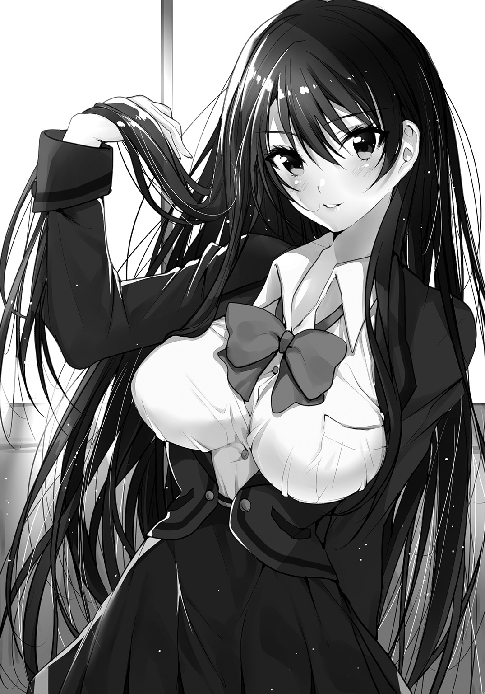

| WEB小説家になろうよ。 | |
| 早矢塚かつや | |
この本は縦書きでレイアウトされています。
また、ご覧になる機種により、表示の差が認められることがあります。
 ダッシュエックス文庫DIGITAL
ダッシュエックス文庫DIGITAL
ＷＥＢ小説家になろうよ。
早矢塚かつや
プロローグ
続きが、書けない......！
かっ、書けな......！
書けっ......！
ビクンビクンッ！
ベッドの上で悶えころがること数回、俺――東山静司――は頭を抱えて叫んだ。
「続きが、書けねぇぇぇぇ―――――――――――――――――――――――――――――――――――――――――――――――――――――――――――っっ！」
ドゴンッ！ とベッド脇の壁から鋭い衝撃。
「うるっせぇ、いま何時だと思ってんだこのウンコ兄貴！」
このかん高い声の主は、二つ年下の妹、東山可奈のものだ。
ちなみに、時刻は現在、夜中の一時三〇分。
ふつうに話していても隣の部屋まで声が響いてしまう我が家の住宅事情をかんがみれば、可奈がぶち切れるのも仕方のない話だ。
しかし、続きが書けないのである。
俺には、もう一つの名前があった。
東山セイ。
ずばり、ペンネームだ。
俺は小説投稿サイト『もの書きになろうぜ』で『俺の作ったプラモデルが異世界で無双する』というＷｅｂ小説を連載している。
『プラモ無双』は、ロボットのプラモデルを巨大化させた人型兵器で戦争をしている異世界に飛ばされた主人公キョーシローが、持ち前のプラモデルの知識や腕前を武器に異世界で成り上がっていくさまを描いた冒険譚である。
自分の作ったプラモデルを巨大化させて操縦する......俺がいつもプラモデルを組み立てながらしている妄想を、そのまま叩きつけたような話だ。
俺の作品は、投稿初日から閲覧者を集め、数日後の日間ランキングで二位を獲得した。
その時の獲得ポイントは、５２６２ポイント。
ポイントというのは、『もの書きになろうぜ』において読者が作品を評価するのに付与する、得点みたいなものである。
ブックマーク登録すると２ポイント。
さらに、文章とストーリーに５ポイントずつ入れることができる。
書籍化されたＷｅｂ発の小説に『何百万ＰＶ達成！（ＰＶは、ページビューの略。どれだけの人が読んでくれたかの目安）』みたいなあおり文がよく書いてあるけど、それとはまったく違うものである。
『なろうぜ』のランキングはポイントで決まっており、ＰＶの多寡は関係ない。
まぁ、ポイントの高い作品は、もちろん読まれてもいるわけで、総じてＰＶも高いんだけどな......。
とにもかくにも、一度日間ランキングでいいところまでいくと、それだけでサイトにやってきた人が「あとで読もう」と考えてとりあえずブックマーク登録してくれるので、週間ランキングの上位にも食いこんでいける。
自分の執筆速度を考えて、三日おきの午後八時に定期的に投稿するよう努めると、『プラモ無双』はトントン拍子でポイント数を稼いでいった。
そして、忘れもしない去年の十一月......集栄社ダブルエックス文庫編集部から突然「本にしませんか？」というメールが届いた。
それから５カ月ほど。
『プラモ無双』は今年の四月に、全国の書店にならんだ。
この時の感動といったら、そりゃもう言葉にできないくらいだが......今はひとまずおいておこう。
もう五月だ。
ゴールデンウィークは、終わった。
連休明けの中間試験も終わった。
具体的に日付をいうなら、五月十八日......え、もう十八日？
半分過ぎてんじゃん......。
前回の『プラモ無双』の更新日はいつだったか。
確認しなくとも、脳裏に焼きついている。
四月二十五日......『俺の作ったプラモデルが異世界で無双する１』の発売日だ。
本が書店にならび浮かれに浮かれたあの日から、俺は一歩も前に進んでいない。
『プラモ無双』の最終更新日から、すでに一カ月ちかくが経過しようとしているのにも、かかわらず――。
続きが、書けない......！
だんだん筆が進まなくなっていることに、気づいてはいた。
先ほど、三日おきに投稿するようにしたといったが、実際にそれをきちっと守ることができたのは、最初のひと月だけだった。
テスト期間中とか一週間くらい更新ができないこともあったし、だんだんと、俺は自分に課した締め切りに対してルーズになっていった。
なんなんだろう、これは。
自分のいい加減さがイヤになる。
奮起してパソコンにむかいワープロソフトを立ち上げるも、キーボードを叩く手は動かない。無理やり書いてもすぐに手がとまって、バックスペースキーの連打。無為に時間だけが過ぎ、やがて集中力は切れて、マウスカーソルは広大なネットの海へとこぎ出している。
ふり返ればこのひと月は、そんなことのくり返しだった。
作品の感想欄にもチラホラと「続きあくしろよ」とか「更新マダー（チンチン）（ＡＡ省略）」みたいな書きこみが増えてきている。
ぶっちゃけ、心が痛い。
「とりあえず今日も......感想の確認だけは、しておこう......」
俺はスリープ状態になっていたノートパソコンを立ち上げて、『なろうぜ』のサイトにアクセスした。
東山セイのアカウントでログイン。
『俺の作ったプラモが異世界で無双する』
小説更新日時 五月十八日
「あ？」
液晶画面の文字に、我が目を疑った。
『俺の作ったプラモデルが異世界で無双する』 第七十二話 魔改造の決意
作者である、俺自身が知らない『プラモ無双』の最新話が、投稿されていた。
アップされたのは今から約一時間半前。今日日付けが変わった直後だ。
間違いなく、俺の仕業ではない。
「まさか、違う世界線の俺が......？」
震える手で、俺はそれをクリックした。
◇◆◇
「なんじゃあこりゃあ――」
それが、真っ先に飛びでた言葉だった。
読めなくはないが、文章がめちゃくちゃだったのだ。
二つの文にわけるべきところをどういうわけか一文で書いていたり、修飾の関係が不明瞭だったり、一文の中に主語と述語が二つ以上あったりなんかして、とにかくひどい。
文章は、一文一文短く、シンプルに。
感想欄でよく「日本語の用法がおかしい」と指摘を受けるレベルの俺でも、それぐらいは心がけている。
しかし、この最新話を投稿したヤツは、それがまったくできていない。
つまり――。
「これを書いたヤツは......俺じゃない」
わかりきっていたことだ。
でも口にしなければ、とうてい受け入れられる事態ではなかった。
――俺の......東山セイのアカウントが、誰かに乗っ取られた。
まずおぼえたのは、怒りである。
『プラモ無双』がケガされたと思った。
しかしその怒りは、次なる衝撃に塗りつぶされた。
「......おもしろい」
いくら悩んでも思い浮かぶことのなかった『プラモ無双』の続きが、今、目の前にあった。
川をせきとめていた巨大な岩塊が砕けて、奔流となって流れていく。
「そうか......炉心を暴走させることで地下に沈めた二号機が......！」
目から鱗が落ちるとは、こんな時に使う言葉だろう。
「ちくしょう......なんだよ、ふざけやがって......」
肩が震え、目じりには涙がたまっていた。
歯を食いしばって、泣きそうなのをこらえる。
くやしかった。
俺の作品を、俺じゃないヤツが、俺が理想とするような展開で書いてきやがったのだ。
俺は、一カ月ちかくかけても、書けなかったのに。
「ちくしょう......」
唇を嚙みしめながら、一気に読み切った。
文章は最後まで、小学生の作文のほうがまだマシなレベルだった。
でも、もはやそんなことはどうでもいい。
これを書いたヤツは、俺だ。東山セイだ。
こと構想を練るという点においては、俺以上に完成された――東山セイなのだ。
くやしい......なんて言葉ではすまされない。
最後には、作者からのひと言コメントがあった。
『なろうぜ』には小説本編を投稿するごとに作者からのひと言を載せられる、『あとがき』の欄がある。
次の更新日時に関する告知や、世界観の補足をするのにみんなは使っている。
『プラモ無双』では、新たに登場した機体がある場合、いろんなロボット作品が一堂に会する某ＳＲＰＧ風のパラメーターを書いて好評を博していた。
しかし今そこには、どこかのサイトにジャンプするＵＲＬだけが記されている。
アカウントをハックしたヤツからのメッセージだろう。
瞬時に悟った俺は、ためらわずクリックした。
新たに表示されたページには、パスワードという文字と、それを入力するボックス。
「パスワード......？」
少し考えて、わかった。
俺は、いつも『なろうぜ』にログインする時に使っているパスワードを打ちこむ。
ＳＥＩＪＩ０１２６......ずばり、俺の名前と誕生日。
パスワードは認証されて、次のページに移動した。
「他の誰かが入りこんでこないようにってことだな......ここから先は俺とおまえ、二人の東山セイの舞台ってわけだ」
なに言ってんだ、俺？
ちょっと、特異な状況に巻きこまれて酔ってるな。
怒って、くやしがって、今はワクワクしている。
表示されたのはクロスワードパズルだった。
９×９マスの、ごくごくありふれたやつだ。
しかし、カギと呼ばれる、マス目を埋めるための問題文に目を走らせて、凍りつく。
ヨコ２ 東山セイがもっとも影響を受けた小説家。
「神崎玲人......？」
カタカナにすれば、カンザキレイト。該当するマス目は、ぴったり七文字だ。
俺自身ならば、まず間違えるはずのない問題。
しかし、一体何人の人間が、こんな出題をすることができるんだろうか？
神崎玲人は、『なろうぜ』のトップランカーの一人だ。
『なろうぜ』は、投稿された小説を獲得ポイントごとにランキング付けしており、サイトトップには、累計ポイントが高い上位十作品が表示されている（俺は、これを「殿堂入り」と呼んでいる）。
獲得ポイントという一側面だけの判断ではあるが、その十作品は『なろうぜ』に投稿された三十万という小説の、頂点に君臨しているといえるかもしれない。
現在、その第七位である『異世界の地下鉄王』の作者が、神崎玲人だ。
彼には他にも、『アンボックス！ ～異世界通販開封の儀～』という開封動画をネタにしたコメディや、『千年都市の絶海サバイバル』という巨大竜の背中で繰り広げられる都市運営もの、『繚乱戦記』というハードな戦記ものなど、さまざまな作品がある。
投稿作品数はこれまでに八本、すべて長編である。
同時に三つの作品を毎日更新するなどといった神業も一時期は行っており、六作を完結させ、五作品が書籍化した。
おそらく『なろうぜ』のユーザーでない人も、その名前を知っている人は多い。
俺は神崎玲人の作品に触れて小説を読む喜びを知り、小説を書きはじめた。
幅広いジャンルを自在に書きわける彼の作風はマネのしようもないが、物語の根底となるテーマやエッセンスは、受け継いでいると思う。
しかし......それはあくまで、書き手である俺自身だからわかる話だ。
自分で言うのもなんだが、俺はまだまだ、小説が下手である。
一つのシーンで語りたいことが十あったとして、文章化できているのは六か七ぐらいだ。
もし、そんな俺の作品から神崎玲人のにおいを嗅ぎとれる人間がいたとしたら、かなり深く読みこまなければダメだろう。
「やっぱり、むこう側にいるのは、俺自身じゃないのか......？」
東山セイが神崎玲人のフォロワーだと気づいている人がいるなら、ぜひとも会ってみたいものだが......。
「クロスワード、やってみるか」
紙に印刷して、とりかかった。
俺のことは最初のヨコ２だけで、他の問題はどれも、神崎玲人の作品に関するものだった。
くわえて、どれもマニアック。大半が、神崎玲人がこれまでに書いてきた作品を、複数回は読み返していないと解けないような難題だった。
しかし、俺には易しい。
まるで、低学年向けの算数ドリルでもしてるみたいに、マス目を埋めていく。
鉛筆を動かしながら、思わずほくそ笑む。
「ああ、やっぱりコイツ、わかってる」
俺と同じように神崎作品を消化してる。
きっと、俺の分身だ。
五分もかからず、すべてのマスを埋めることができた。
ａからｈまでのマスに埋まったカタカナを順番どおりにならべていく。
ネ ツ ト ブ ン ゲ イ ブ
「......ネット文芸部？」
どういう意味だろうか？
パズルの下にある回答欄に、出てきた八文字を打ちこみ、となりの送信ボタンをクリックする。
短いメッセージが、画面に映しだされた。
君の正体はわかっている。
東山セイを返してほしければ、放課後、ネット文芸部に来い。
第一話 「ロリババア先生とクラスのマドンナ」
シーン１ ロリババア先生
翌日、俺は学校に遅刻した。
原因はもちろん、あのアカウントハッキング犯からの「ネット文芸部に来い」というメッセージで、昨晩はろくに眠れなかったからだ。
二限目の途中で登校した俺は、その後も眠気が取れず授業中も爆睡し続け、六限目が終わる頃になってようやく完全に覚醒した。
ちょうどいい、放課後だ。
ネット文芸部というのがなんなのかは知らないが、さっそく探しに行こう。
俺がカバンを肩にかけて教室を出ようとした、その矢先。
「おーい東山」
担任の久馬サチ先生のかん高い声に呼びとめられた。
久馬先生――通称、キューマちゃん――は、身長百三十八センチの素晴らしいミニマムサイズの身体に、三十路手前の女の貫禄を内包した、我が校の名物古文教諭だ。
ラノベ的記号で表現するならば『合法ロリ』とか『ロリババア』ってやつになるだろう。永遠に失われぬ処女性を体現した、二次元にしか存在し得ないはずの究極のファンタジーを地でいくその容姿は、遠くない未来に世界遺産に登録されると信じている。
「なんですかキューマちゃん。俺は今日いそがしいんですが」
「キューマちゃんゆうなっ！」
ぐいっとめいっぱい背伸びして、出席簿で俺の頭を叩こうとするが、案の定、届かなくて空振りする。
ちっちゃい、かわいい。
「むぅ......おまえ、さっきのあたしの授業、ガン寝してただろう」
俺を叩くことはあきらめて、彼女は俺を上目づかいににらんできた。
そうか、六限目はキューマちゃんの古典だったのか......微妙にもったいないことしたな。
「罰として、教材を職員室に運ぶの手伝え」
「先生、聞いてください」
「年頃の男の懇願は、プロポーズ以外は聞かないことにしている」
「ババア、結婚してくれ！」
「誰がババアかっ」
「いや、今の発言はああ言えっていうふりでしょ!?」
つか、高二の男子を捕まえて年頃の男っていうのはどうかと思いますよ！
「うるせー責任とらすぞ。実家の農家、継いでもらうからな」
うへぇ、それは勘弁。
キューマちゃんのことはきらいじゃないが、若い身空で永久就職する踏ん切りはつかない。
まぁ農業はちょっと興味あるけどな。小説のネタにできそうだし。
ネット文芸部について探すあてがあるわけでもないし、俺は女児（二十八歳）の命令に従うことにした。
「おまえ、昨日の夜に更新してたな」
職員室に行く途中で、キューマちゃんが言った。
俺こと東山静司が東山セイであることを知っているのは、この人と家族、くわえてダブルエックス文庫の編集さんくらいだ。
昨年、古文の授業中に突然小説の神が舞い降りてきて、ネタ帳を真っ黒にしていたところを発見された。
職員室に連行され洗いざらい白状させられたあと、キューマちゃんは俺が『なろうぜ』に投稿してる小説を読んで、感想をくれたりしている。
小説を書いてるなんてまわりには打ち明けられるわけないので（『プラモ無双』の出版が決まるまで、家族にだって言えなかった）、キューマちゃんの存在は、俺にとってむちゃくちゃありがたかった。
昨晩えらそうに「一文一文短く、シンプルに」とか言ったけど、実はぜんぶ彼女に習ったことである。
つかこの人、『なろうぜ』について俺よりもずっと精通してるんだよなぁ......。
まず間違いなく、キューマちゃん自身も小説を書いて『なろうぜ』に投稿していると俺はにらんでいるが、ペンネームや作品については不明である。
「更新部分の感想だが、さすが一カ月悩んだだけはあるな......会心の展開だった――と手放しでほめてやりたいが、文章がいただけない。なんだあの文章は？ 素材も味付けも最高の料理なのに、わざわざそれをフードプロセッサーにかけてから盛りつけたような台なし感だった。いくら『なろうぜ』がアマチュアの創作空間とはいえ、いち国語教師として生徒のああいう日本語を見逃すわけには――」
百も承知のお小言を、最後まで聞くつもりはない。
「俺が『プラモ無双』の作者だってこと、他の誰かにバラしたりしてませんよね？」
言葉を遮って尋ねると、キューマちゃんは眉をひそめた。
「ん......どういう意味だ？ そんなデリカシーのないこと、あたしはしないぞ」
「だよなぁ......」
合法ロリで男にモテないキューマちゃんだけど、小説を見る目と人柄は信頼できる。
「おまえ今、あたしに対してものすごく失礼なことを考えなかったか？」
「好きな女の子ほどいじりたくなる男心デスヨ......そんなことよりも、ネット文芸部って言葉に心当たりありませんか？」
「そんなこととはどういう――って、ネット文芸部だと？」
「心当たりあるの!?」
「心当たりもなにも、今年からあたしが顧問をしている部活ではないか」
はい？
「ウチの学校の文芸部はかなりの人数がいたんだがな......去年の暮れに大げんかしたことがきっかけで、『純文芸部』『一般文芸部』『ミステリ文芸部』『ＳＦ文芸部』『ラノベ文芸部』『マンガ文芸部』......などに分裂したのだ。『ネット文芸部』は、そのうちの一つだな」
「いろいろツッコミどころ満載なんですが......」
とりあえず『マンガ文芸部』は素直に『マンガ研究会』に合流しとけよ......あれか？ 意識高い系か？
私立の我が校は、校舎の脇にデカい部室棟があり、部屋が潤沢に用意されていることもあって、よそでは聞いたこともないような部活も多い。
しかしネット文芸部、こんなに早く見つかるとは......。
シーン２ 西園海玲
職員室に到着した。
俺は運んできた教材をキューマちゃんの席においてから、職員室の入り口にある、各部活が連絡事項を伝えるために利用しているホワイトボードをのぞいた。
ビニールテープで枠組みされた表の、一番下。
ネット文芸部と書かれた欄が、たしかに存在している。
活動場所――部室棟３０６号室。
「......これ、本当にキューマちゃんが顧問なんですか？」
「そうだが」
「なにする部活なんですか？」
「ネット社会における文芸のあり方を考える部活だそうだ。匿名掲示板しかり、トゥイッターしかり、ネット環境における最もポピュラーなコミュニケーションツールは、文字言語だからな。たしかに筋はとおっている」
「筋の話は、べつにどうでもいいんですが」
「なっ――！」
俺の言葉に、キューマちゃんは驚愕の表情であとずさった。
「東山は未使用のスジよりも、使いこまれて黒ずんでいるほうが好みなのか......！」
「職員室で脈絡のない下ネタを飛ばさないでください。仮にも聖職者でしょう」
「生殖？」
「......さようなら。もう学校ですれ違っても話しかけてくんな」
職員室から出ていこうとすると、制服の裾をつかまれた。
「待て、悪かった。そのネット文芸部だが、まだ四人しか部員がいなくてな。今月中にあと一人集めないと、部が存続できなくなってしまう。Ｗｅｂ小説というのも立派にネット上の文芸ではあるわけだし、おまえどうだ？ 今なら入部特典として久馬先生の実家のお米を十キロやる」
「んな、新聞の勧誘じゃないんだから」
「むぅ......ネット文芸部には、我がクラスのマドンナ西園もいるぞ」
「え、西園？」
意外な名前だった。
「そ、西園海玲」
脳裏に浮かぶのは、夜の海を連想させる、きれいな長い黒髪。
それとは対照的に透き通った白い肌。
宝石をはめこんだような、大きな瞳。
二年に進級した先月、新たなクラスメイトの中で、真っ先に目に飛びこんできたのが彼女だ。
おそらく、教室にいた誰しもがそうだったと思う。
凜としたたたずまい。
いつも人当たりのいい笑顔を浮かべているのに、どこかおかしがたい。
雲の上に住んでいる天上人が地上に降りてきたら、こんな感じではなかろうかと考えた。
そんな西園海玲とは、一度だけ、話したことがある。
――これ、落としてたわよ。
そうだ。
あの時、彼女が拾ってくれたのは......！
俺はキューマちゃんに礼を言うと、はじかれたように、職員室を飛びだしていた。
この学校で、俺が小説を書いていることを知っている人間が、もう一人いる。
――中身、ちょっとだけ見えちゃったんだけど......東山くんて、小説書いてるの？
恥ずかしさのあまり顔から火が出そうだった。
俺は、あいまいにうなずいた。
――そうなんだ......すごいね。
――べつにすごくなんかないよ。
俺は、逃げるように彼女の前から走り去った。
四月の終わり、葉桜が目立ちはじめた頃。
俺が落としたネタ帳を、西園海玲は拾って届けてくれた。
動揺しまくってしどろもどろになってたくせに、すっかり忘れていた。
あの時、ネタ帳の中身を西園海玲が記憶していれば――。
そしてたまたまＷｅｂで公開されている『プラモ無双』を読んだなら――。
いや、あり得ないよ。
お嬢さまオーラ全開の西園海玲が、『なろうぜ』に投稿されているネット小説を読んでいるなんて、誰が想像できるか。
読書が趣味だとしても、レースのカーテンが風にゆれる窓際で『若草物語』を読んでるあたりが妥当だ。
つーか、マジでネット文芸部の部員なの？
俺は部室棟まで走った。
グラウンドを横切り、階段を駆け上がって、３０６号室にたどり着く。
『ネット文芸部 部員募集中』
ドアには貼り紙があった。
ノックするという発想もなく、俺は開け放つ。
そこには――。
「思ったよりも、早かったわね」
窓から射しこむ夕陽を背にして立つ、西園海玲がいた。
長い黒髪を片手でかき上げる。
ふわりと広がった繊細な黒髪は、一本一本が西日を反射して、星を散りばめたかのごとく光った。
ただ髪をかき上げるだけの仕草でも完成され尽くしていて、まばたきするのを忘れて見入ってしまう。
「すげーきれい」
つい、正直な感想がこぼれた。
「ふふん、そのとおりよ。このあたしが――て、え？」
「なぁ、もう一回さっきの髪をかき上げるのやってもらっていいか？ リサラの描写の参考にしたい」
リサラというのは『プラモ無双』のメインヒロインの名前である。
異世界に飛んでしまった主人公カナトがはじめて出会う、巨大化したプラモロボット（作中では、ナフサードと呼ばれている）のパイロットだ。亡国の王女さまで、冒頭でナフサードに乗ったまま空から落ちてきて、傷ついた彼女を助けるために、カナトは戦う。
そういえば、外見的な特徴が西園海玲に似ているな。
長い黒髪で、身長は百六十センチにちょっと届かないくらい。
均整のとれた魅力的なプロポーションなんだけど、他人より胸が大きいのを気にしている......って、これはリサラの話だ。
西園海玲も、ボタンをはめると制服が窮屈そうに見えるくらいには巨乳であるが、本人がそのことをどう思っているかは知らない。
「は、はぃぃ？」
「頼む！」
戸惑う彼女に、俺は頭を下げて頼みこんでいた。
「も、もー......こ、これでいいの？」

西園海玲は、再びかき上げて見せてくれた。
髪は、砂時計のごとく、サラサラと流れる。
「ほぁー......西園って、やっぱりむちゃくちゃ美人だよな」
「な――へ？」
黒髪の美少女は、シュボっと赤面して狼狽する。
「いや、見とれちまった......」
「み、見とれちまったって......な、なんでいきなり口説きだしてるのよっ！ そ、そういう場面じゃないでしょーっ」
西園海玲はこぶしをブンブンとふりまわして叫んだ。
「ハッ――そうだった。それどころじゃなかった」
我に返った俺は、ここに来た本来の目的を思い出す。
「東山セイのアカウントをハッキングしたのは、西園なのか？」
「そ、その質問だと......半分だけ正解よ」
赤くなった顔を隠すように縮こまっている姿は、教室でいつもニコニコと澄まし顔でいる彼女しか知らない俺にとっては、新鮮だった。
しかし、いちいちそれに言及していると、いつまでたっても話が進まない。
「半分なのか？」
「アカウントを乗っ取ったのは、ウチの部長よ。あたしは、『プラモ無双』の最新話と、クロスワードパズルをつくっただけ」
「じゃあ、君が......」
俺は、夕暮れのスポットライトを浴びる西園海玲を、まっすぐに見つめた。
――俺の分身。
深夜のテンションだったが、その評価に変わりはない。
しかし、とっさになにを言えばいいのか、わからなかった。
あれを読んだ直後の怒りやくやしさ、ワクワク感が一気によみがえってきて、たくさんの言葉が浮かんでは消えていく。
頭の中を整理して、なんとか出てきた言葉は次のようなものだった。
「どうして、あんなことを？」
「あんたがいつまでも続きを更新しないからに決まってるでしょ。もう書かないんなら、あたしが書いてもいいかなーって思ったの」
「いいわけあるか、むちゃくちゃほざくなっ」
「じゃあ、続き書くの？」
「書くよ」
「書けるの？」
鋭い切りかえしに、俺はこの一カ月間の苦悩を思い出し、たじろいだ。
それでも。
「か......書けるさ」
東山セイを、『プラモ無双』を、奪われるわけにはいかない。
「ふーん」
西園海玲は俺に歩みより、グッと顔を近づけてきた。
ふわりと、長い黒髪から柑橘系のシャンプーの香りがただよってくる。
「何日に一度、更新する？」
「え？」
「『プラモ無双』をはじめた時は、三日おきに更新していたでしょ。それが十月くらいからだんだんくずれてきて、今回は一カ月も音沙汰無し」
「......ずいぶんと、くわしいな」
投稿日は目次に記載されるから、リアルタイムで追ってなくてもわかるとはいえ。
「あたし、東山セイのファンだもん」
「な――」
頰がカッと熱くなった。
改めて言っておく――西園海玲は、クラスで一番の美少女である。
そんな彼女が、俺の小説の読者で......ファンだったと？
にわかには信じられなかった。
そんな俺の気配を悟ってか、西園は部室の隅の長机に置いていたカバンから、なにかを取りだした。
『俺の作ったプラモデルが異世界で無双する１ 著 東山セイ／イラスト そ～だ水』
よく知った名前と表紙の本......四月に出た、『プラモ無双』の文庫本だった。
しかも――。
「三冊も!?」
「い、家にはまだあと三冊あるわ......シュリンクにかかったままの保存用と、布教用と、あと使う用......」
恥ずかしそうに西園は告白した。
「使う用!?」
なんに使うんですかっ！
「そうだサイン、サインちょうだい！ 忘れるところだったわ」
急に思い出したように、彼女はカバンからまだ袋に入ったままの新品のサインペンも取りだして、三冊の『プラモ無双』と一緒に俺に押しつけてきた。
本にはご丁寧に、インクがにじまないように白い紙まではさんである。
「サインペン、わざわざ新品のを持ち歩いてるのか？」
「そんなわけないでしょ。あのメッセージ見たあなたが近いうちに来ると思ってたから、用意しておいたのよ！」
「サインとか一度も書いたことないし、考えてもいないんだけど」
「東山セイって名前を書いてくれればいいわよ。あと日付。あ、でも一冊にはあたしの名前も入れておいてね」
俺の中にある西園海玲像――といっても、遠巻きに見て深窓の令嬢っぽい、ぐらいしかなかったが――が、どんどん崩れていく。
自分の本を買ってくれていたうえにサインまでねだられて、悪い気はしないのだが......。
「サインってどこらへんに書くんだ？」
「ん、ふつうはここね」
表紙を開いて、カバーを外したところの白い余白を指さす。
俺は長机に座って、できる限りきれいな字を心がけて、サインを書いた。
『東山セイ ２０１５／５／１８』
最後の一冊には『西園海玲さまへ』といれる。
「はぁ～」
書いてる最中、横からのぞきこんでくる彼女の瞳はキラキラと輝いていた。
三冊の文庫を返すと、ぎゅっと胸に抱きしめる。
「家宝にするわっ」
「そ、そうか......」
いやま、クソうれしいんだけど、こんなことをしてる場合じゃなかったような......。
「で、東山セイは俺に返してくれるのか？」
話を元に戻すべく、俺は尋ねた。
「それは......ねぇ、あたしが書いた『プラモ無双』の最新話、どう思った？」
大事そうに文庫本をカバンにしまってから、西園は質問で返してきた。
「どうって......くやしいけど、内容に関してはケチのつけようがない。作者であるはずの俺が、一カ月かかって書けなかったものを、おまえは書いた......あれは、どうやってやったんだ？」
「ど、どうやったもなにも......きっとあんたが作品の続きを考える時と一緒よ」
ほめられて照れているのか、彼女は頰を朱に染める。
「このあとなにが起こったら一番おもしろいかとか、読者になにを期待させればいいかとか、伏線はどういうふうに使うのが効果的かなって考えて......あの展開は、『プラモ無双』の一巻を読みなおしていたら、自然と組み上がっていったわ」
「西園も、小説を書いているのか？」
「うん......ただあたしの文章って、他の人にはすごい読みづらいらしくて、友達とかに読んでもらっても解読できないとか言われちゃうんだけど」
自覚がないのか。
まぁ、だからこそあんな文章を書いていても平気でいられるのかもしれない。
しかし、それだけを理由に西園海玲の書いたものが評価されないのは、もったいないと俺は感じた。
「だからまぁその......あんな手段で静司をここに呼び出したのは、これを伝えるためよ......」
静司。
いきなり下の名前で呼ばれて、心臓が高鳴った。
「東山」と呼ぶと東山セイと紛らわしいからだというのはわかるが、それでもドキドキするものはドキドキする。
夕陽の射しこむ、二人きりの部室。
西園海玲は顔を真っ赤にして、言った。
「あたしとコンビを組んで、小説を書いてくださいっ」
さっきまでずっと居丈高な態度だった彼女が、九十度のお辞儀をする。
そのさまは、玉砕覚悟で積年の想いを告白する女子中学生みたいに、可憐だった。
シーン３ コンビ結成
コンビを組んで、小説......？
すぐには理解できなくて、とにかく俺は、まだサインを書くために長机の前に座ったままだったことに気づいて、彼女の正面に立った。
西園海玲は、ぎゅっと縮こまるようにお辞儀をしたまま、動かない。
「頭を上げてくれ」
「ん......」
言われたとおりに頭を上げるも、手で顔の半分を隠していた。
おそらく、恥ずかしいんだろう。
そんな態度を取られると、こっちまで変な気分になってくる。
「一つ訊いていいか？」
こくり、と首を縦にふる。
「それが目的なら、あの最新話の原稿を直接俺に見せてくれればよかったんじゃないか？」
「......だって、教室だと、恥ずかしかったから......」
おどおど子犬のように震えながら、西園は唇をとがらせた。
「それにあんた、放課後はすぐに帰っちゃってなかなかつかまらないし......あたしもネット文芸部の人以外には小説書いてること秘密にしてるから、まわりに友達とかいると......」
お嬢さま然とした西園は、クラスでも取り巻きが多い。
教室の片隅でネタ帳とにらめっこするか、スマートフォンでＷｅｂ小説を読むか、文庫本（おもにラノベ）を読んでいるかの俺とは対照的に、常時クラスメイトに囲まれているといっても過言ではない。
「事情はわかるが......朝早く来て、こっそりプリントアウトした原稿を俺の机の中に入れとくとかさ......アッて顔すんなよ、気づかなかったのかよ、アホの子かよっ」
「ぶ、部長に相談したら、それならアカウントハッキングをして載せてみるのがドラマチックでおもしろいんじゃないかっていうから......」
「不正アクセス禁止法って知ってるか？」
「法律!? あたし死刑なのッ!?」
どうやらすべての罪は、その部長という人にあるらしい。
死刑はない、と慰めるべく彼女の頭をなでた。
ポーッとのぼせたようになって、しおらしくなる。
「こ、これでも、ちゃんと覚悟はしていたのよ......作家にとってその作品っていうのは分身みたいなものだし......あたしのやったことは、それを踏みにじる行為かもしれない......でも、静司とあたしは同じなんじゃないかっていう確信も、あって......」
すると西園は、ふいに自分の制服のリボンをほどきはじめた。
「西園、なにをしている......！」
「もしも静司が自分の聖域を侵されたって感じていて、責任を取れっていうんなら、あたしはあんたの望むままに......その、な、なんでもするわ」
リボンをしゅるっと抜きとり、ブラウスの第二ボタンまで外す。
豊満な胸の谷間が、はっきりと確認できた。
「なんでもするって......」
「なにをされても当然の報いだって思うし......でもあたしも本気だから......ゆ、許してくれるなら、こ、これぐらいなんでもないわ......た、ただその......」
今にも消え入りそうな声で、つけ足す。
「......は、はじめてだから......優しくしてください......」
無防備な発言の連発に、俺は目眩をおぼえた。
いろいろしたくない――はずがない。
俺だって男の子だ。
いや、そうじゃない。取材だ。
『プラモ無双』は、女の子がいっぱい出てくるハーレム要素もある。
主人公のカナトが女の子の胸をさわるシーンを描写するのにあたっては、おのれの人生経験の乏しさに血の涙を流し、マシュマロを口いっぱいに頰ばりながら乗り切った。
次の日読み返してみて、そのクオリティーの低さにやっぱり一度さわらなきゃダメだと奮起するものの、まわりにおっぱいをさわらせてくれる女の子などいるわけがない。
試しに妹の可奈に「胸をさわらせろ」と壁ドンしてみたが、そもそも妹の胸が壁と見分けがつかなくて、次の瞬間には俺も壁の一部になっていた......。
次こそは、リアリティーのあるおっぱいの描写をするためにも、俺は......！
「――ってダメだろ、さすがに！」
腕をおさえつけて、叫んだ。
おっぱいはさわりたいが、現状俺は、彼女に『プラモ無双』をケガされたとは考えていない。
もしもここで自らの本能に素直になれば、それは自分の作品をダシにして西園のおっぱいをさわったということになる。
それはダメだ。
二度と純粋な気持ちで小説が書けなくなる......気がする。
「あたしの身体じゃ、不満？ スタイルは、それなりにいいほうだって言われるけど......なにか特殊なフェチが......？」
「ねぇよっ！ とにかく前をしめてくれ。俺はべつに自分の作品をケガされたとか考えてないから！ さっきも言ったろ、『内容に関してはケチのつけようがない』って。つか今俺は、心の底からおまえのことスゲー、こいつ何者だって思ってるの！」
「えへへ......名乗るほどの者では」
西園は照れながら、制服をなおしはじめた。
リボンを結ぶ衣擦れの音が、ヤケになまめかしく、部室を支配する。
たくましいピンク色の想像力をふり払うべく、俺は質問をすることにした。
「一緒に書いてくれって言ってたけど......なんでそんな提案するんだ？」
小説の創作は、ふつう一人でするものだ。
エラリー・クイーンや岡嶋二人、更伊俊介先生など例がないわけじゃない。が、アシスタントがいたり話と絵の部分で作業を分けられるマンガ家とくらべると、その数はずっと少ない。
「静司となら、できると思ったから」
リボンを結び終えてから、彼女は言った。
「あたし、中学の頃から友達とペアで小説を書いてた。あたしが原作で、その子が本文の執筆......でも去年の夏に、ちょっといろいろあって、小説を書くのをやめてたの」
その時のことを思い出してか、西園はつらそうな顔をした。
なにがあったのか気になったが、俺は黙って、先をうながした。
「東山セイの名前を知ったのは『プラモ無双』が日間ランキングに載った時ね。あんたが前に連載していたやつも遡って読みなおして......スマホを持つ手が震えた......画面のむこう側に、あたしの分身みたいな人がいるって思ったの」
きっと、昨夜の俺と同じだろう。
「続きを楽しみにしていたのに、先月からあんたが更新をぱったりとやめちゃって......なんとなく、悩んでるんだろうなって、わかった。次の瞬間、あたしにはこの小説の続きを書けるって思った。そしたら、おさえこんでいた小説を書きたいって気持ちがバーンて破裂して......気がついたら、あの七十二話を書いてた」
熱っぽく語った西園は、そこでひと区切りつけて、改めて俺を見つめた。
「あたし、また小説を書きたいって思ってる。できれば――」
一歩前に出て、西園は手を握ってくる。
「あなたと」
やわらかな手だった。
頼りないくらいに細くて白いのに、その内側でなにかが燻っているみたいに熱い。
これが、あの『七十二話』を生みだした手なのかと思うと、俺は強く握りかえしていた。
「前に一緒に組んでいた子が、言ってたわ。小説は、ストーリーと描写でできているって......あたしはストーリーを練ることはできるけど、上手い描写を書くことはできない......だから、静司の言葉が欲しいの。代わりにあたしも、あたしが持ってるもの、ぜんぶ差しだすわ」
心臓がしめつけられる――なんてもんじゃない。
全身の血が沸騰してしまうのではと思うほど、俺の身体は熱くなった。
今さらながら、俺は作家として、西園にプロポーズをされているのだと悟る。
欲しい。
理性よりも、本能でそう感じた。
しかし喉がつまって、なにも言えない。
小説家のくせして、こういう大事な時に、言葉が出てこない。
ああ、もう、くそ！
なるようになれ、だ！
俺は衝動に任せて、西園海玲の背中に腕をまわしていた。
「え、ちょ――」
彼女もこれは予想外だったのだろう......身体をびくんとふるわせて、しかし――。
「こ、これが答え......なの？」
もがくことはせず、ただささやくように尋ねるだけだった。
「ああ。俺は、東山セイは......西園海玲が欲しい」
「う、うん......」
たとえ今ここで学校に爆弾が落ちてきたとしても、俺は彼女を放すまい。
東山セイが新生した瞬間だった。
二人で一人の、小説家という生き物。
頭は二つ。手足は八本。
世の中の退屈を徹底的に破壊して、塗りかえていくクリーチャーだ。
その時。
ガチャリと、部室のドアが開いた。
「やほー、みんなのアイドル教師キューマ先生だよー。みんな元気かー？」
アホな挨拶とともに部屋に入ってきた、おそらく赤いランドセルが日本一似合う古文教諭（二十八歳 独身）。
西園の肩越しに、俺とキューマちゃんの視線が重なる。
「あー......すまん。邪魔したなー」
キューマちゃんは、逆再生するみたいに後ろに下がって、部室のドアを閉めた。
部室に響きわたる、二つの悲鳴。
産声であった......かもしれない。
第二話 「新生、東山セイ」
シーン１ 夢じゃない
翌朝。
昨夜もやっぱり興奮して遅くまで眠れなかった俺は、あくびを嚙みころしながら登校した。
あのあと、我に返ってお互いの顔を見ることも困難となってしまった俺たちは、「大事な話は明日にしよう」と、連絡先だけ交換して、別れた。
家に帰ってから真っ先にしたのは、パソコンを起動して『なろうぜ』に寄せられた『プラモ無双 七十二話』の読者の反応を確認することだった。
更新待ってました！
ちょー心配してました！
内容のほうは申し分ないのですが、今回は誤字脱字等が多すぎませんか？ 無理をなさらず、ゆっくりでもかまいませんので、これまで通りの完成度のものをお待ちしております。
文体変えたんですか？ ちょっと読みづらかったです。
ずらずらと文章の誤りを指摘してくれるものから、復活を祝ってくれるひと言コメントのようなものまで、反応はさまざまであった。
おおむね西園の書いたストーリーは好評だが、やはり彼女の文章には戸惑っているみたいである。
「けど、みんな待っててくれたんだな......」
そう思うと、涙腺がゆるんだ。
二度と、告知もなく一カ月も空けるなどという無責任なことはすまい。
俺は、感想の一つ一つにコメントを返しながら、胸に誓った。
これから東山セイは......『プラモ無双』はどうなるのだろうか？
西園海玲という女の子は、俺が生みだしてしまった夢か幻じゃないかという不安がよぎり、ベッドに入ってもなかなか眠れなかった。
そして、現在である。
「「あ......」」
教室に入ろうとしたところで、件の西園海玲とはち合わせになった。
おそらく眠たげな顔をしているだろう俺に対して、西園の瞳はパッチリとして、キラキラしている。
つややかな黒髪からふわりとただよってくる香りに、昨日、衝動的に抱きしめてしまった時の彼女のぬくもりや身体のやわらかさが思い起こされた。
「おす」
「あ、おはよ」
片手を上げて挨拶すると、西園は笑顔で返してくれた。
心の内で、安堵する。
どうやら、昨日のことは夢ではなかったらしい。
「海玲？」
だが次の瞬間、西園は背後から友人たちに声をかけられて、表情をこわばらせた。
二人の友人は、どちらも不思議そうな顔で、俺と海玲を交互に見ている。
ギクシャクした雰囲気を纏って、西園と友人二人は、俺の横を通り過ぎていった。
背後から、彼女らの声が聞こえてくる。
「今の東山くんだよね。海玲って、仲良かったの？」
「な、ないないっ！ 目があったから挨拶しただけでしょ」
「だよねー。あいつ、ふだん教室でも本読んでるか、スマホいじってるか、寝てるかじゃん。あんな暗そうなヤツが海玲と仲良いわけないっしょ」
ぐさっ。
「そこまで言わなくても......。ちょっと目つきが怖くて、近寄りがたいかなってところはあるけど」
ぐささっ。
「アハハハ......」
遠ざかっていく声は、西園の乾いた笑い声を最後に聞こえなくなった。
暗そうで目つきが怖くて近寄りがたいか......なに一つ言い返せねぇ。
小説を書くために夜更かししているのが原因というのはわかってる。
しかし、どうしても深夜のほうが筆がノってしまうのだ。
自分の席について机に突っ伏すと、ポケットのスマートフォンがブルブルと震えた。
西園からのメールだった。
彼女からのメール、第一号である。
『ちょっと、教室で気安く話しかけないでくれる』
メールはいいのかよ、と考えたが、おそらくはトイレにでも入ってるのだろう。女子って、なぜか群れてトイレに行くし......。
メールには続きがあった。
『昼休み、また部室に来て。お昼ご飯食べながら今後の打ち合わせよ。いい、あたしが小説を書いてることは、絶対に秘密だからね（ ﾟ⊿ﾟ）』
小説を書いていることは秘密か......そういえば、昨日そんなことを言ってたな。
俺も隠してはいるけれど、休み時間のたびに友達に囲まれているようなあいつの場合、俺よりもずっと気をつかうことが多いんだろう。
それに比べると俺は、カバーを掛けてはいるが、教室でラノベ読んでるしな。
ところでまったく関係のない話だが、このメールを書いている西園は、トイレの個室でパンツを脱いでいるのだろうか？
......脱いでるといいなぁ。
俺は、下らぬ妄想にふけりながら『なろうぜ』にアクセスし、日間ランキングをチェックする。
目にとまったのは、五位にランクインしている『声優使いのオタ芸撃打』という異世界召喚モノだった。
一週間前から投稿されはじめたものらしく、まだ十話くらいしか投稿されていない。
あらすじを読んでみると、どうやら異世界に召喚された声優オタクの主人公が、召喚士として活躍する物語らしい。
異世界の呪文をうまく発音できない主人公が、試しにオタ芸を打ってみると、元の世界のアイドル声優を召喚できてしまい、さらに主人公がオタ芸を打つと、その声優の女の子に、思い描いたアニメキャラを憑依させることができるという設定だ。
声オタとアイドル声優は、圧倒的なパワーで魔族軍を蹴散らしていく......。
そこで、チャイムが鳴った。
担任のキューマちゃんが機嫌良く教室にはいってきて、ＨＲをはじめる。
俺は『オタ芸撃打』をとりあえずブックマーク登録して、黒板のほうに集中した。
キューマちゃん、俺へのマークキツイからな......。
シーン２ 入部
昼休みになった。
父が出版社に勤め、母が小学校の教員という我が東山家では、子どもたちの昼食は購買か学食で、と決まっている。
俺は購買で焼きそばパンとメロンパンを買ってから、西園と今後の打ち合わせをすべく、ネット文芸部の部室、部室棟の３０６号室に足をむけた。
部室の前までやってきてドアをノックすると「どうぞ」と抑揚のない淡泊な声が返ってくる。
中に入ると、部室の中央には、昨日はなかったござが敷かれていた。
各部室に標準装備されている長机が隅に置いやられていたのは、これを敷くためだったのだろう。
ござの真ん中には、小さな女の子がちょこんと座っていた。
少し青みがかった黒髪をショートボブにした、小動物みたいな印象を受ける少女だ。
「どちらさま？」
「に、二年四組の東山だけど」
初対面の女の子を前にして、俺は戸惑いがちに答えた。
彼女はなにか納得したように「ああ、君が」とうなずき、じろじろと俺を観察しはじめる。
「......★★★☆☆」
「なんの評価ですか？」
「君の第一印象......それよりも、五百円ね」
少女が手を出してきた。
セリフとアクションから察するに、五百円を払えということだろう。
先ほどの発言といい、突然のことにわけがわからず、俺は首をかしげた。
「新手のかつあげか」
少女は首を左右にふる。
「このござの、一人あたりの値段。前回の会合で部室に敷こうという話になったから、ボクが昨日ママゾンで注文して、今朝届いたのを持ってきたの」
「昨日注文して今朝届いたのか......早いな」
「プレミアム会員だからね」
すげぇなプレミアム会員。
俺の場合、発送通知メールから一日おかないと来ないぞ。
「しかし待ってほしい。俺は、この部の人間ではないんだが」
「......？ でも、君が東山静司なんだよね？ だったら入部したってことじゃないの？」
俺、さっき『東山』としか名乗らなかったよな。
しかし彼女の様子を見るに、冗談で言っているのではないらしい。
「それは、どういう意味――」
すると、俺の言葉を遮るように、部室のドアが開いた。
入ってきたのは、西園海玲である。
「あー、疲れたー......」
教室では決して拝めぬどんよりとした表情で、入ってくるなりござの上に倒れこむ。

「合コンで出会った大学生にガチで告白されたとか言われても知らんて......付き合いたいなら付き合えばいいし、イヤなら断ればいーじゃん......」
ブツブツと何事かをつぶやく。
どうやら、ここに来るまでにいろいろあったようだ。
クラスの人気者は大変だなぁ......。
「ああ、林檎......ござ、買ってくれたのね。ありがとう」
「一人頭五百円ね。海玲、それよりもスカートがめくれてパンツが見えてるよ」
「べつにここにはあんたとあたししかいないし......」
「いるよ」
ショートボブの少女がドアの脇に立っていた俺を指さすと、西園は上体を起こし、ぐりんと首をひねって、俺の姿を確認した。
「あ、あわわわ......」
「......よぉ」
「ああああんたっ！ どうしてこんなところにいるのよっ!?」
西園は、俺がいることがそんなに衝撃的だったのか、つかみかかってきた。形のいい柳眉を逆立ててはいるが、少々童顔気味の彼女のこと、顔を近づけられても迫力には欠ける。
......ドキドキはするが。
「どうしてもなにも、おまえが来いって言ったんだろうが」
「え......あーッ、そうだったーっ!!」
オーバーリアクションで、その場に頭を抱えてしゃがみこむ。
やっぱりアホの子か。
「......見た？」
潤んだ大きな瞳で、上目づかいに尋ねられた。
むろん、パンツのことだろう。
ピンク地にレースがあしらわれた下着がチラリと確認できてしまったが、ここは首を左右にふった。
「見てないよ」
「うー......」
西園は、あやしむように俺をにらみつけ、うなった。
「ボクははっきりとクマのバックプリントを見たよ。海玲は思ったよりも子どもっぽいパンツをはいてるんだね」
「え？ 今のはピンクのレースだったろ！ 下半分しか見えなかったけど、アレはどう見たって――ハッ!?」
林檎は、にやりと、破顔する。
しまった、乗せられた......!?
「見たんじゃないのよっ！」
西園の鋭い突っこみチョップが、脇腹に突き刺さった。
今度は俺の身体が、ござのマットに沈む。
「ったく......まぁ、気をつかってくれたんだろうし......最初に気を抜いて見苦しいものを見せてしまったのはあたしだから......悪かったわね」
素直に自分の非を認めながら、西園はござに座った。
「見苦しくなんかなかった。むしろ、ずっと見ていたいぐらいだった」
がすっ！
「そーいうよけいなひと言はいらないのよっ！」
「わかってはいるんだがね......言わずにはいられんのさ」
「激しく同意」
林檎が俺の言葉に賛同し、ハイタッチを求めてくる。
パチーン。
「......なによ、あんたら二人とも、もう仲良くなったの？」
「仲良くなどなってはいない......この男とは、ただ海玲をいじるという一点でのみ共闘したまでのこと」
林檎は、少年マンガのライバルキャラみたいなセリフを口にした。
「正直に白状するとなにがなんだかわからないから、早く説明してほしいんだが」
「ああ、そうね......えっと、じゃあまず手はじめに、このちんまいボクッ子は、暮里林檎。あたしと同じネット文芸部の部員よ」
「ちんまいはよけい」
「で、こいつはこの前の会合で話した東山静司ね。昨日晴れてネット文芸部に入部することに決まったから」
「待て待て」
俺の紹介をはじめる西園を、あわててとめる。
「いつのまに俺はこの部に入部することになったんだ。たしかに、東山セイを一緒にやるとは言ったけどさ」
「あ、そっか......昨日はなにも話せなかったのよね」
西園は説明した。
「あたし、家とか教室だと集中して小説が書けないから......東山セイとしての活動も、大半をこの部室でしようと思ってるの。強制はしたくないけど、できればパートナーであるあなたが、その場で感想とかくれると、すごく助かる」
「そういうことか......」
彼女は教室では小説を書いていることを隠しているし、俺も家が必ずしも執筆活動がはかどる場ではないことを承知している。我が家の場合、妹の可奈が女友達を連れてきたりすると、うるさいことこの上ないのだ。
作家は喫茶店とか利用してるって話もよく聞くけど......西園がやりやすい環境なら、金がかからないぶん、こっちのほうがお得か。
「パソコンがなくても大丈夫なのか」
「あたし、プロットは手書きだから」
そういえば、ストーリーと本文執筆にわかれるんだったな。
「しかしそれだと、俺は部活のあいだどうすればいいんだ......？」
「パソコンも、一つ置く予定だよ。もう注文してある、ママゾンでね」
横で話を聞いていた暮里が言った。
「マジか、暮里」
「ネット文芸部だからね。あと、ボクのことは林檎でいいから」
それなら、西園がプロットを書いているあいだ、俺が時間や暇をもてあますということもなさそうだ。
「けど、他の部員はそれでいいのか？」
ネット文芸部がどんな活動をするのかは知らないが、部室を占拠して小説を書いていたら、邪魔ではないかと思う。
「平気だと思うよ。特別な活動をするんでもなければ、みんな毎日来るようなこともないだろうし」
まぁ、『ネット』がついても、『文芸部』だしなぁ。
なにかと学校行事に駆りだされる吹奏楽部や、頻繁に公演をやったりする合唱部とかでもない限り、文化系の部活が毎日いそがしく活動しているなんて話は聞かない。
「――というわけで、現在部員が四人で、今月中にあと一人入部してくれないとネット文芸部は廃部になってしまうんだけど、他に言うことはあるかしら」
「ママゾンで注文してしまったパソコンを無駄にしないためにも」
西園と林檎、二人の女の子に左右から詰めよられて、俺は不承不承うなずいた。
「......わかったよ、入部すればいいんだろ」
かくして俺の、入部が決まった。
シーン３ 方針
「で、東山セイのこれからのことなんだけど」
気を取り直し、昼食のお弁当をつつきながら、西園が口を開いた。
俺も買ってきた焼きそばパンにかぶりつきながら、「おぅ」と首を縦にふる。
口の中には、何度食べても飽きない、濃厚なソースの味とそばの食感が広がっていた。
「あたしとしては『プラモ無双』を終わらせて、次の話に行くべきだと思うのね」
「ゴホッ、ゲホッ、ガッハ！」
口から飛び出しそうになったそばとパンをなんとか押しとどめ、紙パックのコーヒー牛乳で流しこんだ。
「ちょ、大丈夫？」
「だいじょうぶ......それよりも、今なんて」
「だから、『プラモ無双』は、もう終わらせるべきじゃないかなって、思うのよ」
あらためて告げる西園を、俺はマジマジと見返した。
冗談で言っているようには見えない、真剣な瞳。
「け、けどさ......一巻が出たばっかりだぜ？」
本が出たことで注目が集まり、再びポイント数も伸びてきた。
ここで『プラモ無双』を終わらせるという発想は、俺にはなかった。
「ちょうどいいじゃない。注目されている現状で、クライマックスの、一番盛り上がるところが書けるわ」
「なるほど......って、そうじゃなくて......終わらせられるのか？」
西園はうなずいた。
「ここから畳み掛けて、あと十話くらいかしら。もちろんブリギアの問題は解決して、天空島のアオジマでバンダインと決着をつけて、きっちりと話にエンドマークはつけるわ。たぶん、今が岐路だと思うの」
「岐路？」
「『プラモ無双』をきれいに終わらせるか、新展開や新勢力を出して、引き延ばしていくか。正直あたしは、『プラモ無双』はあんまり長引かせるべき作品ではないと思う。もちろん喜んでくれる読者もいると思うけど、展開が間延びしていると感じて離れる読者もいるわ。静司は、どう思う？」
「え？ あ、イヤ......」
すぐに言葉が出てこなかった。
俺はわりとその場その場で、次の展開を考えて書いてきた。
言われてみれば、十話以上先の見通しがあったことなんて、なかったかもしれない。
そんなことだから、一カ月近くなにも書けずに詰まってしまう、などということが起きたのだろう。
......ああ、そうか。
『プラモ無双』は、もう終わろうとしていたのだ。
だんだんと主人公以外のキャラに視点を移して、本筋から外れた描写をすることも多くなっていた。
今終わらせるのが、『プラモ無双』にとって最良の幕引きかもしれない。
十秒の黙考。
俺は『プラモ無双』を終わらせることと続けることを、天秤にかける。
愛着のある、大事なキャラたちだった。
それと別れるということを想像すると、もちろん寂しい。
しかし、やりきってしまったのかもしれない、とも思った。
もともと、俺が作ったプラモデルが巨大化して、異世界で乗りまわせたらどんなに楽しいだろうかという、ワンアイディアから生まれた作品だ。
もちろん書くにあたって俺のプラモデルや物作りへの哲学をこめはしたけれど、それについて、今俺ができるレベルでは書ききったと思う。
俺が『プラモ無双』で成し遂げたかった目的は、果たしたのかもしれない。
あとは、きれいに着地するだけ......。
「......わかった」
俺は、口を開いて、うなずいた。
「『プラモ無双』は、終わらせよう」
「決断が早いわね......こんな提案をしたらイヤがるか、もっと悩むと思ってたのに」
俺自身も、愛着のある物語をこんなにスッキリと畳む決意がつくとは意外だった。
しかし考えれば考えるほど、本当に『プラモ無双』のことを考えるのならば、西園の提案を受け入れる以外の選択肢はないような気がする。
「大事なことだし、今この場で決めなくてもいいけど......」
「いや、大丈夫だ。クライマックス、これまでで一番盛り上がるんだろ？」
西園は照れくさそうに縮こまる。
「ど、努力はするけど......いきなりあたしの提案を受け入れすぎじゃない......？」
「あの『七十二話』や俺を試すクロスワードパズルを見て、西園は俺の分身だって思ったんだ」
「な――」
ちょっと恥ずかしいセリフだな、と思いつつも、俺の本心であることに違いはない。真っ正面からはっきりと告げると、西園は顔を真っ赤にして、うなずいた。
「あ、あたしも......同じように感じたから、あんなことをしたわけで......ごにょごにょ」
もじもじとくすぐったそうに身体をゆらす西園。
「お二人さん、この場にボクがいること忘れてない？」
コンビニのおにぎりを小さな口でついばむように食べていた暮里林檎が、つぶやいた。
そういうわけで、西園と俺がコンビを組んだ新生東山セイの最初の方針は、現在連載している『プラモ無双』を終わらせることに決まった。
シーン４ ネット文芸部の人々
放課後になった。
西園と俺は、一緒にいるところを見られないようにするべく、時間差をつくってそれぞれ部室にむかう。
先に教室を出た俺は、廊下で林檎の小さな背中を見つけて、声をかけた。
「よ、これから部活か」
「ううん。今日はママゾンで注文した商品が届くから、すぐ帰る予定。二人の邪魔はしない」
「二人の邪魔って......変な言い方すんなよ」
「二人だけだからって、エッチなことしないようにね」
無表情で念を押してくる林檎に、俺はこめかみをおさえた。
強制的に話題を変える。
「ネット文芸部の他の部員って、どんな人がいるんだ？」
「あとは三年生が二人。一人目は小鳥部長」
「部長......ああ、俺のアカウントハッキングの教唆と実行した犯人か」
「アカウントハッキングというほど大したものでもなかったけどね......ボクもその時そばにいたんだけど、ログインＩＤに使えるフリーメールアドレスは東山セイのトゥイッターで公開してるし、パスワードは本名と誕生日の組み合わせ......あれじゃあ乗っ取ってくださいって言ってるようなもんだよ。さすがに部長ももうちょっと用心しろって怒ってた」
「はい......」
ハッキング犯からのお叱りに、俺は素直にうなずいていた。
誕生日とかトゥイッターでつぶやいちゃってたしな......パスワードが『ＳＥＩＪＩ』だから本名がバレなきゃ大丈夫だと思ってたけど、たしかに不用心だったな。
帰ったら、別のパスワードを考えよう......。
「ちなみに小鳥部長、うっかり口をすべらせて『なろうぜ』にハッキングしたことが父君にバレちゃって、現在お務め中」
「マジか......その父君っていうのは、警察関係者かなんかなのか？」
「んーん。ネットのサーバーとかを世界中に配置して、Ｗｅｂトラフィックを管理してる会社だって」
よくわからんがすごそうだ。
「もう一人、チエル先輩は、ラノベの賞に応募するための原稿を書いてる」
「へぇ......ラノベ作家志望なのか？」
「ううん。ヤプー知恵袋の質問に答えるため」
「......どういう意味だ？」
ヤプー知恵袋とは大手の質問掲示板だが......それとラノベの賞に応募することの繫がりが見えない。
「ラノベ作家を目指している中学生から、最近ラノベ作家もののラノベを読んでいると、『エ○マンガ先生』の山田○ルフ先生や千寿ム○マサ先生、『妹さえ○ればいい。』の○児那由多先生など超美少女なライトノベル作家が登場するんですが、僕もラノベ作家になって美少女ラノベ作家とお友達になりたいです。ラノベ業界に出会いを求めるのは間違っているだろうか？ っていう質問があって、それに答えるために」
「○が多すぎてわけわかんないことになってるうえに、なんか攻撃的な質問だな......」
べつに、ライトノベル作家が美少女だっていいじゃないか......もう織田信長もアーサー王も美少女になっちゃう世の中なんだから。
草木国土悉皆成仏って言うだろ。万物に仏性が宿るように、どんなものにだって美少女性はあるんだよ。
「なるほど、静司はクラスメイトの声優の女の子に首を絞められればいいって言うんだね」
「脈絡を無視して無理やりネタをつなぐな......しかし、その質問に答えるためにラノベ作家になろうっていうのが、まるで理解ができないんだが」
三年生でしょ、受験勉強はいいわけ？
「ヤプー知恵袋はチエル先輩の主戦場だから......コレと思った質問には、本気で回答するんだよ。聞いたことがない？ 『ＩＤ ｃｈｉｅｌ11』って」
「『ＩＤ ｃｈｉｅｌ11』......ネットのうわさに聞いたことがあるな......誰にもわかんねーよってひと月以上も放置されているような質問に、ひょっこりと現れて答えていく知恵袋の女神......どう見たって無茶ぶりな質問に、誰もが度肝を抜くほど精密な調査による回答をしたかと思えば、ウィットのきいた冗談できれいに受け流したりもするという......ヤプーによってドラマ化された回答もかなりの数にのぼるとか......」
「それがチエル先輩」
「マジか！」
ヤプー知恵袋ってあんまり利用しないから、ネットの都市伝説かと思ってたよ！
「なんだって、そんな労力を知恵袋に......」
口にして、ふと、昨日のキューマちゃんの言葉が思い出された。
ネット環境における最もポピュラーなコミュニケーションツールは文字言語。
「なるほど......ネット社会における文芸を探究するっていうのは、そういうことか」
俺のつぶやきに、林檎は首を縦にふった。
「ネット文芸部の設立宣言で、小鳥部長は言った......我々の紡ぐ言葉が、地球を覆うネットをとおし、世界を掌握する――と」
「たかだか文芸部が、世界掌握とは豪儀だな......」
もしかして俺は、とんでもない部活にはいってしまったのではなかろうか？
「文芸には世界を掌握するだけの力があるよ。人の心を動かすのに最も適したツールは、人の言葉だからね。もちろん絵や音楽みたいに言葉を使わない手段もあるけれど」
「言ってることはわかる気もするが......勘違いやミスリードも多い気がするな」
掲示板とかで議論をしているのを俯瞰して読んでいると、ちょっとしたニュアンスが相手に伝わっていないと感じることがよくある。
「だからネット文芸部は、ネット世界での文芸のあり方を考えるんだよ」
「ふむ......」
こうして聞くと、お題目はしっかりしているような気がする。
ただ、そのためにすることが、アホな質問に体当たりで回答をするというのはいかがなものか......。
たしかに俺だって、神崎玲人の書いたＷｅｂ小説の言葉に突き動かされて今ここにいるわけだから、ネット文芸とは無関係じゃないだろう。
「まぁとにかく、ボクたちネット文芸部は小説を書く静司と海玲を応援するから、頑張って」
淡々とした口調で「頑張って」と言われてもいまいち心に響くものはなかったが、これは林檎の個性だろう。
「サンキューな」と俺は素直に礼を言った。
「海玲のこと、びっくりすると思うけど......」
「ん、それはどういう意味だ？」
「ひみつ」
俺は昇降口で林檎と別れ、一抹の不安とともに、部室にむかった。
シーン５ いざ執筆
俺が部室に到着し、ほどなくして、西園も部室にやってきた。
「おい磯野、小説書こうぜ！」
「誰が磯野だ！ いきなり妙なテンションでぶっ飛ばしてくるな」
「だってもー、ネットスラングの一つもはさめない女子高生のやり取りって、疲れるんだもん」
西園は、折りたたまれていたテーブルをござの上に置いて、くてーっと突っ伏した。
「スラングの一つくらい、はさめばいいじゃないか」
『てへぺろ』とか、ふつうに女子高生が使ってるっていうし。
「イメージってものがあるのよ......あたしってほら、教室だと生粋のお嬢さまキャラでしょ？」
「うーん、どうだろう」
そんなイメージがあったはずなんだが、昨日のうちにいろいろと吹き飛んだ。
「あんたはクラスとか周囲のことを気にしなさすぎよ。一日中小説のことしか考えてないんでしょ。授業中とかもこっそりネタ帳開いてたりするし、たまに友達と話すにしてもあのアニメは見たかとかラノベは読んだかとか、自分抜きの話ばっかり」
「ずいぶんと俺のことを観察してたんだな」
「な――」
カァッと赤面する西園。
「な、なにバカなこと言ってるのよっ！ は、早く小説はじめるわよっ」
カバンから原稿用紙と筆箱を取りだして、テーブルの上に広げる。
「はじめるわよと言われても......ぶっちゃけ、どうするんだ？」
俺は西園の正面にすわって尋ねた。
「どうするって......どうしたい？」
女の子にのぞきこまれながら「どうしたい？」と言われても、エッチな妄想しかできない。
「前にもコンビを組んでたって言ってたよな。その時はどうしてたんだ？」
「あたしが原稿用紙にまず書く。それを、本文執筆を担当していたヘレンが読んで小説に起こす。あたしもそれを読んで、次の原稿にとりかかる。おわり」
以前コンビを組んでいたのは、ヘレンというのか......ペンネームみたいなもんかな。
「とりあえず、俺もそのやり方を踏襲してみるか」
あの『七十二話』を読む限り、細かい打ち合わせが必要とも思えなかった。
「そうしてもらえるとうれしいわ。まどろっこしいの抜きにして、早くあの続きを書きたかったのよ」
西園はウキウキとシャーペンを手に持った。
「しかし......それだと俺はなにもすることがないなぁ」
ぼやくも、その声は彼女の耳には届いていなかった。
俺のほうなど見向きもせずに、きれいな字で原稿用紙のマス目を埋めはじめている。
すでに西園は、小説の世界に没入していた。
すごい集中力だ。
長い黒髪がひと束、肩からこぼれ落ちる。
邪魔したら悪いな......。
俺は仕方なくスマートフォンを取りだして『なろうぜ』にアクセスし、今朝のＨＲの前にチェックしていたＷｅｂ小説を読むことにした。
『なろうぜ』のサイトトップには、累計ポイントが最も高い十作品のほかに、投稿されたばかりの新着タイトルがならんでいる。
新作......。ふと、思った。
『プラモ無双』を終わらせるなら、次になにを書くかも考えなきゃな。
次に書くもの――。
こんなことを考えるのは、はじめてだった。
はじめて『なろうぜ』に投稿した『異世界転生したら巨大ロボットの意思になっていた件』も二作目の『プラモ無双』も、ためこんでいたものが一気に爆発するみたいな感じで書いていた。良くも悪くも見切り発車で、特に処女作なんかは、読者から幾つも矛盾点を突っこまれて、遡って設定を改変したっけ。
西園はただ『プラモ無双』の続きを書きたくて俺とコンビを組みたいと言ったわけではないだろう。
ということは、この次俺たちは、どんな新作を書くかを考えなければいけない――そういうことになる。
「新作......」
考えこむと、なんだか急に不安になってきた。
ネタ帳にいろいろとメモしてはいるけれど、これだというアイディアはない。
べつに急ぐ必要はないのか？ けど――。
ブックマークしていた小説を読むはずが、俺は腕を組んで考えこんでしまっていた。
すると、ふいに背後から肩を叩かれる。
ふり返ると、西園がいつのまにか俺の後ろにまわりこんでいた。
四つんばいの姿勢で、どこか焦点の合っていない、とろんとした目をしている。
「西園......どうした？」
ジッと見つめられて、俺の鼓動は早まった。
薄桃色に上気した頰が、妙に色っぽく見える。
「最終決戦を目前にひかえたカナトとリサラは、唇を重ねる......」
「へ？」
「あたしがリサラ、静司がカナトよ。きつい戦いになるだろうけど、絶対に生きて帰ってくると誓って......」
なんだか、様子が違う。
しかし、そのことを気にかけている余裕はなかった。
西園の指先が、俺の頰を慈しむようになでた。
「ん」
唇に、やわらかく、あたたかな感触。
あれ？
俺、西園とキスしてる――？
頭の中が真っ白になった。
鼻こうをくすぐる、柑橘系のシャンプーの香りが、頭の後ろのほうをしびれさせる。
ただ唇を重ねるだけのキス。
それでも、全身の神経が唇に集中したのではないかと思った。
やばい、気持ちいいかも......。
よくわからんが、抱きしめよう――そう思って俺は西園の背中に腕をまわそうとする。
が、しかし。
スカッ。
俺の腕は、空を切った。
西園は立ち上がり、再び机にむかう。
ペンを握りしめ、先ほどよりも若干赤みの増した頰で、小説を書きはじめた。
たまにペンをとめると、自分の頰や胸、唇に指先で触れて、また動かしはじめる。
おそらく、先ほどのキスのことを思い出しながら、小説を書いている。
「あの、西園......？」
声をかけるも、返事はなかった。
だが、さすがに今度は黙っていることはできない。
「ちょっと、待ってくださいます？ さっきのって......」
西園の視界に入りこむように手をふった。
原稿用紙とにらめっこしていた瞳が、こっちにむく。
「邪魔」
「しかしですネ......俺、いちおう、はじめてだったんですが」
「あたしもはじめてよ」
ふだんの西園とは違う、淡々とした声音で、さらりと告げる。
「あたしもって......もう少し、大事にしたほうが......」
「小説に、ファーストキスを捧げただけ」
「そんな、マンガ版の菫川ねねね先生みたいなっ！」
「『Ｒ．Ｏ．Ｄ』、あたしも読んでた。好き」
ですよね。
「キス......静司はイヤだった？」
「イヤってことは......」
むしろ、うれしいけど。
しかし、それでいいのだろうか。
俺は彼女のパートナーなのだから、彼女が小説にファーストキスを捧げるというのなら、俺もそうしてしかるべきなのかもしれないが。
その相手が俺というのは、至極真っ当なことなのかもしれんが。
いかん......西園のこと、直視できない。
「どんな感じだった？」
「はいっ!?」
「ファーストキス......静司の感想も、知りたい」
原稿用紙から顔を上げることもせず、西園は訊いてきた。
「えっと......や、やわらかかった......」
「ふむ、他には」
「あ、あったかくって、みずみずしくって......」
なんだこの罰ゲーム。
むちゃくちゃ恥ずかしいぞ。
しかし、西園の創作の肥やしとなるのならば、口をつぐむわけにはいかない。
彼女の体当たりに、応えたい。
「き、気もちよくて......頭の中真っ白になって......ま、ますます......」
「ますます？」
「西園のこと、好きになったかも......しれ、ぬ」
だ――――――――――――――――――――――――――――――――っ！
なに言ってんだ俺は!?
どさくさに紛れて告白かよっ！
つか、キスが気持ちよくって好きになるとかどうなんだ!?
俺の脳みそは下半身についてるのか？
いや、でも、だけど、ちくしょーっ!?
あんなことされたらクラッときちゃうのが真っ当な男心ってもんなんだよっ！
「そう」
しかし西園は、俺の心に吹き荒ぶ葛藤の嵐などどこ吹く風で、小説を書き続けている。
いや。
ぴたりと筆が止まった。
眠たそうな瞳を上げて、俺を見つめる。
「あたしも、だいたいおなじ」
――はい!?
それはなんて言うかこう......両想いって、やつですか？
「静司」
「は、はいっ、なんでしょーかぁっ！」
その場で正座をして、返事をする。
「海玲よ」
意味がわからない。
「あたしが静司と呼んでるんだから、あなたも海玲って呼んで」
「あ、ああ――」
「部室でだけだけどね」
フッとやわらかく微笑んで、再び彼女は小説の執筆に戻った。
俺はもう、なにも手につかない。
ただただ、吸いこまれるように、原稿用紙にシャーペンを走らせる海玲の姿に見とれてしまっていた。
見とれてしまっていたが、その姿はふだんの西園海玲からは想像できぬほど、だらしない。
ネコみたいに背中を丸めて、一見して机に突っ伏しているんじゃないかと勘違いするくらい原稿用紙に顔を近づけている。
最初は細い線できれいに書いていたはずの文字も、今は強い筆圧でミミズがのたうったかのごとき悪筆となっている。
ペンを動かす速度に関しては、まちまちだった。
むちゃくちゃ速いスピードで書きあげていく時もあれば、五分以上筆が止まる時もある。
書いた場所を棒線で消したり、原稿用紙をくしゃくしゃに丸めて投げ捨てたりもした。
一文字一文字、渾身の力をこめて、想いを原稿用紙にぶつけている。
部室に来る途中に林檎が「びっくりするかも」と言っていたのは、このことか。
西園海玲は、小説を書きはじめたら、周囲が見えなくなる人間なのだ。
俺は、生つばをのみこむ。
今彼女が書いているものを、小説にするのか。
マス目に収まり切らない文字の羅列。句読点から漢字の一画一画にいたるまで力強く、その中にはち切れんばかりの太い血管が脈打っているのではないかと錯覚する。
さっきまで胸のうちにあった新作についての不安は、どこかに消し飛んでいた。
――ああ。
俺も早く、小説が書きたい。
そんなことを思う。
やがて。
「できた」
西園はぽつりとこぼし、そのまま後ろ側に身体を倒した。真っ黒にした両手を広げて、「すぅすぅ」と穏やかな寝息を部室に響かせる。
時刻は五時四十五分。
延長届けを出していない部活の場合、六時には部室のカギを返さなければならないから、もうなにもできない。
疲れただろうし、十分くらいはそのまま寝かせておいてやろうと思った。
しかし。
海玲が書きあげた原稿を手にとって、俺は暗澹たる思いになった。
「きったねぇ字で読めねぇ......」
もはや、解読といったほうがいいレベルだ。
本文と本文のあいだに平気で思いつきのメモをはさんだり、キャラクターの心情がむちゃくちゃに入り組んでいる。
基本的に小説っていうのは視点となるキャラクターがいて、それをもとに情景描写や心理描写がなされるのだが、海玲の原稿はそこらへんのルールをまるで無視している。
主人公のカナトの視点で話がはじまっているのに、なんの前触れもなくリサラの心情をはさんでしまっては、カナトは読心術が使えるエスパーかなにかってことになってしまう。こういうことをやるのであれば、きちっと三人称の神の視点で書かなければ。
もちろん、いきなり『プラモ無双』を三人称・神の視点の小説にするわけにはいかない。ということはつまり、読者がリサラの心情に気づく描写を、カナトの視点から盛りこまなければならない。
まぁ、こういうのもぜんぶ、キューマちゃんに教えてもらったことだけどな......。
「原作と本文執筆にわかれた......か」
海玲の言葉の意味を理解する。
たしかにこれは、小説未満だ。小説にするためにはこの原稿を読みこんで、俺というフィルターを通して、出力しなおす必要がある。
自分の頭から生まれたものではないから、その点ではよけいに苦労するかもしれなかった。
けど......。
「おもしろいな」
内容に関しては、ほとんど文句のつけようがなかった。
カナトとリサラがキスをするところは、さすがに恥ずかしさがまさって読むことができなかったが、この原稿の魅力はひしひしと伝わってくる。
物語の情景が脳裏に浮かび、『プラモ無双』は、彼女が言ったとおり、これまでにない盛り上がりを見せて、終わった。
「終わった......って、え？ マジでラストまで書いたのかよ!?」
て、丁寧に各キャラのその後まで......！
そら恐ろしい......。
はじめてから、だいたい二時間とちょっとか。
たったそれだけの時間で、十話分の構想を、かなり細かいシチュエーションまで書きこんで完成させちまいやがった。
これを小説にするのに、俺はどのくらいの時間がかかるだろうか......？
萎縮する思いは、しかし、すぐに吹っ切れた。
この原稿に、応えたい。
海玲が描くどんな世界、シチュエーション、エピソードも、小説にしたい。
そう思った。
シーン６ 海玲の秘密
海玲の原稿を走り読みしているうちに、十分は瞬く間に過ぎていた。
下校時刻を知らせる放送がスピーカーから聞こえてくる。
「っと、そろそろ起こしてやらないと――」
いまだ眠る海玲の肩に手を伸ばそうとして、俺はその無防備な寝顔に見とれた。
先ほど触れた唇がもにゅもにゅと動いて、何事かつぶやく。
「......ごめんね、ヘレン......」
夢でも見ているのだろうか。
いつまでも寝顔を見ていたい気持ちをおさえて、肩をゆすった。
「うん......？」
海玲はゆっくりとまぶたを開けて、俺のほうを確認する。
「あれ......あたし、寝ちゃってた？ 原稿は？」
「ここに。ちゃんと書きあげてから寝たよ」
「見せて」
上体を起こした彼女に、俺は原稿用紙を渡した。
パラパラとめくりながら目を走らせていくうち、その顔はみるみる青白くなっていく。
額やら首筋に玉の汗まで浮かびだし、俺はどこか体調が悪いのではないかと不安になった。
「おい、海玲？」
「はぅあーっ！」
声をかけると、彼女は原稿を放り投げ、奇声をあげながら部室の隅っこのほうへと逃げていった。
「ちょ、どうしたんだよ、いきなりっ」
散らばった原稿をあわてて集める。
「え、あ、いや、その......」
しどろもどろになってまともに言葉も発せない様子である。
「おい、大丈夫か？ 保健室、まだ先生いるかもしれないから、行くか？」
原稿を集めた俺は、海玲に近寄ろうとするが――。
「こ、来ないでっ！」
激しい拒絶の声に、足はとまった。
あれ？ 俺なんか嫌われるようなことしちゃったっけ......？
「ち、違うのっ！」
俺の困惑は、ありありと表情に出たのだろう。
海玲はうつむいて顔を隠しながら言った。
「その......べつに、静司が悪いんじゃなくて......ただ、その、さっきあたし、キスしちゃったんだって思うと......恥ずかしくって」
「......はい？」
「静司の顔、まっすぐ見られない」
な......なんだそれ、どういうことだ？
「み、海玲のほうからしてきたんじゃないかっ」
「わ、わかってるわよそんなの！ 記憶もちゃんとあるしっ。で、でも......小説を書くためってなると、あたし、見境がなくなるっていうか......」
「さっきのあれは、そういう状態だったということか」
たしかに俺も、深夜とかに小説を書いていて、妙なトランス状態に陥ることはある。登場人物が自分の中に入ってくるっつーか、登場人物の中に入りこもうとしてるっつーか。
主人公が殴られるシーンを書いていて、反射的に自分で自分を殴っているとか、わりとあることだ。
余談だが、そうした状態でできた原稿は勢いがある代わりに文法などを犠牲にしていることが多く、俺はこれを《妖精さん原稿》と呼んでいる。ああ、そうか。この原稿の字の汚さや文法のはじけ具合は、どこか通じるものがあるな。
「べ、べつに、イヤっていうんじゃなくて......好きって言ってくれたのも、うれしかった気がするし......」
「ま、待て、待ってくれ！ それ以上は言わなくていいから！」
海玲が書いた原稿の衝撃で忘れていた気恥ずかしさや照れが、よみがえってくる。
二人そろってそんな調子になっては、埒が明かなくなってしまう。
「う......ごめん」
「なんで謝るんだよ......ああもうっ、この話は禁止だ！」
心臓が破裂してしまう。
俺は海玲を急かし、帰る準備をさせた。原稿は俺が預かり、できるだけ早く小説にして戻すことを約束する。
廊下を歩いているあいだ、彼女は無言で俺の後ろをついてきた。
部室棟の玄関で部室のカギを返し、校門にむかう。
「帰り、どっちだ？」
「あ、秋橋」
なんと、俺の家と同じ最寄り駅だった。
この風城高校から最寄りの南風城駅まで、徒歩十分。
そこからさらに五駅ほど離れたところに、秋橋はある。
「俺と同じだ。ぜんぜん気づかなかったな」
「あたしは知ってたわよ。静司はいつも、本読んだりして、まわり見てないから......去年の冬、電車とホームのあいだに落ちそうになったことあったでしょ」
「あー......」
そういえばそんなこともあった。
見られていたんだと思うと、恥ずかしい。
「あの時、すっごいびっくりしたんだから」
「そりゃすまん」
「謝ることでもないけど......」
会話が途切れる。
まだ俺も海玲も、先ほどのギクシャクした雰囲気を引きずっていて、お互いを意識せずにはいられなかった。
モテる男はここで気の利いた会話の一つもするんだろうが、残念ながら俺にそんなスキルはない。
だいたい、妹以外の女の子と肩をならべて歩いた経験だって、皆無じゃないか。
どうしたもんか......俺と海玲の共通の話題......。
閃きが走る。
――神崎玲人。
どうして忘れていたんだろう。
一昨日の夜、あんなにも、神崎玲人の作品についてわかり合えると感動していたのに。
他にもいろいろありすぎたからだというのは明白だが、とにかく今ここで、話題として使わない手はないと思った。
神崎玲人のトークとなると、俺もハメを外さない自信はないが、海玲だってあんなマニアックなクロスワードパズルをつくってきたのだ。かなりのファンであることは間違いない。
「そういえば俺、海玲とずっと話したかったことがあったんだ」
「へ、なに？」
「神崎玲人の作品だと、どれが好きだ？ いろいろあってすっかり忘れてたけど、ずっと海玲と、神崎玲人について語りたいと思っていたんだ」
やべ、なんか答えを待ってるうちから、ワクワクしてきた。
どんな答えが返ってくるだろう？
一番人気で殿堂入りしている『異世界の地下鉄王』か、やや渋めに『千年都市』とかか。
なんだかんだで、こういう時ははじめて読んだ作品の印象が強かったりするものだし、予測するのは難しかった。
一話完結の連作短編コメディである『アンボックス！』も手軽に読めるうえにクオリティー高いけど、女子的には『繚乱戦記』の大河ロマンも捨てがたいかもしれない。
「そういえば......まだ、言ってなかったっけ」
「ああ、まだ聞いてなかった」
西園海玲は、困ったのを誤魔化すように笑いながら、告げた。
「神崎玲人って、あたしなんだ」
シーン７ 祈り
その夜も、また俺は眠れなかった。
西園海玲が、神崎玲人？
「冗談を言ってるんじゃないよな？」と二回も尋ね、彼女はそのどっちも否定した。
ふざけている表情ではなかった。
どうやら、本当らしい。
「二人組でもなきゃ、三作品を毎日更新するなんてことできるわけないでしょ」
と、笑顔で言われてしまった。
神崎玲人の作品についてくわしかったのも、本人ならば、そりゃ納得するしかない。
......つまり、俺がむちゃくちゃ神崎玲人の作品の影響を受けていたから、海玲はその続きを書くことができた？
つか、海玲が『プラモ無双』のファンだったってことは、あの神崎玲人が俺の作品のファンだったってこと？
ウィーン、ウィーン、ウィーン。
脳内に鳴り響く警報。
深刻なエラーが発生しました。
コンピューターを強制的にシャットダウンします。
コンピューターを強制的にシャットダウン......。
「うわぁ―――――――――――――――――――――――――――――――っっ！」
ベッドの上で、悶絶しながらの大絶叫。
「うるせぇっ！ なんべん言ったらわかるんだこのチンカス兄貴！ 鼻の穴から手ぇ突っこんで奥歯ガタガタいわせるぞっ！」
隣の部屋から響いてくる、可奈のかん高い罵声。
女子にあるまじき言葉遣いだが、そんなことを気にする余裕はなかった。
神崎玲人が俺の作品を読んでいてくれた。
作者である俺が、彼（彼女だったけど）のフォロワーであることに気づいてくれていた。
むこうからコンタクトを取ってきて、一緒に小説を書こうと言ってくれた......。
ほとんど、昨日の夜に俺が衝撃を受けたことの主語が、西園海玲から神崎玲人に変わっただけである。
しかし、神崎玲人とは、それだけ俺にとって神聖な存在なのだ。
戸惑いをおぼえると同時に、うれしい。
神崎玲人は男だと思っていたから、抱きしめてしまったことやキスしてしまったことに関しては、どうやって処理すればいいのかわからぬ事態だが。
とにかく、小説を書いてきてよかった。
集栄社から出版が決まった時と同等か、それ以上に感動している。
「......頑張ろう」
海玲から託された原稿を握りしめて、ノートパソコンの前に座っていた。
気力は充実している。
汚い文字を解読し、原稿の中身を一度箇条書きになおして、テンポや情報を出す順番を考えていく。
想像していたよりも、ずっと大変な作業になりそうだった。
だがそれ以上に、ずっとやりごたえがあって楽しい。
とても読みづらいにもかかわらず、海玲が言わんとしていることだけは、スーッと入ってくる。歯車がカチッと嚙み合っているような快感。
根っこの部分で彼女とつながっているんだと思うと、うれしくなった。
もう一人の神崎玲人......海玲がヘレンと呼んでいた少女も、こんな気持ちで書いていたんじゃないだろうか？
やべぇ、俺、神崎玲人になってる......？
そんなことを思ったとたん、キーボードを叩く手は、とまった。
ヘレン......もう一人の神崎玲人は、どうなったんだろう？
去年の夏にちょっといろいろあって......と、海玲は言っていた。
いろいろって、なんだ？
寝言で彼女は「ごめんね」と謝ってもいた。
俺は今、小説を書くのがむちゃくちゃ楽しくて、空も飛べそうなくらいにうれしい......けど、これでいいんだろうか？
俺が大好きな作家、神崎玲人は、どうなるんだろうか？
◇◆◇
夜が明け、時計の針はぐるっとまわって、放課後になった。
ネット文芸部の部室は、今日も俺と海玲の二人だけ。
海玲は、俺が小説として書きなおしてきた原稿を読んで、満足げにうなずいた。
「うん、いいでき。あたしが書いたのなんかよりも、ずっときれいだわ」
「おまえが書いたものありきだしな......つか海玲だって、ふつうの文章を書こうと思えば書けるんだろ？」
常時あんな調子では、勉強にだって支障をきたすはずだ。
しかし西園海玲といえば、校内では成績優秀、スポーツ万能のお嬢さまである。
作文は苦手という話も聞かない。
「小説を書こうとすると、ダメなのよね......集中しすぎて、すぐに昨日みたいな感じになっちゃって、キャラクターが自分の中に入ってくるっていうか......」
彼女は、薄桃色に頰を染める。
昨日みたいな感じとは......キスをした時のことをさしているのだろうか。
もう一回したいと言ったら、どんな顔をするだろうか......。
「まわりが見えなくなっちゃって......たぶんあの時のあたしは、小説を書いているようで、小説を書いているんじゃないのよ」
うんまぁ......わかるようなわからんような。
「ヘレンにはもっと、日本語を書いているんだという自覚を持てって言われたわ」
日本語を書いているはずなのに日本語を書いている自覚を持てってのも、すごい話だ。
一方で俺は、ヘレンという人のことが気になって、彼女に尋ねることにした。
「その、ヘレンとのことについて、少し訊いてもいいか？」
海玲はぴくりと身体を上下させた。
瞳には警戒の色がうかがえる。
突っこまれたくないことなのだろうか？
「ヘレンはあたしの幼なじみだけど......な、なにが訊きたいの？」
「いやその......どうして神崎玲人をやめたのかな、とか......」
ちなみに、神崎玲人は今でも『なろうぜ』で活動を続けている。
二シリーズ連載をしていて、片方は不定期更新、もう片方は三日に一度の更新である。以前よりはペースが落ちたが、相変わらずクオリティーは高い。
「んー......ケンカかしらね。文学性の違いってやつ」
海玲は豊かな胸の前で腕を組んで、うなった。
「音楽性ならぬ、文学性の違いか......」
俺は大好きな神崎玲人の作品が生まれるところを想像するが、うまくいかなかった。
きっと俺の頭では思いつきもしないような深遠なテーマで、熱い激論の末に生まれたんだろう......。
「あたしは、身体はちっちゃいけど心は包容力のある合法ロリなヒロインと、おっぱいの大きな同級生ヒロインを必ず登場させたいんだけど、ヘレンはべつに女の子なんか出す必要ないっていうのよ。あり得なくない？」
「俺の中の神崎玲人に謝れ」
「なによー『プラモ無双』だってメインヒロインはおっぱい大きいし、セカンドヒロインは『のじゃロリ』系の合法ロリじゃない」
それはまあ......俺が神崎玲人の小説の影響を受けているのだからしょうがない。
「うう......『地下鉄王』にも序盤からロリドワーフを出したかったのに......世界観や話の目的が逸れるからって、あんなに泥臭い話にしちゃって......ドラゴンプリンセスが出てくるまでストレスたまりまくりだったわ！」
『地下鉄王』は神崎玲人の最も人気のある作品である。
ドワーフに転生した鉄オタの主人公が、巨大な地竜ワームと遭遇したことをきっかけに、異世界で鉄道王として名を馳せていくストーリーだ。
竜脈に沿って大地を進むワームを魔力をこめたオリハルコンのレールで誘導し、隔絶されていたドワーフの集落と集落をつないでいくことで徐々に広がっていく世界観は、心が躍る。
海玲が言うとおり、序盤はワームと一緒に地中を掘り進むばかりの文字通り泥臭い展開が続くんだが......むしろそこがいいと、俺は思っていた。多くの読者もそのはずである。
いやま、ドラゴンが不当に働かされていると勘違いしてドワーフの里に攻めこんできた竜族の長であるドラゴンプリンセスは、歳を食ってるわりにおっちょこちょいな感じのロリキャラ枠で、かわいかったけどさ......。
「でもそれは、ヘレンのほうが正しいだろう......」
「まぁ、あたしもできあがったの見たら、そう思ったけどね。あたしはいつも勢いで突っ走るだけで、投稿とか分析とか、そういう細かいことはヘレン任せだったから！」
いやそんな自信満々に胸を張られましても。
話を聞く限り、海玲もすごいパワーを秘めているけど、そのヘレンという人も別ベクトルで計り知れない才能を持っていたんだな......。
読みづらい海玲の原稿をリーダビリティの高い文章に書きなおし、『なろうぜ』に投稿されている人気作を研究して、原作者である海玲の手綱をきちんと握って小説にする。
口で言うと簡単なことのように思えるかもしれないが、誰にでもできることではない。実際に俺は、自分が書きはじめたものにふりまわされて、着地すべき場所を見失い、一カ月も頭を抱えることになった。
海玲とヘレン......二人の力がうまく響き合ったからこそ、神崎玲人というたぐいまれなる小説家は誕生したのだ。
「俺で、よかったのかな」
思わず、つぶやいてしまった。
不安に胸が締めつけられて、海玲のほうを見る。
「海玲は......ヘレンじゃなくて、俺なんかとペアを組んで、いいのか？」
文学性の違いなんかで、仲違いするような二人ではない気がしてきた。
「あたしが、静司に一緒に小説を書いてって、お願いしたのよ？」
彼女は、くすりと笑って返した。
「でも......本当にそれでいいのかなって」
「静司は、あたしと小説を書くの、いや？」
俺は首を左右にふった。
たとえここで彼女にいなくなられても、もう『プラモ無双』の結末が描かれたこの原稿を返すことはできない。
それになにより、これから海玲と一緒に小説を書くということに、ワクワクしている自分がいる。
「俺は......海玲と小説を書きたい。『プラモ無双』が終わってもまた新しい作品を考えて、二人で書いていきたいって、思ってる」
「あたしも一緒よ」
彼女はさわやかに微笑んだ。
心臓が高鳴る。
西園海玲と、気持ちが一つになっている......そのことが、こんなにうれしいなんて。
「ヘレンは、一人でも神崎玲人をやっていけるから、平気よ。今だって更新してるでしょ」
「ああ、そうだな」
俺は、うなずいた。
「今晩『プラモ無双 七十三話』をアップする。それから毎日投稿していって、八十二話で、完結すると思う」
「うん」
「今日が新生した東山セイのデビューだ。これから、よろしく」
俺が手を差しだすと、海玲はすぐに、握り返してくれた。
「こちらこそ」
目まぐるしいほどの驚愕の事実の連続だったが、ようやく、頭の中を整理できた。
俺は西園海玲と、東山セイとして、小説を書いていく。
その日の晩。
俺は、自室のパソコンの前に座って『七十三話』のアップの準備をしていた。
改めて誤字脱字がないかをチェックし、ワープロソフトから投稿欄に原稿を貼りつける。俺は中学時代から縦書きで書くクセが身についているから、Ｗｅｂ小説の横書きのフォーマットにはこの時なおす。改行や一行開けなんかも適度にはさんで、プレビューでおかしなところがないかを確認。
投稿ボタンをクリックする指が、震えた。
こんな感覚は、ひさしく味わってなかった。
なんとなくで書いていた小説。
それを、はじめて投稿しようと決めて、アカウントをつくって――そんな昔のことが、鮮明によみがえる。
あの時は不安と期待に、胸が躍っていた。
最初は十分おきくらいに、読者からの反応がないかを確認していた。
ポイントは増えていないか、感想はないか、ＰＶはどうなっているだろうか。
もちろんほとんどが空振りで、そのたびに肩を落としながら「こんなもんだ」と自分に言い聞かせていた。
ブックマーク登録してもらって２ポイント増えていれば、それだけで心が弾んで、世界が明るくなる。
授業中もこっそり確認して、そのことが先生にばれて職員室に呼びだされて......。
「なんで、今さらこんな感傷的になってんだよ」
決まってる。
今日が、東山セイの新生の日となるからだ。
再デビューなのだ。
俺と海玲のペアを、世に問う。
おもしろい、という自信はある。
だけど、その評価をくだすのは、自分じゃない。読んでくれた人たちだ。
ゆえにいつだって、不安なものは不安なのである。
小説は祈りだ。
小説は、フィクションなんだから、噓で、作り話に過ぎない。
けどそれは、決してむなしいことではないと思う。
祈りが人に届けば、それが生命ある力になることがある。
俺が、神崎玲人の小説に憧れて、小説を書きはじめてしまったように。
だから、俺は祈る。
俺の想いが、一人でも多くの読者に届きますように。
俺の考えた「おもしろい」が、一人でも多くの読者を笑顔にしてくれますように。
祈っているものの存在をにおわせず、徹底的に読者に奉仕する小説ももちろんあるけれど、それだって、作品にこめた願いの一つである。
きっと、海玲も祈ってるはずだ。
祈る先は、どこだろうか？
読者か、自分たちか、小説の神さまか。
震える指先で、投稿ボタンを押す。
第三話 「相棒」
シーン１ 新パスワード
『プラモ無双』は、無事に完結した。
作者である俺自身が予期していなかったエンディングではあるが、海玲はうまく物語を終息に導いた。
感想を見る限り、多くの読者は肩透かしを食らうことなく、純粋にクライマックスを楽しんでくれたようである。
また、終わったことでストーリーと文章についてのポイント評価が入り、『プラモ無双』は日間ランキングの十位にランクインすることができた。
物語にエンドマークがつくことなく更新が途絶える作品が少なくない『なろうぜ』では、完結してから読もうって人もいる。
これを機に、新規の読者がついてくれればうれしい。
俺は活動報告（『なろうぜ』の書き手ユーザーが使えるブログのようなもの）に「東山セイの新体制として、友人と一緒に小説を書くことになりました。近いうちに新作をお送りできたらと思います」と書きこんだ。
『プラモ無双』完結おめでとうございます。
お疲れさまでした。
次回作も楽しみにしています！
読者からの反応を見て、海玲とコンビを組んで本当によかったと思った。
それから、ドタバタしていてすっかり忘れていた『なろうぜ』にログインするためのパスワードを変更することにした。
seiji_mirei_0518
俺と海玲が出会ったあの日の日付......これならば、他の誰にもわかるまい。
するとしばらくして、海玲から電話が来た。
『ちょっと、勝手にパスワード変更しないでくれる？』
「ああ、すまん......つか、海玲も東山セイのＩＤで『なろうぜ』にログインしてたんだな」
いつも東山セイの更新は俺がやっているから、してないもんかと思っていたが......これは俺のミスだ。
「新しいパスワードは――」
『い、言わなくてもいいわよ......もうログインできてるから』
「マジで？」
俺が設定したパスワードを推理して当てたってことか？
すげぇな。
『あんたとあたしの名前と、ペアを組んだ日付でしょ？ まったく、相変わらず安直なんだから』
「まだ不用心だったか......変えたほうがいいかな」
『え、変えちゃうの？』
スマートフォンのむこう側から、とても残念そうな声が聞こえてきた。
『べ、べつにこのままでもいいんじゃないの？ その......あたしとあんた以外にはまずわかんないだろうし......大事な日だし』
「大事な日か......そうだな。じゃあ、パスワードはこのままにしよう」
『う、うん......』
彼女が俺と同じ認識でいることが、うれしかった。
しかし、そこで会話が途切れる。
異様に長く感じられる、無言の数秒間。
電話を切ろうかとも考えたが、なぜだかそうすることがとてももったいなく思えた。
「けど、たしかにこうして見ると、指輪の内側にでも彫ってありそうなパスワードだな」
俺は、パッと思いついた言葉を口にした。
『ゆ、ゆゆゆゆ指輪っ!? い、いきなりなにを言いだすのよ』
「あ、いやっ......！ き、気を悪くしたならすまん」
な、なにを口走ってしまったんだ俺は......。
『べ、べつに謝ることもないけど......その......つくる？ 指輪？』
「......はい？」
『だ、だからその......『プラモ無双』の完結記念ていうか、コンビ結成記念というか......ペアリング......』
予想外の方向へ話が転がりだしたぞ。
「ペアリングは、さすがに恥ずかしすぎるだろう......つか、そんなもんつけてったら、クラスのみんなにいろいろバレるぞ。いやバレるどころかさらし者だ」
ネット文芸部の外では赤の他人のふりをするという約束は、いまだ続いている。
おそらく、今後も破られることはないだろう。
『きょ、教室につけていったりなんかしないわよ！ その......週末とか、デー――......』
なにかを言いかけて、口ごもった気配。
「でー......？」
『な、なんでもないわ！ そ、そう！ 日間ランキングよ日間ランキング！ 『プラモ無双』結構いい位置にあったわね！ このまま一位も狙えるかもしれないわね！』
「いや、それは無理だろう......」
ポイント評価が入って伸びたとはいえ、今から日間ランキングで一位を獲れるほどの伸びしろは『プラモ無双』にはない。
『なによ、志が低いわね......まぁいいわ。とりあえず、用事はパスワードのことだけだから......明日また、放課後に部室でね』
「ああ」
『パートナーが勝手に、近いうちに新作を、なんて活動報告に書いちゃったから、さっそく練りはじめなきゃ』
「まずかったか？」
『ううん、楽しみよ』
心の底からワクワクが伝わってくるような声音に、俺の気持ちも弾んだ。
シーン２ 授業中の西園海玲と、ブロンドの闖入者
翌日、六月二日。火曜日の六限目が英語だった。
「ということで、次のパラグラフを......西園、読んでくれ」
「はい」
英語の平岡にさされた海玲は、起立して凜とした声を教室に響かせた。
日本人らしからぬ軽やかな発音で、スラスラと英文を読み上げると、ペチャクチャと教室の後ろで私語をしていたクラスメイトも口をつぐんで彼女の朗読に耳をかたむける。
「グッド！ 座ってよろしい」
平岡が満足して朗読をとめると、教室はざわついた。
「きれいな発音」「西園さんて、海外経験あるのかな？」「美人なうえに頭もいいとか、完璧すぎる」「おっぱいも大きいしな......」
海玲は、まるで体重という概念を持たないかのごとく、静かに着席する。
男女問わず、教室中の全員が、そのたたずまいに見とれた。
そうそう......こういうのなんだよ、俺が以前に抱いていた西園海玲のイメージって。
人当たりがよく誰にでも笑顔で、どこかおかしがたい雰囲気もそなえた、雲の上に住む天上人。
隣の席の女子がむける羨望のまなざしに、海玲はにこりと笑みを返す。
耳を澄ますと、二人のやり取りが聞こえてきた。
「あ、あたし英語苦手なんだけど......西園さん、今度教えてくれない？」
「いいけど......いつがいいかしら」
「えと、放課後とか......」
「ごめんなさい。放課後は、ちょっと用事があるの。昼休みじゃダメかしら」
「あ、はい......！」
うーむ......なんか「タイが曲がっていてよ」とか言いだしかねない雰囲気だ......。
そんな彼女と俺が一緒に小説を書いてるとか、その場のノリでキスしちゃったとか、クラスの誰も信じないだろうな......。
やべぇ......思い出したらドキドキしてきた。
「おい、東山」
「は、はいっ――!!」
心臓が飛び出すかと思った。
「珍しく起きて授業を聞いていると思ったら、なに下をむいてニヤニヤしてる。続きを読んでみろ」
「え、えーっと......」
ヤバい、海玲のことを考えてて、ぜんぜん聞いてなかった。
俺があせっていると、教室にクスクスと小さな笑い声がしはじめる。
助けを求めるように、海玲のほうを見つめていた。
すると、視線が重なった彼女は、俺の意図を汲んで口パクで伝えてくれる。
『二十五ページの第二パラグラフ』
あ、ここか。
「どうした東山。どこから読むのかわからないのか？」
平岡はサディスティックな笑みをうかべて、なじってくる。
「わ、わかります！ 二十五ページの二段落目っ」
「む......わかってるのなら、さっさと読まないか」
つまらなそうに眉尻を下げる英語教師に内心であっかんベーをしつつ、俺は海玲との意思疎通の完璧さにちょっと浮かれた。
なんか、マジで俺たちって、いいコンビなのかも......。
そんなことを考えながら起立し、朗読をはじめようとした、その時である。
ガシャ―――――――ンッッ!!
けたたましい音をたてて、教室の引き戸が開いた。
教室中の視線がそこに集まる。
もちろん、俺も見た。
目もくらむようなブロンドの長髪と、薄緑色の瞳の女の子である。
日本人離れしたその容姿は、何度か廊下ですれ違って、見おぼえがあった。
名前もクラスも知らないが、俺と同じ学年の生徒だ。
海玲に負けず劣らずスタイルがよく、整った顔立ちをしている。
はじめて見かけた時、ファンタジー世界のエルフが、鏡か衣装ダンスを経由してやってきたんじゃないかと感動したのを、はっきりとおぼえていた。
「どういうことですか......」
ブロンドの彼女は震える声で告げる。
興奮しているようだが、発音は日本人と聞き分けがつかないくらいにきれいだった。
「どういうことですか、海玲！」
肩を怒らせて、叫ぶ。
教室中の視線が、今度は海玲のほうにむけられた。
当然、俺も見る。
我がクラスのマドンナ、西園海玲は目をまん丸にして固まっていた。
「海玲、ワケを聞かせてもらいま――」
教室に入ってこようとする金髪少女。
それを、脇から伸びてきた手が捕らえた。
キューマちゃんである。
見た目十二歳の古文教諭は、パコーンッと出席簿で金髪頭をぶっ叩くと「すみません、お騒がせしました」と頭を下げて、戸を閉めた。
しん......と、教室に沈黙が訪れる。
「てめぇ......あたしの授業を抜けだして隣のクラスに乱入するとはいい度胸だ。そんなに英語の授業が受けたかったか？ 英訳された源氏物語を暗唱するまで家に帰さない宿題を出してやろうか......？」
「す、すみませ......わきゃ――――――――――っ！」
廊下から聞こえてくる女子生徒の悲鳴。
「いまのって、五組の帰国子女だよね？」
「帰国子女じゃなくて、母親が帰化したアメリカ人ってだけで、生まれも育ちも日本らしいよ」
「海玲のこと呼んでたけど、なんだったのかしら」
「それはそれとして、キューマ先生、怒らせると怖いんだな」
「あんまり結婚のことでいじらないほうがいいかな」
「むしろいじって怒られたい」
ザワザワしはじめる教室。
クラスメイトの会話に耳をかたむけようとした俺は、しかしすぐに平岡ににらまれて、英文の朗読に専念させられることとなった。
一体なんなんだろうか？
横目で見た海玲は、決まりが悪そうな表情をしていた。
シーン３ パソコンの自作に適したスタイル
放課後である。
俺は海玲、林檎とともにネット文芸部にいた。
部室に行くまでは六時限目の金髪少女について海玲に質問する気満々でいたのだが、それは次なる衝撃によって吹き飛んでしまっていた。
部室に積み上げられた、いくつもの大きなダンボールの山。
「まさか、自作とはな......」
以前、林檎が部室に設置すると言っていたパソコンだった。
「動画編集もするかもしれないと思ったら、それなりのスペックが必要かなーと思って。いろいろ盛ろうとしたら既製品だと予算オーバーしちゃったから。だったら、モニターだけうちであまってるヤツ使って、自作にしちゃおうって」
ダンボールの梱包を解きながら、淡々と林檎が告げる。
「林檎って、わりとギークなんだな」
名前から、てっきりマック製品しか使わないと思ってた。
「プラモデルつくるよりも簡単だよ」
「プラモっていってもいろいろあるじゃないか......『プラモ無双』なんてものを連載しておいてなんだが、俺はすっかりバ〇ダイとブ○ヤにスポイルされて、バイクとか戦車、戦艦なんかのプラモには手が出ないぞ」
「スポイルっていうか、最初からつくれなかったんでしょ」
海玲の厳しいツッコミ。
さすがもう一人の東山セイ......よく見抜いている。
「マスターグレードを作るよりも簡単だから、興味があるなら見てけばいいよ。ただその前に......これに着替えて」
林檎は、山積みのダンボールの一つを開けて、中から取りだしたものを俺と海玲に渡す。
きれいにたたまれた、体操服だった。
「なぜ？」
「精密機械だから、静電気にだけは気をつけなきゃダメ。同じ部屋にいるなら、下着姿になるか、これに着替えて」
そう言うと、林檎も自分のぶんの体操服を胸にかかえる。
「わかったけど......これも買ったのか？」
「質問はあと。ボクたちはここで着替えるから、静司は男子トイレとかでお願い」
素っ気なく返されて、俺は仕方なく、男子トイレの個室で渡された体操服に着替えた。
なんてことはない、白い無地のシャツに、青いハーフパンツ。体育の授業で使っているのとおなじやつだ。
女子が着替えるのって時間かかるよな、と少し待ってから、部室に戻る。ノックをすると「どうぞ」と林檎の淡々とした返事が得られた。
ドアを開ける。
ガン、と鈍器で頭を殴られたような衝撃を受けた。
「な――」
眼前の光景に、言葉をなくす。
そこには、体操服姿の海玲と林檎がいた。
林檎は感情の読めぬ無表情で突っ立っており、海玲は顔を赤らめ、白いシャツの裾を引っぱって前屈み気味に下半身を隠そうとしている。
「ブルマ......だと......！」
着ているのは、たしかに体操服。
しかしてそれは、もはや学校生活はおろか一般社会ですら見ることのなくなった旧世紀の異物であった。
「なぜ、ブルマ......？」
「海玲にはかせてみたかった」
「ふぇっ!?」
予想外の回答なのか、海玲のほうが驚きの声をあげた。
「あと......ちょっとボクも興味があった」
まぁ、たしかに俺らの世代、体操服といえばハーフパンツだからな......。
はじめて見ました、生のブルマ。
って、そうではなく。
「じゃあ、俺のハーフパンツの体操服まで用意したのは？」
「演出」
即答だった。
「こっちのほうが、驚くと思って」
いや、驚いたけどさ......。
とにかく俺は、その場でひざまずいて林檎に感謝の意を表明した。
「くるしゅうない」
林檎はさっそく、パソコンをつくりはじめた。
シーン４ ブルマの防御力
五分後。
俺と海玲は黙々とパソコンを組み立てていく林檎を見ていた。
たしかに実際に見てみると、林檎の言うとおりパソコンの自作っていうのは、簡単なプラモデルを組み立てるみたいなもんだということがわかった。
パソコンケースのハコの中に、手順どおりにパーツをネジで固定していくだけである。
家ではノートパソコンを使っている俺でも、空気の通り道をつくってＣＰＵの発熱を冷ましていることくらいは知っていたので、おおよその要領は理解できた。
一方で海玲は「ほぁー」とため息をついて、よくわかっていなさそうな顔をしている。
「なんか、すごい......ぜんぜんわかんない」
やっぱりわかってないのか。
「海玲って、機械とか苦手か？」
「苦手ってわけでもないけど。我が家のパソコンってマックだけだから、ゲーム機感覚っていうか、こうやって組み立てようって発想がなかったわ」
おまえのほうがアップル信者だったか。
「ところで、さっきからあたしたち見てるだけなんだけど......なんか手伝うことある？」
「のーせんきゅー」
海玲の申し出を、林檎はにべもなく断る。
「『プラモ無双』も無事に終わったし、二人で新作小説の案でも練ってたら？」
「読んでくれたのか」
「もちろん。★★★★☆。きらいじゃなかった」
うお......こうしてその場で言われると、また別のうれしさがある。
次はぜひとも、星五つをいただきたい。
「新作ね......どうしましょうか？」
海玲が俺のほうを見た。
正直、集中して創作活動に取り組めるような状況ではない。
しかし、ブルマ姿の彼女を見れば、なにもすべきことがないとは思えなかった。
「海玲、ちょっと立ってもらっていいか？」
「へ？ こ、こうかしら......」
言われたとおり、立ちあがる海玲。
そんな彼女を、俺は下から上まで、くまなく、舐めるように観察する。
しなやかな脚を包む黒のニーソックス。
尻と股間の部分を、少々頼りなげに覆う紺色のブルマ。
そのあいだに生じた、色白の太ももの、絶対領域。
「ふむ......よい」
まさか、こんなに間近で生のブルマとニーソの絶対領域を拝める日が来るとは思わなかった。
「なにが『よい』よっ！」
海玲のゲンコツが俺の頭上に落とされる。
「ったくもー、このエロス！」
顔を真っ赤にして、再び白いシャツの裾を引っぱってブルマのところを隠す。
ぶっちゃけ、そのポーズも非常にエロくて素敵です。
「待ってくれ！ ブルマにバフをかけて防具とし、オークを竹槍で殺す小説を書きたくなるかもしれない！ その可能性を俺は天秤にかける！」
「書籍版だけじゃないの！」
さらにもう一発なぐられる。
「けどね海玲。ブルマが魅力的な衣装であるということもまた事実。なにか新作の肥やしになるかもしれないし、見せてあげたら？」
パソコンを組み立てながら、なぜか林檎が掩護してくれた。
「......ボクも視姦されて恥ずかしがってる海玲を見たいし」
ぽつりと、俺にだけ聞こえるくらいの声でつぶやく。
さいですか。
「新作の肥やし......そ、そうなの？」
一方で海玲は、戸惑いがちに俺に尋ねた。
コクコクと、首を縦にふる。
「今ここで生のブルマをじっくりと見ておくことは、小説家としては決してマイナスにならないはずだ。取材......そう、取材だ！」
「しゅ、取材......それなら、あたしも......ス、しちゃったし......」
しどろもどろになりながら、海玲は何事かをつぶやき、体操服の裾から手を放した。
シャツはすっかりのびて、紺のブルマの上半分は隠れてしまっているが、裾を入れる入れないまで言及できるほどブルマ上級者ではないので、そこはどうでもいいや。
「まわれ右！」
「え！ こ、こう......？」
俺の指示に、海玲は素直に従った。
後ろ向きになると、改めて彼女のスタイルの良さを思いしらされた。
きゅっとくびれたウエストと、ふっくらと女性的な丸みをおびたお尻。
左右に引っぱられたブルマの真ん中にできたしわが、その輪郭をほのめかし、俺の妄想をかきたてた。
これで運動するとか......正気の沙汰じゃねぇよな。
体育の時間だけは、昭和にいきたい。
「も、もういいかしら......」
ひかえめにお尻を突きだした体勢の海玲は、耳まで真っ赤にしながら言った。
「待ってくれ！ 防御力を確認するためにさわってみたい！」
「さ、さすがにそれは――」
その時、ガチャリと部室のドアが開いた。
「はー......思いのほか神崎の説教に時間を取られた......おまえら元気にしてる――」
声の主は、我らがネット文芸部顧問のキューマちゃんだった。
他の部活と違って特にこれといった活動内容がないネット文芸部では、顧問が顔を出すのも毎週火曜日と木曜日に限られている。
「......なにをやってるんだ？ おまえら」
ブルマ姿をさらす海玲と、そんな彼女に手を伸ばす俺と、ブルマ姿で淡々とパソコンを組み立てる林檎。
おそらく世界一ブルマが似合う古文教諭は、部室の惨状を目の当たりにして、うなった。
一体どういう状況なのか、腕を組んで推理をはじめる。
「イメクラ......いや、３Ｐ......なんにせよ、不純異性交遊だな。そうだろう」
「ち、違いますっ」
海玲があわてて否定する。
「しかし東山、おまえは今なにをしようとしている」
「取材です」
「取材対象は？」
「ブルマの、防御力」
俺は職員室に連行された。
シーン５ 探究するブルマ
キューマちゃんからのお叱りは、三十分近くにおよんだ。
罰として肩やら腕やらをもまされて、手がクタクタである......。
合法ロリの肩をもめるなんて一瞬ご褒美ではないかと勘違いして、調子に乗って「むちゃくちゃ肩こってますね、おっぱいないのに」とか言っちゃったのがよくなかったな......。
それもこれも、キューマちゃんがミニマムかわいいのがよくない。
......ミニマムかわいいっていうと、大してかわいくないみたいに聞こえるな。
俺は部室棟に戻った。
時間的には、まだみんな帰宅してはいないはずである。
「ただいまお務め終わりましたー」
ドアを開くと、ネット文芸部の部室には俺が出ていく前と比較して、二つの大きな変化があった。
まず一つ目が、パソコン。
すでに組み上がっており、林檎は電源を入れてなにやらインストールしてるみたいだった。
パソコンのパーツを梱包していたダンボール等は、一カ所にまとめて部屋の隅に追いやられている。
次に二つ目。
体操服ブルマ姿の少女が、もう一人増えていた。
陽光を梳いたようなブロンドの髪と、薄緑色の瞳。
六時限目の途中に、突如として乱入してきた彼女である。
「え――」
ブルマ姿の金髪少女は、同じくブルマ姿でうつ伏せになっている海玲の脚の上にまたがって、その丸い尻をわしづかみにしている。
「ふむ、手触りはこんな感じですか......思ったよりもすべすべしているのですね」
どうやら、ブルマの上から尻をもんだ感触を調べるのに夢中になっているらしい。
俺の来訪も一顧だにしない。
「静司、助けて......」
海玲に助けを請われるも、あまりにも予想外の事態に俺はすっかり混乱していた。
「林檎......俺がいないあいだに、なにがあったんだ？」
はたして、淫ら（？）にからみ合う美少女二人に関わってよいものか。
このまま見守るほうが、後学のためにもいいんじゃないかと迷ってしまう。
林檎は画面のほうをむいたまま教えてくれた。
「んと......①いきなり部室にヘレンがやってきて、②海玲になんか話があったみたいなんだけど、③まだパソコンの組み立て途中だからと体操服に着替えさせたら、④何事も経験だし、ブルマの防御力も確認したいと言って海玲にセクハラを開始した」
「なるほど......」
ぜんぜんわからんが、この学校の美人は残念なヤツしかいないのか。
しかも、ヘレン......。
林檎は、今ヘレンと言ったな......。
なんだか数日前に、とても大事な場面で聞いた名前のような気がするんだが......ああ、そうだ、思い出した。
前に海玲がコンビを組んで小説を書いていた相手。
もう一人の神崎玲人も、ヘレンっていうんだっけ......？
俺の背すじを、冷たい汗が流れた。
「海玲、少し顔を埋めてみてもいいですか？ どのような跡が残るのか試してみたいので」
「いいわけな――ふにゃあっ」
ブロンドの少女は、容赦なく海玲のお尻に顔を突っこんだ。
うらやましい......じゃなくて、どうしよう......。
この予測が正しければ、俺が憧れた神崎玲人が死んでしまう。
だが、確かめないでいることもできなかった。
「スト―――――――――――――――――――――――――ップ！」
俺は声高らかに叫び、事態の収拾を図ったのであった。
シーン６ 神崎ヘレン
俺たちはひとまず、火種となる体操服を脱ぐことにした。
十分後、制服に着替え、部室に敷かれたござの中央で、正座してむかいあう。
「はじめまして、二年五組の神崎ヘレンと申します。先ほどはお恥ずかしいところを見せてしまい、失礼いたしました」
神崎ヘレンと名乗ったブロンドの少女は、丁寧に頭を下げると、恥ずかしそうにうつむいてしまった。
これまでの奇行からは想像もつかないような、変貌ぶりである。
しかし、俺はそんなことに驚いている余裕はなかった。
神崎ヘレンか......。
神崎かぁ......。
「まったく、取材だなんだっていうと、ヘレンはすぐにまわりが見えなくなっちゃうんだから」
「み、海玲にだけは言われたくないですね！ 忘れませんよ、『地下鉄王』の取材で地下鉄巡りをしていた時、突然創作モードに切り替わって線路に下りようとしたことを！」
「何年前の話よっ」
キィーキィーと、にらみあってかん高い声をあげる海玲とヘレン。
俺は天を仰ぎ、静かに目を閉じた。
ああ、俺の中の神崎玲人は、完璧に死んだ......。
「あれ、静司、泣いているの？」
目尻に浮かぶ涙に気づいて、海玲が尋ねてくる。
「これが泣かずにいられるか......いや、でもやっぱり確認は取らせてくれ。その、もう一人の神崎玲人というのは......こちらの神崎ヘレンさんなのか？」
「そうだけど......あれ、ウチの学校にいるって言ってなかったっけ？」
「言ってなかったよ！」
「あはは、ごめん。ヘレンって有名人だから、名前を聞いただけでわかるかなって思って。考えてみれば、静司が他のクラスの女子の顔と名前が一致してるなんてあり得ないわね」
たしかにヘレンほどの美人が有名でないはずがなく、俺の周囲への無関心にも責任はあるだろう。
ぶっちゃけ、自分のクラスの女子ですら、まだ名前をおぼえきれていないし......。
しかし、いくら隠しているとはいえ、あこがれの神崎玲人と一年以上も同じ学校に通いながら、その存在に気づかなかったとは。
「海玲、わたしにもこの方を紹介していただけますか？」
「あ、うん。同じクラスの東山静司。いま、東山セイとして一緒に小説を書いてる相方よ」
特に気負った様子もなく『相方』と紹介されて、俺の心はちょっぴり躍った。
「あなたが......」
ヘレンは薄緑色の瞳を鋭くして、こちらをにらんでくる。
「えーっと......もしかして俺、恨まれてる？」
「四月になってから、ヘレンはたまにネット文芸部に来て、海玲ともう一度コンビを組みたいって、ぼやいてたからね」
相変わらずパソコンにむかったままの林檎が教えてくれる。
すでにヘレンは、他のネット文芸部員とは知り合いということか。
「あなただったんですね......わたしの海玲を寝取ったのは......」
ブロンドのストレートヘアを逆立てて、ヘレンは俺の肩をガシッとつかむ。
「ままま待ってくれ！ 寝取ったってそんな、海玲のほうから俺とコンビを組みたいって言ってきてくれたわけで......えっと、それにほら、あんたは海玲と『文学性の違い』でケンカ別れしたんだろ？」
「文学性の違い？ 海玲に『文学性』などと呼べるものがあるとは、はじめて知りました」
「ひ、ひどいっ！ そーゆーこと言うから、ヘレンとはコンビでいられなくなったのよ！」
「事実じゃないですか！ 文章力を養うためにあれだけ本を読めと言ってもマンガとか映画とかゲームとかアニメとかばかりで、まるで活字に触れない！ ......いえ、あの解読困難な象形文字の羅列でなければ、インプットの方法を問う気はないんですけどね......たとえラテン語だって、論理的な文法を持った言語で書いてくれるのならば......！」
いつのまにかヘレンは、俺の肩を放して海玲と言い合いをはじめていた。
俺が知るかぎり、二人は二年以上ペアで小説を書いていたはずだから、溜めこんだものも多いのだろう。
「う......せ、静司はそんなこと言わないもんっ！」
ヘレンにキッとにらまれた。
あれ、俺が悪いの!?
「それに文法文法って言うけど、ヘレンはあたしよりも英文法の成績が悪いじゃない」
「な――ッ」
「聞いてよ、静司。ヘレンって、お母さんがアメリカ人だから派手な頭をしてるけど、英語はからっきしなのよ」
海玲がわざわざヘレンにも聞こえるように俺に耳打ちした。
たしかに、この見た目でそれは意外な事実だろう。
ヘレンは顔を真っ赤にして反論する。
「からっきしではありません、ちゃんと人並みにはできます！ 日本語のほうが好きで、得意というだけです。っていうか、今わたしの英語力はなんの関係もないじゃないですか」
「リピート、アフター、ミー。Helen Kanzaki is not good at English.」
授業中にも披露していた流ちょうな発音で、海玲は挑発する。
その得意げな表情も合わさって、当事者ではない俺でも、イラッとくる。
――ガッ！
案の定、ヘレンの鋭いチョップが、海玲の側頭部にふり下ろされた。
「いたぁ......なにすんのよ、この暴力女！」
「黙りなさい、字ヘタ女！」
「ワープロ女！」
「クソ変換ＩＭＥ！」
「日本語オタク！」
「ならば日本語を使わないで小説を書いてみてください！」
海玲とヘレンは、にらみあって罵倒しあう。
俺が聖典と崇める神崎玲人の作品群も、こんな感じで生まれたのだろうか......？
世の中には、知らないほうがいいことって、あるんだなぁ。
「林檎......俺はどうすればいいと思う？」
「笑えばいいと思うよ」
そんな投げやりな......。
「放っておけば、すぐに終わるよ。このやり取りは去年から三、四回くらい見てるけど、どれもそうだったから」
「林檎は、一年の頃から二人の友達だったのか」
林檎はうなずいた。
罵り合いの行く末は、たしかに彼女の言ったとおり、長くは続かなかった。
ヘレンよりも先に語彙が尽きた海玲が、苦しげな表情を浮かべる。
「う、うぐ......」
「どうしましたか？ バカもアホもおまえの母ちゃんデベソも、使ってしまいましたが」
ヘレンは余裕の笑みだ。
口ゲンカで苦し紛れにそこらへんの言葉を使っちゃう時点で、勝敗は明らかである。
ここぞとばかりに、ブロンドの少女は、カバンから取りだした紙の束を海玲の前に突きつけた。
俺がのぞきこんでみると、『プラモ無双 七十二話』をプリントアウトしたものだった。
海玲はギッチギチに文字を詰めこんでいたので、遠目にもはっきりとわかる。
「拝読させていただきました。これは、海玲が書いたモノですね」
「う......」
海玲も内容を確認してから、あいまいにうなずく。
ヘレンはあからさまなため息をはさんで、一ページ目のある一点を示した。
「『眉をしかめる』ってなんですか？ いつになったら『ひそめる』のは『眉』で、『しかめる』のは『顔』だとおぼえるんですか。いくら『なろうぜ』がアマチュアのための空間とはいえ、あなたは神崎玲人の名義で何冊の本を出したんですか？ もう少し日本語を使うという自覚を持ってもいいでしょう」
「ぐ、うぐぐぐ......」
ダメだ。まさしく『ぐうの音もでない』って顔をしている。
「あ......」
「あ？」
「あんたみたいのが、『はがない』のママゾンレビューに『地の文でジト目って使うなよ』とか書くのよ―――――――ッ！」
海玲は自分のカバンをひっつかんで、そのまま部室を飛びだしていった。
その背中を見送ったヘレンが、呆れた声でつぶやく。
「その捨てゼリフも、すでに三回目ですよ......」
「「何回こんなことやってんだ」」
俺と林檎のツッコミは、ぴったりとハモった。
シーン７ 神崎ヘレン２
海玲がいなくなると、ネット文芸部の部室は急に静かになった。
林檎がパソコンのキーボードを叩く無機質な音だけが響く。
俺は、チラリとヘレンを盗み見た。
澄ました顔で、ござの上で行儀よく正座をしている彼女は、美しかった。
どうしよう......。
彼女が長年憧れ続けた神崎玲人であるという事実に、俺は改めて戸惑いをおぼえた。
海玲の時だって、整理するのに一晩かかったのだ。それにしたって、あくまでコンビだったうちの一人なんだということで、さまざまな想いを先延ばしにしていたと思う。実際は、整理なんか、まったくできていなかった。
たとえ授業中にいきなり乱入してこようが、ブルマ姿のかつての相方の尻に顔を埋めていようが、関係ない。
神崎玲人がいたから、今の俺があるのだ。
やはり神崎玲人という存在は、神聖だった。
伝えたいことや聞きたいこと、さまざまな言葉が泡沫のごとく浮かんでは消えて、結局、なにも言えなくなってしまう。
すると、ヘレンのほうから、話しかけてきた。
「お見苦しいところを見せてしまい、申し訳ありませんでした。上の名前だと不便が生じることもありますので、ヘレンと下の名前でお呼びください」
「じゃあ俺も......不便があるかもしれないから、下の名前の静司で頼む......ヘレン」
「はい。では、静司くんと」
彼女は優しく微笑んだ。
先ほどつかみかかられてから、まだ十分ほどしか経っていない。おそらく社交辞令的な笑顔なのだろうが、そんなことはどうでもいいと思えるほど俺の胸は満たされた。
神崎玲人と下の名前で呼び合う間柄になるなんて、一カ月前の俺が知ったら喜びのあまりに呼吸困難に陥っている。
「静司くんの筆名......東山セイについては、以前から存じておりました」
「え、マジ？」
「ランキングの上位に上がったものは、ひと通りチェックしていますので。といっても、数が多くてさすがに追いきれませんから、継続して読むのは個人的におもしろいと思ったものにしぼってますが」
「じゃ、じゃあ『プラモ無双』は......」
「はい、おもしろかったです」
俺はその場でガッツポーズを取った。
あの神崎玲人に、おもしろいと言われた。
いや、海玲だってファンだと言ってくれたけど......あっちは衝撃が前後して感動よりも先に驚きが勝っていたから......。
「それにしても、なろうぜ作家がこうして同じ高校に通って、そのうえ学年も一緒だったなんて、不思議な縁ですね」
「ラノベではよくあること。一緒にネトゲをやってたギルドメンバー全員が、たまたま同じ高校に通ってたなんてこともあるんだから」
「やめなさい」
背後でパソコンをいじる林檎の後頭部をはたく。
「それで......よろしければ、どういう経緯で海玲とコンビを組むことになったのか、教えてもらえないでしょうか」
ヘレンは居住まいを正し、真剣な瞳で尋ねてきた。
「どういう経緯と訊かれると、少し長くなるんだが」
俺は、突然アカウントハッキングをされてから今日までのことを手短に説明する。
「あの子は......」
話が終わると、ヘレンは頭を抱えてしまった。
「申し訳ございませんでした......わたしの教育がいき届いていないばかりに。パートナーとして、謝罪させていただきます」
「いや、そのことは許したし......いいって」
それよりも、今さらっと「パートナーとして」と言ったことのほうが気になった。
「よくない。身体で責任を取らせるんだ」
再び林檎がいきなり声を荒らげる。
「海玲と一緒に、身体で責任を取らせるんだ！」
「やめいっ！」
「か、身体ですかっ......！」
「本気にするな」
「せ、静司くんの気が、それですむのなら......」
ヘレンは頰を赤らめながら、リボンに手をかけた。
「書き手にとって、創作というのは神聖な行為です......なにが理由であれ、そこに勝手に踏みこむなど......」
「待てって！ ほんとに怒ってないから！ つか、あんたたちマジでコンビ組んでたんですね」
思考回路、一緒かよ！
「ここで据え膳を食わないとは......静司にはついてないの？ それともゲイなの？」
「おまえも話を引っかきまわすな。俺だってあいだに小説がなかったら、ためらわずルパンダイブだよ！」
「わ、わたしだって小説のことでなければこんなことは言いません！」
ぎゃーぎゃーと騒いでいると、部室のドアが開いた。
逃げ帰ったと思った海玲が、顔だけを出して、のぞきこんでくる。
「なんかにぎやかで楽しそう......あたしもまざっていい？」
「「誰のせいだと思ってる」んですか！」
俺とヘレンの怒声は、ぴったりとハモった。
「ひゃうっ！」
頭を引っこめて、部室のドアがバタンとしまる。
また逃げるんかい......。
シーン８ 彼女が出す条件
「いい加減、本題に入りましょう......」
海玲の撤退によって冷静さを取り戻したヘレンは、咳払いを一つはさんで俺に告げた。
「本題？」
「静司くんには、海玲とのペアを解消してほしいのです」
突きつけられた要求は、しかし、俺を絶句させるに足るものだった。
「な――」
「海玲が、神崎玲人をやめたいと言いだしたのは、去年の夏のことです。その理由を知っていたので、悩みに悩んだ挙げ句、わたしは彼女の望んだとおりにしました」
「理由......？」
「海玲は、家族から小説を書くのを反対されてるんだよ」
後ろから林檎の声。
ヘレンは、難しい顔をした。
「本人の許可も取らずに教えるのはどうかと思いますが......まぁ、この際いいでしょう。海玲の家は大きな私立病院を経営していて、ご両親とも、海玲が医者になることを願っています。幼なじみであるわたしと、趣味の範囲でＷｅｂ小説を書くぐらいならば黙認していたのでしょうが......」
「神崎玲人は、すでに趣味の領域を超えちゃってるかもな」
五作品を書籍化させ、シリーズとして刊行中。
加えて『異世界の地下鉄王』は、ベストセラーにもなっている。
口座にふりこまれてくる金額を見て、娘が小説家になりたいと言いだすのではと心配し、反対してしまう両親の気持ちもわからなくはなかった。
まぁ俺自身は、海玲に小説を書かせないなんて、ふざけんなと言ってやりたいところだが。
「海玲がわたしよりも家族の願いを取るというのであれば、それもしょうがないことだと思っていました。しかし、あなたと一緒に小説をまた書きはじめたというのなら、話は別です」
「ちょっと質問なんだけど、ヘレンはどうして海玲がまた小説を書きはじめたってわかったの？」
林檎が尋ねた。
「『七十二話』のハチャメチャな原稿を読んですぐにピンときていましたが......東山セイの中の人がこんなに近くにいるとも知らなかったので、絶対の自信はありませんでした。東山セイが、我々に影響を受けていることもわかっていましたし」
うお......。
俺が神崎玲人のフォロワーであることに、ヘレンも気づいていたのか......。
地味にむちゃくちゃうれしいが、状況が状況なだけに、それを今、口に出すことはできなかった。
「確証を得たのは、昨日の活動報告です。『新体制として、友人と一緒に小説を書く』......もはや、海玲以外にいないと思いました」
「なるほど......これは静司がうかつだったと言わざるを得ない」
林檎はパソコンで『なろうぜ』にアクセスし、東山セイの活動報告を開いていた。
ちなみにパソコンは、校内無線ＬＡＮでネットにつながっている。
「まさかこんなひと言でもう一人の神崎玲人が釣れるとは想定外で......」
「とにかく、わたしは神崎玲人として、また海玲と一緒に小説を書きたいのです。海玲にはしっかりと手綱を握っていてくれる相棒が必要ですし、同時に二人以上の人間とペアを組めるほど器用でもありません。であれば、わたしと静司くん、どちらか一人が海玲の相棒をあきらめる必要があります」
「ちょ、待ってくれ......まずは、海玲の意思を尊重するべきだろう。あいつのほうから俺と一緒に小説を書きたいって言ってきてくれたんだ......俺一人の一存で、コンビを解消するかどうかは決められない」
「それはつまり、海玲を説得できたなら、静司くんは従ってくれるということですか？」
ヘレンは、半眼を光らせた。
俺はあわてて首を左右にふる。
「俺だって、海玲と一緒に小説を書きたい！ たとえ相手が神崎玲人だって、わたすつもりはない」
俺は神崎玲人のファンだ。彼の作品を聖典のごとく崇めている。Ｗｅｂに投稿されている時から何度もくり返し読んで、書籍も買ってＷｅｂ版からどこが変わったか言えるぐらいまで熟読した。
けれど、それとこれとは、話が別だ。
もう、今の俺は、ただ神崎玲人を崇めるフォロワーではない。
東山セイの次回作を楽しみにしてくれる人のためにも、ここで海玲とのコンビを解消するという選択肢はなかった。
「一番大事なのは、海玲の気持ちだと思う......けど、海玲の気持ちを繫ぎとめるためなら、俺は、なんだってする」
衝動的に言って、顔が熱を帯びる。
なんだか、告白しているみたいだ。
「愛の告白みたいだね」
「......茶化すな」
林檎に釘を刺しつつ、ヘレンを見つめる。
彼女の表情にも、俺の大胆な発言に対する驚きが見てとれた。
俺、そんなに恥ずかしいことを口走ったか......。
海玲本人に、聞かれなかったのが、せめてもの救いか。
「だそうですよ、海玲」
「――はい!?」
ヘレンの言葉に応じるように、部室のドアが開いた。
頰を真っ赤に紅潮させた海玲が、気まずそうにおずおずと姿を現す。
「も、もしかして、今の聞いてた......？」
彼女は、小さくうなずいた。
もじもじとはにかむ海玲に、俺はフリーズする。
「はいはい、話が進まないのでラブコメはあとにしてください」
ヘレンが両手を叩いて場をおさめ、俺たちはひとまず、気恥ずかしいのを脇に置いた。
海玲は俺の隣に腰を下ろし、ヘレンにむかって告げる。
「えっと......その......あんな風に一方的にコンビを解消したあたしと、また組みたいって言ってくれるヘレンの気持ちは、すごくうれしいんだけど......でもあたし、今は静司と東山セイをやるって、決めてるから......」
「海玲......」
俺は感動のあまり、彼女の名前を呼んでいた。
選ばれた。
男として......いや、作家として、これほどうれしいことがあるだろうか？
しかし、ヘレンは怯まない。
ただ、まっすぐにこちらを見すえ――。
「納得できません」
そう言った。
「築きあげてきた実績、小説を書く技術、海玲が書く象形文字の読解力、海玲の作品に対する造詣の深さ、わたしはすべてにおいて、静司くんより勝っているという自負があります」
「な――俺だって神崎玲人の作品には一家言あるぜ！」
「その神崎玲人本人を前にしても、同じことが言えますか？」
ぐぬ......。
一発で黙らされる。
認めねばならなかった。
ヘレンと俺とでは、積み上げてきたものが違う。
客観的に見て、神崎玲人として十分に実績のある彼女と『プラモ無双』を完結させただけの俺では、どちらがペアを組むに相応しいかなんて、愚問に等しい。
「それでも......俺は、海玲と東山セイをやっていきたい。海玲を、手放したくない」
口にしながら、これは俺のワガママかもしれない、と思った。
東山セイでは、逆立ちしても神崎玲人にはかなわない。
海玲が綴る物語を、俺よりもずっとうまく、ヘレンは小説に仕立てあげるだろう。
だとしても......このワガママはゆずれなかった。
「静司......」
海玲は、感じ入った瞳で俺を見つめる。
ヘレンは俺と海玲の様子を見て、こぶしを握りしめて、言った。
「どうしてもというなら、勝負をしてください、静司くん」
「勝負？」
「はい。あなたが海玲のパートナーに相応しい作家かどうかを、試させてください。わたしも、あなたの実力を認めることができれば、海玲の裏切りは水に流せます」
裏切り。
その言葉を聞いて、海玲は唇を嚙んだ。
しかし、瞳は依然として、ヘレンをにらみ返す。
「待って。これは一方的にヘレンとコンビを解消したあたしの責任で、静司には無関係のことでしょ？ 勝負なんかせずに、あたしたちだけで話し合うべきことよ」
「無関係じゃねぇよ」
彼女の横顔に胸が締めつけられた。
俺は海玲の手を握って、彼女の言葉を制する。
「俺は海玲のパートナーだ。その勝負、受けて立ってやる」
「そうこなくては」
ヘレンは、にやりと破顔した。対して海玲は不安そうな顔をしている。
「静司、いいの？」
「ああ。パートナーなら、負い目を一緒に背負うくらいの義務はあるはずだろ。それになにより、神崎玲人であるヘレンに、海玲と釣りあう男だって認めてもらいたい」
「つ、釣りあう男って......」
海玲が頰を紅潮させる。
「べつにおかしい言いまわしじゃないだろ」
「そ、そうかもだけど......」
もじもじする海玲。
そういう態度をされると、こっちまで恥ずかしくなる。
「話を進めてもよろしいでしょうか......」
ヘレンがいら立たしげにつぶやいた。
俺たちはあわててうなずく。
「では、これから一カ月のあいだに二人で『なろうぜ』に新作を投稿し、投稿から一週間以内に日間ランキングで一位を取ってください」
第四話 「新作を書こうよ」
シーン１ 成果
次の新作で、日間ランキングの一位を取る。
ヘレンが出した条件を俺たちはのんだ。
とにかく俺と海玲は、新作についてのプロットを練ろうということに決まり、その日は帰宅した。
それから一週間後、六月九日の昼休み。
ネット文芸部の部室には、俺と海玲の二人だけがいた。
「で、海玲......新作の進捗は？」
購買で買ってきた昼食の焼きそばパンを手早く片づけて、俺は尋ねる。
原作は海玲、本文執筆は俺という役割分担に従って、まずは海玲がどんな新作にするかを考えることになっていた。
「ちょうどよかったわ静司。これを見て」
お弁当を食べ終えた海玲が、カバンから原稿用紙の束を取りだす。
「おぅ......できあがったのか」
思い返せばこの一週間、海玲は『もうちょっと待ってて』をくり返すばかりで、まるで進捗を確認することができなかった。
ちゃんと、やってたんだな。
受け取った原稿用紙の一枚目には、マス目を無視し、デカデカと『きかくあん』と書かれていた。ぺらりと一枚目をめくる。
『ごめんなさい』
ぺら......。
『なにも思いつきませんでした』
ぺららっ。
『なんでもいうことをききます券 ゆうこうきげん ずっと』
「海玲、一体これはなんだ......？」
「『なんでもいうことをききます券』です」
「それは見ればわかる」
本当はわからんけど......。
「どういうつもりなのかと訊いてるんだ」
「お、お詫びのつもりです......」
俺から逃れるように、海玲は視線を逸らす。
「この一週間......新作のネタを考え続けていましたが......」
ギリリと歯を食いしばってから、身体の中につかえているものを吐き出すように、声を張り上げた。
「なんの成果も!! 得られませんでした!!」
「待て。おまえそれが言いたいだけだろ！」
「あたしが無能なばかりに......!! ただいたずらに時間を費やし......!! プロットの一文字も埋めることができませんでした!!」
「開き直ってんじゃねぇ」
俺は手に持った原稿用紙の束を握り潰す。
「うぅ、ごめんなさい......だって、一回やってみたかったんだもん」
「しかも謝るの、そっちかよ」
「静司だって日常で使ってみたいネタゼリフの一つや二つあるでしょ？ なに？ いいわ、付き合ってあげる」
バッチコーイ、と手を叩いてみせる。
付き合ってあげるというか、自分がやりたいだけだろう。
教室で猫をかぶっているのが疲れるのか、こうして好きなアニメやマンガの話をする時は、ものすごく活き活きしている。
ぶっちゃけ、そういう海玲はかわいいと思ってしまうのだが......ここで甘やかすのは、きっとよくない。
「付き合ってもらってネタ言ってもしょうがねぇだろ。それよりも『なんでもいうことをききます券』は本当になんでもいうことを聞いてくれるのか？」
「あ、あたしにできることだけよ......？ 今すぐ新作案のプロットを書けと言われても令呪の無駄づかいだからね」
なにが令呪か。
「大丈夫、海玲ならできる」
「無理だってばー！ もっとこう、楽しいことに使ってよ」
「楽しいこと......ほぅ」
どピンクな妄想が俺の脳裏を駆け巡る。
「え、エッチなこともダメよ!?」
どうやら、なにを考えているかわかってしまったらしい。
「しかし、あれもダメこれもダメと、そんなワガママが通用するんですかね」
『なんでもいうことをききます券』を盾に、ずずいと海玲に詰めよる。
「ん？ なんでもするって書いたよね」
「え、それは......そ、創作モードに入ってた時の勢いで......」
本当にろくでもねぇな創作モード......。
いやしかし、これは海玲の胸をもんでしまえという神の啓示かもしれない。
「ちょ、静司、本気......？ その指の動き、キモい......」
「一秒間にキーボードを十打鍵する東山セイの指技を見せてやろう」
「キャー、イヤーッ」
その時、部室のドアが開いた。
「ふぃー、さすがにカップラーメンは職員室じゃ食べづらいもんなー」
確認するまでもなく、キューマちゃんだった。
どうやら昼食用のカップラーメンを職員室で食べるのが恥ずかしくて、自らが顧問を務めるネット文芸部の部室にやってきたらしい。
いやほんと、毎回いいタイミングで登場するよな......。
カップラーメンを両手で持った身長百三十センチ台の古文教諭（ちらりとのぞく八重歯がかわいい）は、半ば海玲に覆いかぶさろうとしている俺を見て、動きをとめた。
「むぅ......盛ってるところだったか？」
「さ、盛ってないです！」
「その『なんでもいうことをききます券』というのは？」
「プレイの一環です！」
「一環じゃないわよ！」
「マニアックだな......後学のために見物させてくれ」
その場でござの上に座りこみ、カップラーメンのフタを開ける。
もわっとした湯気が立ちのぼり、とんこつラーメンの独特な香りが鼻こうをくすぐった。
「いや、先生が生徒の情事を後々役立ててどうするんですか」
「先生処女だぞ」
聞いてない。
いや、聞きたくなかった。
ずぞぞぞっ、と豪快にラーメンをすする姿に、俺も海玲も哀愁をおぼえずにはいられなかった。
シーン２ キューマ先生の小説講座
「で、実際のところはなにやってたんだ？」
カップラーメンを食べ終えたキューマちゃんに尋ねられて、俺たちは『なろうぜ』に投稿する新作のネタに詰まっていることを説明した。
「新作なんて、べつに急いで書くもんじゃないだろ。基本的に、書きたいって気持ちがあふれた時に書くもんだよ『なろうぜ』は」
「いやそれが、そういうわけにもいかなくて......」
今度はヘレンとの勝負の話をする。
ちなみに、以前抱きしめているところを目撃された際に、俺と海玲がコンビで小説を書くことは説明していた。
先週、授業に乱入してきたヘレンにお説教をした際に、神崎玲人の正体についても聞いていたようで、話はスムーズだった。
「ほー、パートナーを巡って勝負か。青春してるな、おまえら」
「青春じゃないですよ」
「今はそう思ってても、十年後には忘れられない思い出になるもんさ......あたしにだって十七歳の頃があってなぁ」
「そんなことよりもキューマちゃん、『なろうぜ』で日間一位を狙える新作を思いつくいい方法ってありませんか？」
「そんなこととはなんだ」
キューマちゃんのチョップが俺の腹にヒットする。
あんまり痛くはなかった。
「だいたい『日間一位を狙える新作を思いつく方法』なんて、頭の悪そうな質問をするな。小説を書きたいのか、ポイントが欲しいのか、どっちなんだ」
「どっちもです」
再びチョップ。
キューマちゃんは、こめかみをおさえてうなった。
「小説を書く動機は人それぞれと言ってもな......せめて、まずなにを書くかを決めてから、それがどうやったら日間一位にできるかを考えなさい」
「なるほど......」
一理ある。
「西園は、神崎と一緒にコンビを組んでいた時は、どうやって企画を練っていたんだ？」
「その時によってまちまちですけど......たいてい、ヘレンが『○○ものをやろう』って提案してきて、そこからはじめてました。『地下鉄王』も、いきなりヘレンが『電車ものをやってみませんか？』って言ってきたのがきっかけで......それから二人で電車のことを調べて、ヘレンの叔父さんが鉄オタだったから話を聞いたり、駅とか見てまわったり......あと、週末に『タモリ倶楽部』を見ちゃって、それで地下鉄をテーマにしようって決めたんです」
なんだろう......この『タモリ倶楽部』がすべてを持っていってる感は......。
いや、そこじゃないな。
俺は内心で、ショックを受けていた。
原作と本文執筆という役割分担から、いつのまにかネタ出しを海玲に一任してしまっていたけれど......ヘレンはそこでもしっかりと、存在感を発揮していたのだ。
「で、異世界で地下なら、ドワーフが主人公だろう、と......あと、大きい駅でずらっとならんでる電車を見て、これが竜だったらおもしろいなって思って。あとはヘレンに言われて『α列車で行こう』をプレイしたかな」
「まぁ、そんくらいでいい。東山、自分たちの問題点はわかったか？」
「はい......」
ただ任せっきりにして待っていてはダメだった。
海玲が悩んでいそうなら、手を貸して協力する。
それが、パートナーというものだろう。
「西園もだ。どうして神崎とやってた時と同じようにせず、自分一人で考えようとしたんだ」
「それは......」
海玲は言いづらそうに唇をもにゅもにゅさせる。
「さしづめ、新体制で相方にいいところを見せたいとか考えたんだろう」
「にゃ――ッ」
図星なのか、海玲は顔を真っ赤にして狼狽した。
「だって......ごめん、静司......」
申し訳なさそうに、頭を下げる。
「いや、それは俺も同罪だ......」
かつて神崎玲人であった海玲ならば、黙っていても、すごいアイディアを思いつくのではないかという甘えがあった。
「悩んでいることに気づかないどころか、なに一つ働きかけることもしないなんて、相棒失格と言われても否定できない」
「そ、そんなことないわよっ！ なにも思いつかなかったことを相談しなかったあたしも悪いんだしっ」
「海玲......」
「静司......」
じっと見つめ合う俺ら。
「おいこら......婚期にあせる独身女教師を目の前にして二人だけの空間をつくるな」
「す、すみませんっ」
「本当にごめん」
「ガチで謝るな......！」
キューマちゃんは、ぐぃっと俺たちのほっぺたを引っぱった。
どうすればいいというのだ......。
ひりひりするほっぺたをさすっていると、先生は俺たちを交互に見て尋ねた。
「西園、東山、おまえたちはどうして小説を書きはじめたんだ？」
俺と海玲は、一度顔を見合わせてから答える。
「それは......楽しいから、かな......」
「あたしも......」
「だったら、楽しく小説を書くことを忘れるな。マンガじゃない、アニメじゃない、映画でもない、小説という手段を選んだからには、それを楽しめ」
「小説という手段を、楽しむ......」
キューマちゃんの言葉を、俺は反芻していた。
「日間一位を狙う第一歩目は、それだろう」
ううむ......どうも、抽象的でパッとしない。
「二歩目は？」
「自分が楽しんだなら、その『楽しい』を、読者にも伝えろ。さいわい『なろうぜ』には、読者自身で、自分が求める『楽しい』を見つけるための機能があるだろう」
「『楽しい』を見つけるための機能？」
「タグ検索のことを言ってるんじゃないか」
『なろうぜ』には、作者が小説を投稿する時に『タグ』というものをつけることができる......主人公が現実世界から異世界へと生まれ変わるなら『転生もの』、主人公が異世界に召喚されるなら『異世界召喚もの』、食事描写に気合いを入れたなら『料理』とか『グルメ』、とにかく主人公がむちゃくちゃ活躍してスカッとする作品なら『無双もの』などなど......。
今挙げたのはかなり大雑把なタグで、最近のはもっと細分化されているんだけど、とりあえずはどういった系統の作品であるかを、読む前からあらかじめ読者に伝えるモノと認識してくれればいい。
何十万という小説が投稿されている『なろうぜ』でタグは、読者が自分の読みたい作品を探す有用な手がかりとなっている。
リアルの書店でいうなら、本棚みたいな感覚だろう。ライトノベルを買いに来た人が、ライトノベルの棚に行くのに似ている（そう考えると、ランキングの上位は書店の入り口にある『話題の本』の平積みにあたり、新着の小説は『新刊』棚に分類されるんだろう......よく考えられている）。
タグは、自分が書いた小説を、読みたいであろう読者に届けるための有用な目印だ。
経済書を書いたのに、タグを間違えて、絵本のコーナーに置くようなことをしてはいけない。
「でも、タグと読者に『楽しい』を伝えることと、どんな関係があるの？」
海玲が小首をかしげて聞いた。
キューマちゃんはすぐには口を開かず、俺が答える。
「どんなタグをつけるかで、作品にファーストタッチをする読者は決まるんだ。その人たちの心をつかめなきゃ、その小説は一番読んでほしい読者を失うことになる......」
その人たちに気に入ってもらえなければ、まずランキングの上位にいくことなどできないだろう。
もちろん、興味を引くタイトルやあらすじも重要だけど、たとえば『スローライフ』でタグ検索した人が、『ネトラレ賢者のガチ復讐』というタイトルをクリックするかというと、まぁまずありえない。
作品の内容が、設定したジャンルにきちんと即したものであるか。
『なろうぜ』で読んでもらうにあたって、これは重要なことだ。
「つまり、キューマちゃんが言いたいのは、読者を意識しろってことですよね。つっても、読者っていったって、いろんな人がいて、具体的なイメージはつかめない。だから、まずは想定する読者をタグでしぼるんだ。『ハーレム』タグをつけたら、ハーレムものを期待して作品を読みにくるんだから、きちっとハーレムとしてのお約束をおさえなきゃいけない。序盤はいじめられっ子の主人公があとから覚醒して無双していくストーリーなら、そうであることを明示するか、におわせなきゃいけない」
「ああ、なるほど」
海玲も了解したようだ。
俺らの結論に、キューマちゃんはうなずいた。
「べつにそこまで言ったつもりはないけど......まぁ、そんな意味だ。どこにむけるのかわからず、見切り発車ではじめると、書いている最中になにを書いているのかわからなくなることもある。書いている自分たちがなにが楽しい物語かわからなくなってしまえば、読み手にも『楽しい』は伝わらなくなってしまう。そうしたことを避けるためにはタグを意識して書けば、おおよそ外すことはないだろう」
シーン３ 日間ランキング一位って
キューマ先生の話がひと段落つくと、海玲が挙手をした。
「ところで、ランキング一位って、難しいことなの？」
「は？」
「なんかあたし、神崎玲人の時に結構とってた気がするんだけど」
俺は海玲のデコにチョップをかました。
「サイトトップに殿堂入りしてる作家が言うな......俺はとったことねぇよ」
書籍化した『プラモ無双』も、最高で二位だった。
「いや、えへへ......あたし、ストーリーを書くだけで、他はぜんぶヘレンに任せてたから」
「ここまで天然でやってきたということか......こいつに何本もヒットを書かせた神崎の功績は大きかったな」
さしものキューマちゃんも、頭を抱える。
「日間ランキングで上位に入るのは、『なろうぜ』に投稿するＷｅｂ作家にとって、一つの目標だ。もちろん、簡単にできることじゃない」
「へー」
へーって......。
「本当になにも知らないんだな......これが神崎玲人の片割れだったのかと思うと、呆れるのを通り越して感動すらおぼえてくる」
「えへへ、それほどでも」
ほめてない。
「今回の神崎の条件で一番困難なのは、一カ月で日間ランキング一位を狙えるような作品を練らなきゃいけないってところだろうな......多少読んでから決めるって人のために、最初のうちはできるだけ毎日投稿したいから、三～四万字は書きためておきたいと考えると......残り三週間で、あまり時間はないんじゃないか？」
キューマちゃんが具体的な数字を言いだした。
この人、やっぱり『なろうぜ』に投稿してるよな。
「投稿後、一週間以内っていう期限は？」
「単にダラダラやりたくないから、かな。『なろうぜ』で上位に食いこみやすいのは投稿直後だから、そこは大きなマイナスポイントじゃないと思う」
「へー、そーなんだ......」
俺が答えると、海玲は再びわかっていなさそうな間の抜けた相づちを打つ。
「海玲、ここでランキングを決める『なろうぜ』のポイント制についておさらいしようか」
トップランカーである神崎玲人にこんなことを言う日が来るとは思わなかったが、不安になってきた。
「そ、それぐらいはわかるわよ。ユーザーは各作品ごとにブックマーク登録で２ポイント、文章とストーリーの評価で５ポイントずつの合計で12ポイントを付与できるんでしょ？」
「そうだ。でも基本的にほとんどのユーザーはストーリーと文章のポイント評価はあとまわしにするから、ランキングで上位を目指す場合の主なポイントの収入源は、ブックマーク登録だ。しかしこの数字は、ある一定のところまでいくと伸び悩む」
「なんで？」
「読者の数が、頭打ちになるんだ。一人のユーザーがどんなにその作品のファンになってもブックマーク登録は一回しかできない。けどそのユーザーは、気になる小説があればまた新たにブックマーク登録をする」
毎日何作も小説が投稿される『なろうぜ』では、どんどんブックマーク登録される小説が増えていくのだ。
日間ランキングはその名の通り、二十四時間でどれだけのポイントを稼いだかのランキングだ。殿堂入りした神崎玲人の『地下鉄王』だって、今はもう日間ランキングの上位にいくってことはない。
「書籍化のニュースや、まとめサイトに取り上げてもらうなんかして注目されることもあるけど、基本的に日間ランキングで上位を目指す一番の狙い目は、サイトトップの新着欄に掲載される投稿直後だ」
巷ではこれを「初期ブースト」などと呼んでいる。
ここでうまく波に乗れない場合は、スコッパーさんたちのお世話になるしかない。
スコッパーとは、まだ上にあがっていないおもしろい小説を発掘し、掲示板などで紹介する人々のことである。
「ほー......つまり、投稿後一週間で一位を取れなきゃ余計に苦しくなるわけだから、一週間の期限は、そんなに意識する必要はないってことね」
「だと思う」
最近は、スコッパーさんのおかげでひと月、ふた月ぐらい経過してからランキング一位を取る作品も多いけど......自発的に日間一位を狙うなら初期ブーストに託すしかないのではないか。
俺と海玲の話がひと区切りつくと、キューマちゃんが難しい顔で釘を刺した。
「勝負もいいけど、あんまりポイント至上主義にはならんようにな。Ｗｅｂ小説っていうのは本来アマチュアの世界......趣味の場だ。無理に上を目指す必要はないし、最低限の礼儀を尽くしたなら、書いている本人が一番でいていい空間なんだ。読者はお客さまじゃなくて同好の士であり、顔色をうかがう必要もない」
「なんか......さっきと言ってること違いませんか？」
「それはおまえたちが日間一位を目指したいとか言うからだ。ランキングなんてのは、単なる目安。それで作品の善し悪し、作家の実力が決まるみたいなのは好かん」
キューマちゃんのこの言葉は、俺も賛成だった。
ランキング上位に載ってる作品のぜんぶがおもしろいかって聞かれると、俺はそうは思わないし、逆に１０００ポイントにも満たないのに好みの小説が埋もれていることもある。
たぶん、一律に小説の優劣を決める方法なんかないし、ないほうがいい。
しかしその一方で、ランキングや勝負っていうのは、否応もなく人を惹きつけ、興奮させる力があるのだ。
今ここで感傷的なことを言ってもはじまらない。
日間ランキングで一位を取れる作品を書けなければ、俺と海玲のコンビはヘレンに納得してもらえないのだから、俺はやる。
神と崇める作家、神崎玲人に認めてもらいたい。
「ところで、キューマ先生って、『なろうぜ』で書いてるんですか」
俺がかねてから抱いていた疑問を、海玲が口にした。
キューマちゃんはぎくりと肩を上下させてる。
「カイテナイヨ。ヨミセン」
「ここへきてシラを切るのは、苦しくないっすか？」
しかもそんな棒読みで。
「た、たとえ書いていたとしても絶対に教えん！ あたしの憩いの場を職場に関係する連中に荒らされてなるものか」
「荒らしたりなんかしないって......俺たちとキューマちゃんの仲じゃないか」
「そーいうことはあたしと婚約してから言えっ！」
ハードルたけぇ！
結局、キューマちゃんのアカウントを聞きだすことはできなかった。
シーン４ Ｕ Ｐ Ｗ
五時限目と六時限目も終わり、放課後になった。
俺は昼休みのキューマちゃんのアドバイスをヒントに、海玲と新作のプロットを部室で練ろうと考えていたが――。
「ごめん。あたし今日、塾があるから一時間くらいで帰るわ」
海玲はすまなそうに頭を下げた。
「ほんとごめん。これまでは土日だけだったんだけど、この前の小テストでドジって、再テストになっちゃって......大事な時期なのに......」
「気にするなよ。それよりも、塾にいってたなんて初耳だわ」
「ああ、うん......お父さんたちが、どうしてもってね......」
歯切れの悪い返事に、俺は海玲が両親に小説の執筆を反対されていることを思い出した。
「小説をまた書きはじめたこと、家族には言ってないのか？」
彼女は目を丸くする。
「うん......あれ、そのこと、教えてたっけ？」
「悪い、林檎に聞いた」
「そっか......いいの。言ってなかったあたしが悪いんだし」
「去年の夏に、ヘレンとのコンビを解消した理由って、それだったんだってな」
海玲は、戸惑いがちに首を縦にふる。
「あの時は、家族に真剣に心配されるのってはじめてで......それがすごく怖いことみたいに思えて......」
やりたいことを家族に反対されるのってキツイよな。
出版社に勤めてる俺の親父だって、本を一冊出したくらいで調子に乗るな、これまで通り勉強は頑張れ、大学に進学しろ、就職しとけって言ってるし。
海玲の両親が、心配する気持ちもわかるけどさ......。
「怒ってる？ その、パートナーとか持ちかけておきながら、家族のこと秘密にしてたの」
大きな瞳で、不安げにのぞきこんでくる。
「んなことで怒らねーよ」
「こいつ俺のこともヘレンみたいに一方的にコンビ解消するんじゃ......とかは？」
「そん時は繫ぎとめる」
即答すると、シュボッと海玲は頰を赤らめた。
「あ、ありがとう......」
「できればそんなことがないようにしてほしいけどな」
「そ、それはもちろんっ！ 東山セイの小説を読んで、やっぱりあたしって小説が書きたいんだって気づいたから......あんたとは、離れたくない」
そう言って、制服の裾をつかんでくる。
なにこの告白みたいの......照れるんですが。
俺も顔を赤くすると、海玲はハッとして、先ほどの自分のセリフを反芻する。
「は、離れたくないって......そ、そういう意味じゃないわよ!? 東山セイとして、ってことだからね」
「わ、わかってるよ！」
「じゃあなんで顔を赤くしたのよ！」
「それはその......うれしかったからだよ！」
言葉に詰まった俺は、つい正直な思いを吐露してしまった。
「う、れし――」
「ああ、うれしかったね！ 俺も海玲と小説を書いていきたいから、同じ気持ちだってわかって、むちゃくちゃうれしかったね！」
「そそそそんなにうれしがらないでよ！ てか、あたしのほうが絶対うれしいって思ってるし」
「はぁー？ なに言ってやがる、神崎玲人は俺の目標だったんだよ！ 神だったんだよ！ その中の人に一緒に小説を書きたい、って言われてる俺よりもうれしいなんてあるか」
「あの、廊下まで聞こえてますよ」
突如、割りこんでくる冷ややかな声。
俺と海玲は部室の真ん中でにらみあったままピタリと停止したあと、グギギと首をまわして声のほうを見た。
部室の入り口にはブロンドの髪に薄緑色の瞳と、まるでファンタジーの世界から飛びだしてきた高貴なエルフのごとき少女が立っている。
「へ、ヘレン......」
「そういえばお聞きしていませんでしたが、お二人は付き合ってるんですか？」
ドアを閉めて、ヘレンは尋ねた。
「ちゅ、ちゅきあ――」
嚙んだ。
「ちゅきあってないわ！」
ヘレンは海玲の嚙み嚙みの返事では納得いかなかったのか、俺のほうを見る。
「えっと......付き合ってはいない」
キスはしたけど......とは、心の中でだけつけ足した。
訝しげな視線をむけてくるブロンドの小説家は、俺の言葉を信用してくれたようで、ホッと胸をなでおろした。
「ふぅ......」
「そこって、そんなに安心するところなのか？」
「せ、静司くんには関係ないことですっ！」
頰を紅潮させて、ものすごい剣幕でにらまれた。
「す、すみません！」
そんなに怒らなくても......。
まぁ、昔馴染みの友達に恋人ができたら、俺だってあせるけどな。
「それよりもヘレン、どうしたのよ。あんたネット文芸部の部員じゃないでしょうに」
部員じゃないのか......。
そういえば、前に林檎が紹介してくれた中にはいなかったな。
「じ、陣中見舞いですっ。どのような様子かと思って、見に来ました」
「そんな風に気にかけてくれるのか......」
あの神崎玲人が......と、毎度のごとく俺の胸はジィンと幸福感に満たされる。
「だまされちゃダメよ静司！ こういう時のヘレンは、どういうネタができてるのかって聞いてきた挙げ句、ぜんぶ『つまらない』って切り捨てるんだから」
「言ってほしいなら言ってあげますが......！ 日間一位が狙えるネタかどうか、判断してあげましょう」
ヘレンは、眉間に青筋を立てながら天使のごとく微笑んだ。
「いや、ネタもなにも......」
まだなんにもできていない、と言おうとした俺を、海玲が制する。
「待って、静司......あたしにはまだ、最後の策が残っているわ」
「最後の策？」
「そうよ......長らく封印していたけれど、塾に行くまでの一時間、やれるだけのことはやってみようと思っていたの」
「長らく封印していた最後の策......!? まさか海玲、ＵＰＷを使うつもりですか？」
ヘレンが戦慄し、その場であとずさる。
「ＵＰＷ？」
「アンリミテッド、プロットワークス......」
I am the bone of my material.（体はネタでできている）
海玲が、何事かをつぶやきながら部室の真ん中にテーブルを置き、原稿用紙を広げ、鉛筆を握りしめた。
AA is my body, and online slang is my blood.（血はネット用語 心はアスキーアート）
I have created over a thousand novels.（幾度も締め切りを破って謝らない）
Unaware of promise.（ただの一度の厳守もなく）
Nor aware of apology.（ただの一度の謝罪もなし）
Withstood pain to write books,（メシの時はいつもぼっち）
waiting for readers.（パソコンの前でスレを立てる）
I have no reflection.This is the only path.（ならば、我がクソリプに意味は要らず）
My whole life wasunlimited plot works.（この体は、無限のネタでできていた）
「いくぞなろうぜ王――ネタの貯蔵は十分か？」
流ちょうな発音でとうとうとわけのわからない呪文を唱えたあと、ドヤッとした笑顔をヘレンにむける。
「誰がなろうぜ王ですか」
冷静なツッコミ。
「原エリス先生を超えるまでは『王』などと恥ずかしくて言えません」
「そこなのかよ」
ちなみに、原エリス先生とは『なろうぜ』の累計ポイント数で第一位に君臨している『異世界の中心で召喚呪文を叫ぶ』の作者である。
「いやそれよりも、海玲は一体なにをやっているんだ......？」
「アンリミテッドプロットワークス......ようするに、気力と体力と締め切りが許す限り、超高速でネタ作りをする海玲の持ちネタの一つです」
「ネタを作る持ちネタ......!?」
なんだか意味がわからんぞ。
しかし海玲は、すでにものすごい勢いで鉛筆を原稿用紙の上に走らせはじめていた。
みるみるうちに、小説の原案が殴り書きされた原稿用紙が山と積み上がっていく。
とろんとした瞳から、彼女が創作モードに突入していることがわかった。
「なんだ、すげぇじゃねぇか......こんな必殺技があるんなら、なんでもっと早くやらなかったんだ」
「これを見ても同じことが言えますか？」
ヘレンが完成した原稿用紙の一枚を手にとって俺に見せた。
プロット54 異世界小料理屋
毎週土曜日になると、その小料理屋には異世界との門が開き、異世界人のお客さんがやってくる。
異世界人たちは、カレーやビーフシチューに舌鼓を打ち、明日を生きる活力を得て、また異世界に返っていく。
各話、お客さんひとりごとに料理一品の連作短編。
「まんまじゃねーかッッ！」
俺は原稿用紙を破り捨てた。
「本家をリスペクトしたネタですので、完成するプロットもまんまパクったモノにしかならないのです」
「これはさすがに贋作者の謗りを逃れられない......！」
ガックリと、俺はその場にくずれた。
「基本骨子、解明――投影、開始！」
「待て海玲、それ以上はよすんだ」
「無理です静司くん、創作モード全開になった今の海玲をとめることは不可能です」
結局、帰るギリギリの時間になるまで、我が相棒の手は走り続けたのだった。
シーン５ ヘレン先生の小説講座
四時をまわる頃、海玲は我に返って自分が作りだしたネタの数々を見た。
「うん......これはぜんぶボツね」
ビリッと原稿用紙を自らの手で破り裂く。
「マッチポンプですか......」
「ひ、久しぶりにやったら、うまくいくかなって思って......ぬぅ！」
原稿用紙をまとめて破ろうとするも、うまくいかない。
百枚以上あるボツネタ案の束と部室の掛け時計を交互に見て、海玲は眉尻を下げた。
ぜんぶ処理してると、塾に間に合わないといったところだろうか。
「あとは俺がやっといてやるから、海玲は塾に行けよ」
「いいの？」
「パートナーだしな。俺、なんにもやってないし」
「そっか......じゃあお願い。八等分くらいにして、誰の目にも触れないようにしてね」
「はいはい」
海玲のご要望に応えて、破きはじめる。
俺の力でも、一度に十枚重ねくらいが限度だった。
「明日はちゃんと時間取れると思うから、昼のキューマ先生の話を参考にして、一緒に考えましょ」
「ああ」という俺の返事を聞いて部室をあとにしようとする海玲。
しかし、ドアのところで立ち止まって、ヘレンに尋ねる。
「ヘレンは、まだ帰らないの？」
「はい。静司くんと、ちょっとお話ししたいことがあるので」
そう言うと、ブロンドの髪をふわりとなびかせて俺の隣に座り、原稿を破くのを手伝いはじめた。
海玲が顔をしかめる。
「話ってなに？」
「海玲には関係のないことです」
ビリビリ。
「か、関係なくないわよ！ 静司はあたしの相棒だもの」
「塾の時間におくれますよ」
「むぅ......せ、静司にちょっかいだしたり、変なことふきこんだりしないでよ！」
海玲は「いーっ」と歯を見せて、走っていってしまった。
部室に残った俺とヘレン。
原稿用紙を破く音だけが、響く。
なんだ今のやり取り......。
俺の胸中は、穏やかではなかった。
ちらりとヘレンのほうを見る。澄ました表情で、まるで機械みたいに原稿用紙をきれいに八等分にしていく。
――こうして、改めて間近で見ると、本当に美人だな。
ファンタジーの世界から飛びだしてきたような容貌に、思わずため息がこぼれてしまう。
「わたしの顔に、なにかついていますか？」
「え？ いや、そんなことないけど......」
「そうですか。でしたら、じろじろ顔を見るのはやめてください」
「は、はい......」
ビリビリ。ビリビリ。再び部室は、紙を破く音で支配され、俺は息が詰まるような気分になった。沈黙に耐えきれず、また口を開く。
「その、話ってなんなんだ？」
薄緑色の瞳がじろりと俺をにらむ。
「ひとまず、目の前のこれを終えてしまいましょう」
「ああ、はい......」
言われたとおりに、黙々と原稿用紙を破る。
集中してやると、五分もかからず終わった。
紙クズは部室のゴミ箱の中へ入れ、ひと段落つくと、ヘレンはカバンの中から三冊の本を取りだし、俺に差しだしてきた。
一冊目は『俺の作ったプラモデルが異世界で無双する』の第一巻。
二冊目は『俺の作ったプラモデルが異世界で無双する』の第一巻。
三冊目は......『俺の作ったプラモデルが異世界で無双する』の第一巻。
三冊すべて、四月に俺が出した『プラモ無双』の第一巻だった。
「えっと、これは......」
「サイン、書いてください」
「はい？」
「サイン、書いてください」
ずずいと鼻先まで迫ってくる三冊の文庫本。
受け取ると、ヘレンはさらに新品のサインペンも渡してきた。
なんか、既視感が......。
「あ、一冊には名前を入れてください。神崎ヘレンと」
「はいはい」
言われたとおりに、俺はサインを書いた。
あじけのない、楷書体のただ名前を書いただけのサイン。
しかしヘレンは、パァッと表情を明るくして、俺のサイン本を大事そうに抱えた。
「家宝にします......！」
「海玲の時と、まったく反応が一緒なんだな......」
俺のつぶやき声を聞いて、ヘレンは我に返った。
「み、海玲もサインをねだったのですか？」
俺がうなずくと、ヘレンは恥ずかしそうに眉尻を下げた。
「まぁ......海玲なら、そうするかもしれないですね」
「え、それってどういう納得の仕方だ？」
「ひ、秘密です......」
「なにそれ、なんで？」
しかしヘレンは、顔を赤くして、黙ってしまった。
とても気になったが、俺もまだヘレンと顔を合わせたのは二回目である。言いたくないことを無理に強要することはできなかった。
「いや、けど......三冊も買ってくれて、ありがとう」
「て、店舗特典をコンプリートしたまでのことです......神崎玲人の本が売れてくれているおかげで多少おこづかいもありますので、そんなに変なことでもないでしょう？ むしろ、熱心なファンなら当然のことです」
「熱心なファンだったのか......！」
「前に会った時、おもしろかったと言ったじゃないですか！」
「いや、おもしろかったって感想から店舗特典コンプリートは結びつかねぇって」
神崎玲人の中の人が二人そろって俺のファンで、デビュー作を複数冊購入してるとか、もはや感情のバロメーターを振り切りすぎて戸惑うことしかできない。
喜びを嚙みしめることもできずに俺が呆然としていると、ヘレンが瞳を曇らせた。
「そ、そんなに変なことでしょうか、好きな本を二冊以上買ってしまうのって」
「そんなことはない。俺だって神崎玲人の本はどれも二冊以上持っている」
「ほ、ほらー！」
「しかし、神崎玲人は俺が目標としてきた作家であってだな......二人の女の子で、そろって俺の小説を読んでくれてて、本も買ってくれてるとか......いろいろと、イメージしてたのと違う」
「どんなのをイメージしていたんですか？」
「そ、それは......『てめぇは小説の書き方をなんにもわかってねぇ！』って言って、ぶん殴ってくるみたいな......で、俺はなにくそと思いつつも、神崎玲人に殴られるくらいの価値のある作家だったと、その痛みをバネにさらなる努力をするというか......」
自分でもなにを言っているのかわからなくなってきた。
そもそも、神崎玲人とこうして面とむかって話をしているという時点で、いろいろ想定外なのである。
「静司くんはＭだったのですか」
「違うよ!?」
「まぁでしたら、お望みどおりにしてあげましょう。差し出がましいと思い、見せるかどうしようか迷っていましたが......」
ヘレンは、カバンの中からさらに新たな『プラモ無双』の第一巻を取りだした。
しかしその文庫本は、これまでと違い、厚さが二割増しになるくらい、べたべたに付箋が貼られていた。
付箋には、なにか書きこまれている。
差しだされる文庫本を受け取り、俺はパラパラとめくってみた。
――『感動で打ち震える』ではなく、正しくは『感動に打ち震える』。
――『首筋』は首のうしろの意味。『首筋にキスをする』などという場合は、うなじを意識しなければダメ。
――慣用句で『柳眉』は『逆立てる』につながる。てきとうに『柳眉をよせる』などと書くのは悪手。
「これは......」
小説の本文について、誤字脱字の指摘や、日本語のマズいところ、よりスマートな表現を付箋に書いて指摘してくれているらしい。
「海玲の文章を解読するようになってから、どうにも他人の文章のくせや表現、漢字の開閉などを気にするようになってしまいまして......自分の訓練のためにも、気になった本はそうするようにしているのです」
「あ、ああ......誤字脱字、まだこんなにあったのか」
背中にじわっと冷や汗が浮かんだ。
不完全なシロモノを世に送りだしてしまった......自責の念が俺の心臓をわしづかみにする。
文庫本にする過程で校正さんが誤字脱字や表記ゆれなどのチェックをしてくれて、それをなおすだけでも赤面ものだったのに......。
「校正さんも、人間ですから。もともとの原稿にチェック箇所が多いと、必然的に見落としなどが多くなります。また、作家の表現に関しては、基本的に不干渉ですので、言葉と言葉の適切なつながりなどは、スルーされることが多いです」
「言葉と言葉の適切なつながりってのは......どういうことだ？」
あまり、意識したことがなかった。
なんとなくわかるようで、ちゃんと理解していない。
「言葉と言葉には、相性があります。たとえば『閑古鳥』といえば『鳴く』ですよね。『閑古鳥』が『さえずる』とは言いません」
「なるほど。たしかに『閑古鳥がさえずる』は気持ち悪いな」
『さえずる』って『うるさい』って意味だから、静かなんだかうるさいんだかわからなくなっちまう。
「海玲が以前書いてきて、わたしがぶち切れた一例です」
実際にあったのかよ......。
でも、海玲ならやりかねない。
他にもヘレンの指摘を見ていくと、どう書けばいいのかわからなくてこんがらがってしまった一文が、まさしく快刀乱麻と、スッキリした表現になおされていた。
自分が使う、言葉の選択肢の少なさを実感する。
これが、語彙が貧困ということなのか？
しかしヘレンは、決して難しい言葉は使っていない。
誰もが一読して理解できる平易な表現を、どこでどのように使えばいいのか理解しているんだろう。
頭の中に入っている言葉の差よりも、書き慣れているか書き慣れていないか......そういった地力の違いを見せつけられている。
「小説は噓を書くものですが、文章力は噓をつけません。もしもわたしを目標としてくれるなら、日本語について、もっと繊細な感性を養ってください」
「ぐふぉぉっ！」
ヘレンのその言葉は、「てめぇは小説の書き方をなんにもわかってねぇ！」と殴られたくらいの衝撃があった。
俺がその場にうずくまるポーズをとると、フォローが入る。
「ああ......あまり、気になさらないでください。あくまで目標をわたしとするなら、という話です」
いや、俺はあなたを目標として小説を書いているのですが......。
「そもそもにおいて『なろうぜ』はアマチュアのための空間。文章がうまい、読みやすいことに越したことはありませんが、それよりもずっと大事なことはあって、静司くんはそれをきちんと守れていますから、変わる必要なんかないんです。やっぱり、差し出がましいことを言ってしまいました」
自己完結に苦笑してみせるヘレン。
しかし、俺はもっと彼女の見ているものを知りたかった。
「文章よりもずっと大事なことって、なんだ？」
「あくまでわたしの私的な意見と断っておきますが、小説という手段が好き、小説を書くという行為が好き、ということです」
「小説という手段......」
昼休みに、キューマちゃんが言ってたのと同じ言葉だ。
日間ランキング一位をとる第一歩......小説という手段を楽しめ、と言っていた。
「わたしが『プラモ無双』を好きなのは、プラモ作りという題材を通して、ものを作るということの喜びがにじみ出ているからです」
「そりゃまぁ......そういう主人公だし、俺も好きだし......」
「『プラモは人の想像力を乗せて羽ばたくマシンだ。だから、この世界で俺はなんだってつくりだせる』......三十五話にあったこの一節がとても好きで......小説も一緒だと思うんです」
うおおお......俺の書いた文章を、神崎玲人が、諳んじた......！
小っ恥ずかしいのと同時に、俺自身も書いたことをはっきりとおぼえている一文であり、感動はひとしおだった。
「静司くんの小説は、想像力を羽ばたかせる喜びに満ちています。それは、小説という手段とも響きあっていて、わたしは元気をもらいました。この感動に比べたら、文章の粗などは些細なことだと思います」
「ヘレン......」
俺の胸こそ、感動に震えていた。
こんな風に感じてもらって、うれしい。
俺、もしかしてすごいのか......？
なんか、勘違いしてしまいそうになるのですが......！
いや、待て。
調子に乗るな、俺。
謙虚、堅実をモットーとして生きるのだ。
「す、すげーうれしいけど......でもそれは、俺を認めている、ということには、ならないんだよな......？」
「ええ」
俺の質問に、ヘレンはキッパリと首を縦にふった。
「わたしはＷｅｂ小説家としての東山セイは認めていますが、海玲のパートナーとして相応しいとは認めていませんから」
ああ、なるほど......。
たしかにそれなら筋が通っている。
俺は興奮する気持ちをおさえた。
そうだ......俺はいま、彼女に挑戦状を叩きつけられているのだ。
ここでほだされてはいけない。
俺が技術面でヘレンより格下であることは間違いない以上、すこしでも彼女から盗まなければ。
「文章の粗なんて些細なことだって言ったけど......それでもヘレンは文章のことを気にするんだろ」
「それはもちろん、小説はストーリーと描写でできていますから......小説家が文章のことを気にするのは、画家が絵の具のことを気にするぐらいには、自然なことだと思います」
ふだん絵を描かないので、画家が絵の具を気にするのがどのくらい自然なことなのか、俺にはわからなかった。
そこで、四時三十分を知らせるチャイムが鳴る。
「もうこんな時間ですか......続きは、帰りながらにしましょう。今日は書店に寄ってから帰りたいので」
「お、おう......」
そんなわけで、俺たちは部室をあとにした。
シーン６ ヘレン先生の小説講座２
「わたしが文章のことを気にするという理由ですが――」
校門前で帰る方向を確認すると、俺とヘレンはおなじ秋橋駅だった。
夕暮れ時の赤い西日が照らす道をならんで歩きながら、ヘレンが口を開く。
「ラノベは小説じゃない、『なろうぜ』は小説じゃない、みたいに言われるのが、腹が立つからです」
なにかを思い出しているのか、ムスッと頰をふくらませた。
たしかにネット上の感想とかで、ラノベや『なろうぜ』発の小説を嘲笑する感想はよく見る。
あんまり俺はそういうのは見ないようにしているけれど、目に入ってしまうと、不快な気持ちになることもある。
「ラノベは小説です。『なろうぜ』のネット小説だって、小説だとわたしは思います......静司くんも、そう思いますよね」
「そりゃあ、もちろん」
「もしもそこに違いがあるとしたら、媒体の違い、対象となる読者の違い、ジャンルの違いです。それなのに、『ラノベ（笑）』みたいな侮蔑の対象になるのは間違ってます」
「そ、そうだな......」
ヘレンさん、だんだんヒートアップしてきちゃったぞ......。
俺が内心で引いている一方、ブロンドの彼女はさらに続ける。
「たとえばラノベは会話ばっかで地の文の描写が少ないとか言いますけど......静司くん、そもそも小説とはなんでしょうか？」
「え!? いや、そんな哲学的なことを聞かれても......」
あ、哲学ではないか......。
「小説とはなにかが哲学的な問いになってしまうのですね......少し見直しました」
ヘレンは薄緑色の瞳で俺を見つめ、ポッと頰を赤らめる。
なんか、好感度が上がっちゃったぞ。
「コホン、我が国において、近代小説のはじまりは、明治時代の落語の速記本に端を発するといわれます」
「え？ 小説のはじまりって、明治時代なの？ 源氏物語とかは？」
「それらを小説と呼ぶこともありますが......そもそも現代でいう小説を『小説』っていう言葉で呼びはじめたのが明治時代ですね。二葉亭四迷の『浮雲』とか、授業で習いませんでしたか？」
ああ、聞いたことはある。
「二葉亭四迷の『浮雲』は近代小説の始祖と呼ばれますが、それまでとそのあとで、なにが違ったかというと、ずばり文章です。言文一致というやつですね」
「日常で使う話し言葉で書かれているかどうか、って意味だっけ？」
ヘレンは首を縦にふる。
「源氏物語などが書かれた中世では、書き言葉と話し言葉は別々でした。平安時代の人も『昨日紅葉狩りにいきました』と人に伝えるのに『昨日紅葉狩りにいきにけり』とは言わなかった、ということですね」
なるほど、わかりやすい。
「二葉亭四迷が『浮雲』を書くにあたって参考にしたといわれているのが落語の速記本......三遊亭円朝の『怪談牡丹燈籠』です。岩波書店などから出ていますが、著作権が切れてるので青空文庫でも読めます。ぶっちゃけますと、会話と会話の応酬ですよ」
俺はスマートフォンを取りだし、「怪談牡丹燈籠 青空文庫」で検索して確認した。
独特な語り口でわからない単語もあるけれど、情景は頭に浮かぶし、テンポ良く読める。
状況とかその場の説明をセリフでやって、掛け合いをつないでいくあたり、たしかにライトノベルに通じる部分があるかもしれない。
「山田風太郎先生の『忍法帖』シリーズなんかを読むと今ある異能バトルモノの源流だと感じますし、『南総里見八犬伝』の作者である滝沢馬琴先生は『傾城水滸伝』で水滸伝に出てくる英雄たちを軒並み女の子にしちゃっていますし」
「『戦国武将は全員女の子!?』みたいなことは、すでに江戸時代でやられてたってことか！」
すげー。
それは、なんだかちょっと感動する......。
「ラノベも『なろうぜ』発のネット小説も、脈々と続く小説という巨大な流れの中にあると思うんです......わたしは小説が好きだから、小説を書いているって、胸を張りたい」
「小説という、巨大な流れかぁ......大河だなぁ」
「小説って、ちょっとした伝統工芸だと思うんですよ」
「昔から受け継がれているモノってことか？」
「はい。三島由紀夫が、著書の『文章読本』の中で、小説は言葉の織物であると書いています。かつて小説を楽しんでいた人たちは、その織模様を楽しみ、小説家は、その織物の美しさで読者を喜ばせる職人だったって」
三島由紀夫......『金閣寺』を書いた人だっけ。
俺はそれしか著作を読んだことがなく、割腹自殺をしたっていうイメージが強い。
しかしたしかに、言葉を紡ぐとか、辞書を編むっていうもんな。
小説は、織物なのかも......機織りしたことないけど。
「電子書籍やネット小説によって、小説というモノの形は変わるかもしれません......けど、小説は、実体のないものじゃないと思うんです。単なる情報じゃなくて......読んでいる時間があって、感情移入があって......なんていうかこう、息づくんです」
ヘレンは、とても楽しそうに、微笑んだ。
「大げさな言い方とは承知していますが、わたしは、小説という伝統と文化の担い手になりたいです。小説を書いている......それだけできっと、三島由紀夫や滝沢馬琴なんかともつながっていると思えて、そうするとなんか、ワクワクがとまらなくて」
「壮大すぎる......」
もはやヘレンの視座は、時間も空間も飛び越えて、宇宙的なスケールになっているのではないか。
「小説という道の上には、たくさんの偉大な先人たちや、今も一緒に走っている仲間がいるんです......『なろうぜ』なんて、その仲間であふれかえっていますよ」
「スポーツでいうところの、競技人口みたいなもんかな？」
「そう、それですっ――って、あ......」
はしゃぐようにうなずいた直後、彼女はヒートアップしていたことに気づいたのか、赤面して肩をすぼめた。
「す、すみません。一人で白熱してしまって......」
「いや、おもしろかったし、謝ることなんかないけど」
「わたしも、ふだんこんなこと話せる相手がいないので、楽しいです」
とても幸せそうな笑顔をむけてくる。
やべ、かわいい......。
にやけそうな口もとを隠すべく、ヘレンに対して顔を背ける。
「？ そっちになにかありましたか？」
「いや......俺も知らず知らずのうちにその道にいるんだと思うと、感慨深くてな」
小説を書いている最中は、いつだって一人だと思っていた。
『プラモ無双』の続きが書けなくてただただ喘いでいた、あの一カ月間の苦しみ。
もしもあの時、ヘレンみたいな考え方を知っていたら、ちょっとは苦しいのもやわらいでいたかもしれない。
滝沢馬琴や三島由紀夫だって、続きが書けなくてうんうんとうなっている時があったに違いない......とか、そんな風に考えて。
「いきなりランキングの一位を取れなんて言うから、もっとシビアな考えをしているのかと思った」
「それとこれとは話は別です。上手い下手や、ランキングの順位にかかわらず、わたしは小説を書いている人を尊敬します。静司くんのことだって、ちゃんと好きですから」
「え？」
「へ？ ですから、好きって――」
ヘレンは、たったいま自分が口にした言葉を反芻して、ただでさえ赤らんでいた顔をリンゴのごとくした。
「ち、ちちちちち、違いますよ！ 好きというのはそういう意味ではなく、リスペクトと言いますか――」
「わ、わかったから落ち着いてくれ」
「はわわわっ」
しどろもどろになるヘレンをなだめる。
同じだ、と思った。
ヘレンも、小説のことになるとまわりが見えなくなってしまう。
まったく違うキャラに見えても、根っこの部分は海玲と同じ、小説バカなのだ。
背中に、じわりと冷や汗が噴きだす。
彼女は、間違いなく強敵だ。
シーン７ 闇ヘレン
俺とヘレンは、駅前の書店に立ち寄った。
南風城駅前で最も大きな書店、こまざわ書店である。
七階建てのフロアからなり、たいていの本はここに来ればそろう。
マンガやラノベ、『なろうぜ』系のネット小説などを取り扱っているのは二階で、俺とヘレンは新刊の平積みコーナーへ足を運んだ。
ヘレンはあごに手を置いて、しばし売り場を俯瞰するように眺める。
「なにをやってるんだ？」
「この中で一冊だけ買うとしたら、なにを買うかを考えています」
「金ないのか？ 貸そうか？」
ヘレンの薄緑色の瞳が俺をにらんだ。
あれ？ 俺、変なこと言った？
「実を言うと、ある出版社から『うちでライトノベルを書いてくれませんか』という依頼をもらいました」
「それって、『なろうぜ』に発表しないで本を出すってことか？」
ヘレンはうなずく。
「すげぇ」
まぁでも、何本も書籍化してヒットしてる神崎玲人なら、俺みたいにその名前だけで買う人もいるだろうし、おかしな話だとは思わなかった。
「まだ出すとは決まってません。というか、返事を待ってもらっています。わたし自身、『なろうぜ』とライトノベルは、条件や対象とする読者、人気が出る作品の傾向など、かなり変わってくると思っていますので」
「ああ、たしかに」
ラノベの主要読者層は中高生だと聞くけど、『なろうぜ』はもっと上だろう。
人気のある作品は、主人公がもともと会社で働いてるサラリーマンっていう設定が多いし、たとえ高校生だったとしても、そのまま学園生活がテーマになっているものを俺は知らない。
「『なろうぜ』のランキングを戦場と表現するなら、ライトノベルの戦場は本屋さんです。林檎はママゾンもあるよと言うかもしれませんが、中高生はやっぱり本屋さんを利用するでしょう......表紙のレイアウトやタイトル、あらすじなど、どうしたらこの中で目立てるかを考えなければなりません」
「やっぱり、売れなきゃ生き残れないっていう世界なのか......」
まだ俺は、趣味で小説を書いているにすぎない。
将来は小説家として食べていけたらかっこいいなと思うけど、明確なビジョンはなかった。
『プラモ無双』が書籍化して、はじめて印税を受け取るために自分の口座をつくり、それまで見たこともないような大金がふりこまれ、正直に言うと戸惑った。
けれど、プロの小説家になるなら、それが当たり前でなければいけないのだ。
「ヘレンは、やっぱりプロを目指すのか？」
彼女は、首を縦にも横にもふらなかった。
「まだわかりません......小説の評価の基準は売り上げだけとは思いませんから、商業の世界に飛びこむことは不安です」
「ランキングで一位を取れとか言ってたやつのセリフとは思えねぇ」
「それは、海玲を取り返すためですから。それに、すべてではないだけで、評価をするには一定の基準は必要です」
一定の基準が高すぎるんだよなぁ......。
文句を言いたげな俺を無視して、ヘレンは続けた。
「プロを目指すかどうかはわかりませんが、書くことをやめたくはありません。わたしは小説と、小説を書く行為が、大好きですから」
ここに来るまでに話した、「小説の道」の話につながるんだろう。
俺は、彼女のその一途な姿勢に素直に感動した。
「と、売り場で長々と話しているのも迷惑ですね。早く買ってしまいましょう」
ヘレンはひょいひょいと、目についたラノベを十冊くらい腕に抱える。
ちなみに今日は、ダブルエックス文庫やＭＳ文庫Ｊの発売日である。
すげー買うな......。
俺は、とりあえず買う予定だった三冊ほど。
『ＧＥＮＥ 五巻』『魔境転生 二巻』『どっかの勇者 六巻』......『ＧＥＮＥシリーズ』は『なろうぜ』発のＷｅｂ小説の書籍化で、いまダブルエックス文庫で勢いのあるシリーズの一つだ。帯にはでかでかと『アニメ制作快調』の文字がきらめいている。
って、そういえばヘレン、いま『ＧＥＮＥ』を手に取らなかったな。
ネットで読んでるから買う必要がないってクチか？ でも、彼女が手に取った中には、他の『なろうぜ』系も混じっているしな......。
「ヘレン、『ＧＥＮＥ』は買わなくていいのか？」
「ちっ！」
尋ねると、舌打ちが返ってきた。
あれ......？ 俺、地雷を踏んだ？
「買いません。買うわけないでしょう、なんでわたしが買わなきゃいけないんですか！」
なにその三段活用。
さっきまでキラキラした瞳で小説について語っていた少女が、一転してやさぐれモードである。
「えっと......もしよければ、理由を聞かせてもらえないか？」
するとヘレンは、わなわなと肩をふるわせながら、小さな声でつぶやいた。
「......られたんですよ」
「え？」
「取られたんですよ、アニメ化の枠を！ 『地下鉄王』と『ＧＥＮＥ』......部数はむしろ『地下鉄王』のほうが勝っているというのに、序盤の登場人物が男ばっかりでむさ苦しいって言われて！」
『地下鉄王』......アニメ化の話があったのか......。
それが頓挫したというのは、いちファンとしてはものすごく残念な話だが......。
「......でも『ＧＥＮＥ』を恨むのは筋違いじゃないか？ あと、売れてる売れてないにかかわらず、小説を書いてる人は尊敬するって......」
「読者の幸せを祈ったぶん、自分より人気ある作家を呪わずにはいられない......わたしたち小説家って、そういう仕組みなんですよ......？」
あごのラインが水平になるほど首をかたむけて......！
「しょ、小説を書く行為そのものが好きなんじゃなかったのか！」
「それとこれとはまた次元の違う話です。心血を注いで書いたんですから、評価されたいに決まってるじゃないですか！」
「ですよねー」
シーン８ グルメもの
レジを済ませたあとで、ヘレンはさらに五階に行くと言いだした。
そこは学術書や、平々凡々社ライブラリーとかＮＫＫブックス、光弾社ブルーバックスみたいな、もう一歩踏みこんだ専門書を取り扱っているフロアである。
「小説の資料か？」
「はい」
彼女は、中身を吟味しながら、本を選んでいく。
こういう本て結構お高いけれど、さすがベストセラー作家といいますか、躊躇することなく選んでいく。
「てか、さっきのラノベ重いだろう。持ってるよ」
「ありがとうございます」
神崎玲人が資料本を探す姿を間近で見られることを思えば、お安い御用であった。
『中世ヨーロッパの食の歴史』『ニシンと塩ダラ』『宗教と肉食』『キッチンの中世史』『味覚の文化』......。
「グルメものか？」
ヘレンが選ぶ本を見て、俺は尋ねずにはいられなかった。
「はい。新作の準備で、いろいろ調べておきたいので」
「神崎玲人の次回作!?」
神崎玲人は現在、二つの作品を連載している。不定期更新の『アンボックス！』と、三日に一度更新する『千年都市の絶海サバイバル』だ。前者は開封動画を題材にした短編コメディでだんだんとネタ切れになっている感があり、後者は順当に物語の佳境を迎えていた。
そうか、とうとう来るのか！
「しかし、なんでまたグルメものを......」
『異世界飲み屋 モブ』や『異世界ジビエ道』、『傭兵隊の料理人』など『なろうぜ』でグルメものはすでに一つのジャンルとして確立されているが、食事をメインにしなければいけない都合上、ネタ被りが起きやすく、手を出しづらいと思っていた。
「読んでいて、楽しいと感じさせられる文章に挑戦してみたいと思いました」
ヘレンの回答に、俺は首をひねった。
「どういう意味だ？ 俺はこれまでの作品も、十分に楽しいと感じてきたけど」
「ありがとうございます......でもそれはきっと、小説のストーリーに惹きつけられていたんだと思います」
彼女は、資料の本から顔を上げて俺を見つめた。
「小説はストーリーと描写でできています。わたしはもっと、小説が文章表現であるということにむきあった作品を書いてみたいんです」
――小説は言葉の織物である。
ここに来るまでにヘレンが教えてくれた三島由紀夫の話と、つながっているんだと気づかされた。
「グルメものって、ぴったりのジャンルじゃないですか？」
「言われてみると......」
たしかにグルメものに限っては、俺もストーリーより登場人物が美味しそうに食事を取っている描写に心が惹かれる。
描写を読ませるための小説か......できたらかっこいいだろうなぁ。
もしかしてヘレンは、新たなシリーズの小説を書きはじめるごとに、こうやって挑戦するテーマを設定していたのだろうか？
だとすれば、うまくなるはずである。
俺は、隣の少女の偉大さを、あらためて実感した。
第五話 「新作を書こうよ２」
シーン１ 検討
六月十日、水曜日の放課後。
ネット文芸部の部室には俺、海玲、林檎、キューマちゃんの四人がおり、東山セイの新作会議が開かれていた。
「いい加減、なにを書くか決めなきゃいけない時期に来ている......昨日キューマちゃんが教えてくれたとおり、どのジャンルにするのかから決めようと思うんだ」
次はグルメものでいくと決めていたヘレンのことも念頭に置きながら、提案する。
「ジャンルっていうと、異世界転生とか、ＶＲＭＭＯとか？」
「チート能力を手に入れたり、異世界にいったけどスローライフを満喫しちゃいましたとか、多いよね」
「あとは、復讐系、グルメ、ハーレムとかか」
「ふむふむ......」
海玲と林檎、キューマちゃんの発言をもとにホワイトボードに順番に書きだしていく。
① 異世界転生・異世界転移
② ＶＲＭＭＯ
③ チート能力
④ スローライフ
⑤ いじめ・復讐
⑥ グルメ
⑦ ハーレム
⑧ ＴＳ
「まぁ、こんなもんか......」
「異世界転生と異世界転移って、どう違うの？」
林檎が挙手をして質問する。
「言葉どおりの意味だな。異世界転生は一度現実世界で死んでから、異世界で生まれ変わる。異世界転移は、現実世界から本人のままダイレクトに異世界に行く」
それで納得したらしく、いつも眠たげな少女は「なる」とうなずいた。
「これを見て、海玲はどれをやってみたいとかあるか？」
「んー......さすがに、これだけだといまいちピンとこないっていうか......異世界転生でもスローライフでハーレムとかもあるわけだし」
おっしゃるとおりである。
「せっかく部活なんだし、試してみたらどうだ？」
ネット文芸部の顧問であるキューマちゃんが提案する。
「試すって？」
「体験してみるんだよ。百聞は一見にしかず。どんな天才作家だってちゃんと取材をしている。取材は、描くテーマについて造詣を得るだけじゃなくて、そのテーマに惹かれた読者が、なにを求めるのかを知るのにも役立つ」
「なるほど......」
それぞれのタグの裏に潜む読者の期待を明らかにできれば、「作品の内容が、きちんと設定したジャンルに即したものであるか」という問題については、解決できるだろう。
自分が設定したジャンルをきちっと書ききること、これがなかなか難しい。そこから一歩進んで、読者が求めているモノを書くとなったら、なおさらである。
シーン２ ① 異世界転生・異世界転移
「まぁ、異世界にいかずんば『なろうぜ』にあらずっていうくらいに、人気作品は異世界舞台が多いわけだけど......異世界を一体どう体験するんですか？」
俺はキューマちゃんを見た。
「んー......とりあえず、トラックに轢かれてみるか？」
「転生トラックかよ」
異世界に転生する際にトラックに轢かれて死んでいくのがパターン化してしまったため、そうした導入形態をこう呼ぶようになった。
最近はあんまり見ないけれども。
「冗談だ。こればっかりは体験不可能だ。ゆえに、小説のテーマとして根強く求められているとも言えるかもしれないがな」
「たしかに、俺らが異世界に行くには、小説やマンガ、ゲームの力を頼るしかありませんからね......」
当然のことだけれど、大事な観点である気がする。
「他に、異世界ものの魅力ってなにかしら」
海玲がカバンから手帳を取りだして、メモをしながら告げる。
「異世界転生なら、他種族とか、まったく新しい自分になるっていうワクワク感かな」
「現実世界で未練を残して死んだから、今度はうまくやりなおしたい......みたいな時にも効果的に使われるな」
俺とキューマちゃんが答える。
「異世界転移だと、クラスや学校ごと異世界にいくとか、そういうバリエーションもありよね......なんか、選択肢が多すぎてどこに焦点を当てればいいのかわからなくなってきたわ......結局、異世界もので一番大事なのは、なんなのかしら」
「それはやっぱり、問われる能力が現実世界と変わった異世界っていう環境で、どうやって主人公が活躍していくか、じゃないか？」
「『俺Ｔｕｅｅｅ』ってこと？」
林檎が疑問をはさむ。
『俺Ｔｕｅｅｅ』っていうのは、強い主人公が特段ピンチに陥ることもなく、圧倒的なパワーをふりかざして物事を解決していく状態が続くことをさす......と、俺は認識している。
最初は揶揄する言葉だったと思うけど、最近は肯定的にも使われているし、この定義も古くなってるかもしれない。
「うーん......『俺Ｔｕｅｅｅ』タグをつけなければ、必ずしも無双でなくてもいいと思うんだよな。きちっと主人公が話の中心にいて、活躍する話なら」
まぁ、挫折や鬱々とした展開が続くのは好まれないのもたしかだけど......ここぞってところで爽快感のあるエピソードにまとめられれば、読者はついてきてくれるものだと思っている。
すると、今度はキューマちゃんが口を開いた。
「『俺Ｔｕｅｅｅ』で思い出したが、異世界もののもう一つの魅力は『読者Ｔｕｅｅｅ』だな」
「『読者Ｔｕｅｅｅ』......って、なんですかそれ」
はじめて聞く言葉である。
「あたしの造語だ。なにが言いたいかというとだな......現実世界の一般常識や文明の利器に、異世界人はいちいち驚いてくれるだろう。たいてい我々が食っているパンは、異世界人が食っているパンよりも美味いんだ。そこに、我々の文明や日々の生活を肯定してくれる異世界ものの心地よさがあるんじゃないだろうか？」
「なるほど......たしかに、異世界のエルフがカレーライスを食べて『美味い美味いなんだこの食べ物!?』って驚いてるのを読むと、ギャグとしておもしろいのと同時に、カレーライスってすごい完成された食べ物だよな、と思いますもんね......」
実際、カレーライスは完成されているけど。
「ビー玉がむちゃくちゃ高値で売れたりな......こっちの世界だとなんでもないもんが、あっちの世界に行ったとたんに高騰するさまを想像すると、なんかワクワクするだろう。我々にとって、身近なものであればあるほどいい。逆に、エルフのお姫さまが宮内庁ご用達のメロンを食って『美味しい』と言ってみたところで、あたしたちはそんなものの味は知らないし、そりゃそうでしょうね、で終わってしまう」
海玲もうなずく。
「『読者Ｔｕｅｅｅ』か......食べ物に限らず、現実世界での知識や経験をもとにして異世界で無双できるってのは、『なろうぜ』の王道よね。異世界のもとになってるゲームをやりこんでいたり、静司の『プラモ無双』だって、プラモデル作りの経験が異世界の戦争で活かされるわけだし」
あ、言われみれば。
プラモデル作りって、男子なら一回はやってるだろうし、突きつめていくと奥が深いし、ぴったりの題材だったと今でも思っている。
「ただまあ、あんまりこれをやりすぎると『この作品の異世界人ってバカ過ぎじゃね？』と思われてしまうので、見極めが大事だ。異世界にも主人公の知らない文化があって、きちんと奥行きがあると感じさせる描き方が、先生の好みだ」
「キューマちゃんの好みって......なんで最後に断りをいれるんですか？」
「異世界の文化とか、逐一くわしく書いてても退屈に感じる読者が大半だからな。あたしは好きだが、ほどほどにしておくべきなのだ」
「そういえば、『設定説明回なので読み飛ばしてくださっても結構です』みたいに断りを書いてる作品もあったわね......」
「商業の小説でそんな注意書きをしたら、ページには制限があるんだから、読み飛ばしていい描写なんかするなと突っこまれるところだが......そこらへん『なろうぜ』は寛容だな。一般の小説にも読み飛ばしていい描写って普通にあるんだが、暗黙の了解で察するしかない」
話がずれた、とキューマちゃんは話題を戻す。
「宗教や文化、植生、人々の営みなど、細かいところまで書きこんで、作者が考えた世界観に読者をドップリと浸からせるというのは、ファンタジー小説の醍醐味だと思う。ページ数などの制約がない『なろうぜ』は決して相性の悪いジャンルではないんだが......日間ランキングの一位を狙うならば、主人公の活躍とは関係のない異世界の奥行きは、話の焦点が逸れてしまうし、邪魔なのかもしれん」
そう結んで、キューマちゃんはうなった。
いろいろと、思うところがありそうだ。
しかし逆にいえば、主人公の活躍に結びつけられるなら、奥行きのある異世界の描写はその作品の武器になるんじゃないだろうか。
とりあえず『他人になるワクワク感』『読者Ｔｕｅｅｅ』『主人公の活躍＋異世界の奥行き』とメモして、次の項目にいくことにした。
② ＶＲＭＭＯ
ＶＲＭＭＯ......ようするに、ヴァーチャル・リアリティーのネトゲものである。
「そういえば、神崎玲人の作品にＶＲＭＭＯものってないよな」
「ヘレンに、海玲は絶対にやっちゃダメだって言われたのよ......あたしは一度はじめたら、のめりこんで廃人になるからって」
「ああ、たしかに、それっぽいな......」
しがみつくように小説を書いていた海玲の姿が脳裏に思い起こされる。
「俺もフリーのやつをやったことあるけど、ギルドに入ることもできなくて、すぐにやめちゃったんだよな......」
当時は金もなかったので、課金もできなかったし。
「ゲームの中でもコミュ障？」
林檎である。
「ゲームの中だからだっつの......相手の顔とか見えないのが、ちょっと怖いじゃんか」
「あたしたちに、ネトゲものは難しいかしらね......」
「今からプレイしている時間もないし、付け焼き刃の知識で書いてもしょうがないしな」
「そんな尻込みすることはないんじゃないか」
ＶＲＭＭＯにバッテンをつけようとした俺を、キューマちゃんが制する。
「ＶＲＭＭＯもので好評を博している『なろうぜ』作家は、必ずしもガチのネトゲプレイヤーじゃないと思うぞ」
「え、そうなんですか？」
「ＶＲＭＭＯものは、異世界ものの派生と考えればいい。先に異世界転生をする現実的な手段はないと言ったが、ＭＭＯＲＰＧこそが、現状それに最も近い行為と言えるだろう......リアルの自分とはまったく異なるアバターを分身とし、なにをするのも自由のセカンドライフ......ぶっちゃけＶＲＭＭＯは、異世界転生を望む我々の最後の砦なんじゃないだろうか」
キューマちゃん、異世界転生を望んでいたのか......。
「言われてみれば、転生した異世界がゲームみたいだったり、ゲームの世界が異世界になったりする作品なら、ボクも読んだことあるよ」
林檎が発言する。
「それを言われちゃうと、納得するしかないわね」
「だな」
「ＶＲＭＭＯものについて、読者が求めているのは、実在しそうなゲームのプレイ日記ではない。肝要なのは異世界ものと同じワクワク感だ。放りこまれた空間で、主人公がなにを目指し、いかなる方法で、どんな活躍をするか、ということだろう」
③ チート能力
チート能力......まぁ、ようするにズル能力である。
主人公が無双するための、他の登場人物は持っていないオンリーワンの特殊能力。
悲惨な死を迎えてしまったばっかりに神さまからご褒美でもらえたり、飢餓のあまりに魔物を食ったら目覚めたりする......。
「で、どうやったら体験できるんですか、チート能力」
人生ヌルゲーとか言ってみたい。
特に努力もせずに期末テストで百点とって、チヤホヤされたい。
「セーブデータの残った中古のクロ○トリガーでも買ってきて、強くてニューゲームをやるしかない」
「またですか。体験してみるとか言っといて、今まで一つも体験できてないじゃないですか」
「簡単に体験できることじゃないから、小説の一大テーマになるのだ」
「それはさっきも聞きましたよ！」
「まぁまぁ......」
海玲になだめられる。
「チート能力にもいろいろあるけど、どういうのがいいのかしらね」
「そりゃまぁ......主人公がかっこよく無双できることが第一だろうけど、一見して使えなさそうな脱力系の能力を主人公の機転でうまく使ってく、みたいなのが読んでておもしろいよな」
最初は馬鹿にされてるけど、それを見返していくのが痛快である。
こういうのは、ラノベにも当てはまることだけど。
「なんか、いい能力を考える方法ってありませんか？」
「知らん。思いついたら自分で書いてる」
「やっぱり、キューマ先生も『なろうぜ』で書いてるんだ」
昨日の昼休みはいなかった林檎がつぶやく。
「あ」
キューマちゃんは固まった。
④ スローライフ
「スローライフ......これは体験できそうだな」
「そうね。ちょっと都会の喧騒を逃れて、ゆったりとした時間を過ごしてみましょう」
ほげー。
ほげー......。
あ、ヤバい......なんにも考えないでボケーッとするの、なんか、気持ちいい......。
「って、ちょっと待て......これじゃあ単なるダメ人間ではないのか？」
「そこに気づくとは......まさか、天才......？」
いかん。海玲がまともな応答能力を失っている。
「というか、スローライフってなにもしないことじゃないと思うよ」
林檎の的確なツッコミ。
「なにをすればいいんだ？」
「それは自分で考えるしかない。農業するとか、コンビニを経営するだとか、姫騎士と一緒にキャンピングカーで旅をするだとか......放りだされてしまった異世界で、自分なりの営みをどのように切り拓いていくかが見所だろう」
⑤ いじめ・復讐
「今度は、一転して重たいのがやってきたわね......」
これも体験は無理そうだ......ていうか、したくない。
「やっぱ、復讐ものの醍醐味は爽快感だろうな。最初、ＤＱＮの不良にいじめられていて、あとでそいつを見返してやる気持ちよさ、みたいな」
いじめっ子はイヤなヤツであればあるほどいい。
「復讐ものの問題は、復讐を遂げたあと、どうするかよね。強い動機だけど、引っぱりすぎると異世界っていう舞台でやるには小さすぎるっていうか......うまく新しい目標を見つけて、次の展開にシフトしていけるようにしなきゃ」
「そういえば紅い彗星のツャアも、サビ家に復讐を終えたあとに人類の変革について考えるようになったね」
林檎が不意につぶやいた。
「ずいぶんとしっかり見ているな......」
「ガソダムは基礎教養だからね」
⑥ グルメ
「これは、体験はやめておこう」
「なんでよ」
「俺が人柱となって、マズいメシを食わされるオチが見えすぎている。小麦粉を生で食うのはイヤだ」
「なっ!? しつれーねっ！ 目玉焼きは得意よ！」
「海玲、たぶん墓穴を掘ってる」
「先生は、はじめて手料理を披露するのは、未来の旦那と決めているからな」
「昼食にカップラーメンを持参してきた二十八歳にはなにも期待していません」
このあと俺が二人にド突かれたことは、言うまでもない。
⑦ ハーレム
「やろう、今すぐ！ ここでハーレム体験！ 幸いここには男が俺しかいない！」
あと、せっかくだしヘレンも呼んでこよう。
小説に目がない彼女のこと、取材だと言ったら、協力してくれる可能性がある。
ムホホホ！
「キモい」
「ウザい」
「まず籍を入れろ」
「............」
⑧ ＴＳ
ＴＳ......すなわち、トランスセクシャル。ここでは性同一性障害ではなく、性転換もの......つまり、むさいオッサンが女子小学生になっちゃう的な話をさす。
「これもまぁ、まったく別の新しい自分になれるワクワク感だよな。それがしかも、かわいい女の子という......って、海玲と林檎はカバンや部室のロッカーをあさりだして、なんの準備をしてるんだ？」
「服の準備」
「メイクの準備」
いつのまにかキューマちゃんが背後にいて、俺をガシッと羽交い締めにしていた。
林檎はひらひらのついたフレンチメイド服、海玲はファンデーションのパフを手に持って俺にせまる。
「ちょ、ちょっと待ってください......これはなんの真似ですか？」
「なあに、取材取材」
「女装してみれば、ＴＳもののヒントをつかめるかもしれないでしょ」
「べつに海玲が男装してみるんでもいいんじゃないですか――てかなんで部室にフレンチメイド服があるんだよっ」
「ママゾンで買った」
理由になってねぇ！
ギュムっと女子三人（一人は二十八歳）におさえつけられる俺。
あぅ、このやわらかな二つの感触は海玲の......！
図らずも先ほど俺が望んだハーレム状態と酷似しており、動けなくなってしまう。
「む、小説書いてるオタクのクセに、意外と筋肉ついてるな」
「ちょ、ちょっとさわってみてもいい......？」
「かたい......」
「やめて―――――――――っっ！」
十分後。
「うう......ミニスカート、スースーしゅる......」
「しかし、なかなか似合ってるじゃないか」
キューマちゃんがどこからか調達してきた姿見の中には、フレンチメイド服を着た俺の姿があった。
「こ、これが、俺......」
あれ、もしかして意外と、いけてる......？
パシャパシャと写真を取る林檎。
海玲のほうを見ると、彼女は頰を赤くして、すぐに顔を逸らした。
「海玲？」
「ちょ、そんなに顔近づけないでよ......ドキドキしちゃうでしょーが......」
ぜひともドキドキさせてみたい。
「海玲お嬢さま......リボンが曲がってますよ」
「は、はぅあっ」
おもしろいくらいに狼狽する海玲。
豊かな双丘の上にのったリボンを、整えてやる。
海玲は口をパクパクさせたまま、身動きを取れないでいた。
「これでよし、と」
「あ、う、あ......じょ、女装禁止ーっ！ 五分だけ外に出てるから、それまでに着替えて、メイクも落として！」
海玲は叫ぶと、部室をでていった。
うーむ......なにかに目覚めるよりも先に、相方がおもしろい......。
⑨ まとめ
五分後。
俺がメイクを落とし、制服に着替えた頃、海玲たちも戻ってきた。
俺が詰めよった時のうろたえぶりなどどこ吹く風の、教室にいる時のようなお澄まし顔である。
そして、ちょうどそのタイミングで、下校時刻を知らせるチャイムが鳴った。
「おい......結局なにも決まってないぞ......」
「前半はともかく、後半は遊んでばっかりだったような気が......」
「いいじゃないか、なにも思い浮かばん時は、遊ぶしかない」
キューマちゃんである。
「最後にまとめだ。さっき話した『読者Ｔｕｅｅｅ』とか『ＶＲＭＭＯは異世界ものの派生』とかって話はぜんぶ忘れろ。これらは、おまえたちの自由な創作を邪魔するモノだ」
「ええ!?」
先生は、ホワイトボードの板書をクリーナーで消しながら続ける。
「クオリティーが高いものが求められているんじゃないんだ。作者自身も統制が取れていないような無軌道さ、ご都合主義の展開、ヤマもオチもない日常会話の連続......もしかしたら誤字脱字の多ささえ、Ｗｅｂ小説の魅力といえるかもしれない。もちろん、完成度の高い作品もあるが、それしか評価されないのであれば、『プラモ無双』は書籍化まではいけなかっただろう」
「そ、そんなこと......あるかもしれませんが」
べたべたに付箋が貼られた『プラモ無双』の文庫本を思い出す。
「けど、ここでそんな手のひら返しをしなくても......」
「おまえたちがのびのびと創作できることが一番大事だ。読者を意識しすぎて萎縮するのであれば本末転倒。『プラモ無双』で書籍化までいった東山セイと、神崎玲人のストーリーを担当していた西園のセンスを信じろ。おまえたちがおもしろいと感じるモノを書けば、きちんと『なろうぜ』の読者には届くさ」
「キューマちゃん......」
「まずなによりも、おまえたちのための、おまえたちにしか書けない小説を書け。『プラモ無双』のラストは、それができていた」
俺と海玲は、顔を見合わせた。
部室棟の戸締まりをする守衛さんがやってきて、俺たちは部室を出た。
シーン３ 新作、始動
キューマちゃんはまだ仕事があるらしく、学校に残った。
林檎とは校門の前で別れて、帰る方向が一緒の俺と海玲はならんで駅への道を歩く。
「あたしたちのための小説かぁ......」
「言いたいことはわかるけど、ヘレンに海玲のパートナーって認めてもらいたいしな」
「静司がそう言ってくれるのはうれしいけど......あたしも、やっぱり楽しんで書きたいわ。ていうか、楽しんでないと書けないタチというか......」
「ああ、だろうな」
でなければ、あんなかじりつくように小説は書けないだろう。
そんな海玲に何作も書かせたヘレンは、やはり彼女の扱い方を熟知していたに違いない。
俺は今、試されている......。
気がつけば、海玲はスマートフォンを取りだして、『なろうぜ』にアクセスしていた。
「おい、歩きスマホはあぶないぞ」
「ん......静司がいるから、へーきよ」
そう言って彼女は、空いているほうの手で俺の手をつかんできた。
やわらかな女の子の手の感触に、ドキッとする。
「駅まで連れてって」
「いやいや......部活終わったばっかの通学路だから同じ学校のヤツいるし......俺と一緒にいるところを、見られたらまずいんじゃないのか？」
「そんなこと言ってる場合じゃないでしょ......あ、『声優使いのオタ芸撃打』が更新してる」
「マジ？ 海玲もその作品、読んでたんだ」
「うん......すごく好き。声優への愛と、声優オタ文化へのリスペクトが詰まってるわ」
「ガチにオタ芸を打ってる人じゃないと、あれは書けないよなぁ」
「あ、四人目の声優を召喚した。紅白声優、どう見ても奈々さまキターッ！」
「実況すんなよ！」
俺もあとで読むんだから！
「『オタ芸撃打』......これ、絶対に書いてる人、楽しんでるよね」
「だな」
ヒロインは明らかに実在の声優を参考にしていて、主人公とラブコメしているもんだから、感想欄にはアンチの書きこみもあるけれど。
「こういうの、書きたいわね」
「わかる」
これは間違いなく、作者が自分の欲望に忠実に、むちゃくちゃ楽しんで書いている。
キューマちゃんが言っていたことは、こういうことなんだろう。
『声優使いのオタ芸撃打』は日間で一位を取ったことはないけれど、でも、これの作者をうらやましいと感じる。
「ぷっ」
突然、海玲が噴きだした。
「どした？」
「感想欄に『こんな大御所声優をいっぱい召喚したら、アニメ化が難しくなるじゃないですか』ってあって、そしたら作者の返信が『僕がヤミト（『声優使いのオタ芸撃打』の主人公）役の声優になれない限りは、アニメ化の話は断ると思います』って」
「主人公はやはり作者本人であったか......」
そこまで開きなおられると、一周してかっこいいと思う。
アニメ化してくれ、マジで。
「あたしたちの武器って、なにかしらね」
海玲はスマートフォンをポケットにしまって訊いてきた。
「うーん......なんだろう......プラモを使っちゃったからな」
「あたしも、ヘレンと一緒に取材とかしてたけど、今はコレっていうのがないわ」
「強いて言えば、他の作家にはなくて俺たちにあるのは、二人ってことかな」
「二人か......相棒......愛馬」
「馬か......馬に乗って異世界を旅するスローライフとか、ちょっと憧れるな」
海玲と手をつなぎながら、もう一方の手はあごに置いてつぶやく。
「あ、悪くないかもしれないわね......馬とかの資料は『繚乱戦記』を書く時に結構読んだわ......でも、ちょっとパンチ力に欠ける気もするかも」
「いや、あえてそこをど真ん中でいく......現実世界で馬好きの主人公が、ケンタウロスに転生してしまう」
「ケンタウロスになっちゃったら、馬と仲良くなる過程がなくなっちゃうじゃない......だったら、ケイローンみたいなケンタウロスの賢者に育てられるとか」
「あ、そっちのほうがいいな」
ギリシャ神話で賢者ケイローンといえば、野蛮なケンタウロス族の中で唯一の知性派であり、アルゴノートの英雄イアソンや、英雄のアキレウス、医聖アスクレピオス、ヘラクレスなんかの師匠として有名である。
自分が英雄になったみたいで、ワクワクする。
「ケンタウロスの他にも、馬の幻獣や魔物ってたくさんいるじゃない。ユニコーン、ペガサス、ケルピー、ナイトメア......馬大好きの主人公が、そういう幻獣や魔物を求めて、旅に出る」
「師匠は？」
「んー......死期を悟っていて、一人になってしまう主人公が生きていけるように、すべての知識や武芸を教えこんでから......とか、どう。夕飯のメニューを決めるみたいに、自分が死ぬことを告げるの。悲愴感が漂うよりも、心が温まる系の話がいいと思......」
海玲は言葉の途中でその場にしゃがみこんで、カバンから原稿用紙を取りだして鉛筆を握りしめる。
「ちょ――こんなところで創作モードに入っちまったのかよ」
道ゆく人々が怪訝な視線を浴びせてきた。
「あれ？ そこにいるのって、東山くんと......海玲？」
げぇっ！ 名前はわからないけど見覚えがある。クラスメイトの女子だ。
幸い、長い黒髪に隠れて、海玲だと確証を持てないでいるようである。
「ひひひ、人違いだ！ 俺が西園と一緒に帰ってるわけないだろ？」
「それもそっかー。しかし、こっそり一緒に帰る女の子がいたなんて東山くんも隅に置けないなぁ......て、そんな場合じゃないか。彼女さん平気？ しゃがみこんでるみたいだけど......」
「だだだ大丈夫！ ちょっとあっちの公園で休めばすぐによくなると思うし、こいつんち、すぐ近くだから」
俺は、海玲を抱えあげて、急いでクラスメイトの前から退散した。
少し行った先の、通学路沿いにある森林公園に入る。
ベンチに座らせてひと息つくと、それまで鉛筆を動かし続けていた彼女もひと段落ついたようで原稿用紙から顔を上げた。
「あれ？ いつのまにか人気のない公園のベンチにテレポートしてる......！」
「はぁ......！」
人の苦労も知らないで......。
「あ、静司だ。はい」
俺が隣にいることに今気がついたかのように、ミミズがのたくったような字の原稿用紙を差しだしてくる。
『騎馬王の異世界神話』
第一章......主人公の転生。ハンスと名付けられるも貧しい家に生まれ、森の入り口に捨てられる。再び死の覚悟をしたところを、森の奥に住む年老いたケンタウロスに拾われる......。
老ケンタウロスとの日々。
ハンスは健やかに育つ。
やがて訪れる老ケンタウロスの死。彼は異世界で生きていくのに必要なさまざまな力や知識をハンスに授けていた。
好きなように生きろ......なりたいものになれ......。
養父にして恩師の言葉に、この世界にいるさまざまな奇蹄種族たちと出会ってみようと、ハンスは気ままな旅に出ることにする。
旅の道連れは、森に住む老ケンタウロスの唯一の友であった、老馬シュドリック。
これまでずっとその背中に乗ることを許してくれなかったシュドリックは、旅立ちの朝、はじめてハンスを背中に乗せて走る......。
そこから先も、簡単な筋書きがあった。
魔女の呪いでケンタウロスに変えられてしまった少女との出会い。
魔女が追っている、最後のユニコーン。
ナイトメア、ペガサス、ケルピー、アハ・イシュケ、極東の島国で出会うおしらさま......。
さまざまな種族と出会う第二章。
第三章で、ハンスは暴れ馬に振り落とされそうになっていた王女エウリカを助け、それをきっかけに王都の戦乱に巻き込まれる。
騎馬隊を組織し、これまで出会った種族たちの力も借りて、戦乱の王都の救世主――騎馬王――となっていく......。
俺のまぶたの裏側に、異世界の草原を、灰色の馬で駆けぬけていくハンスの姿が映った。
ややくすんだ金髪で、瞳は薄紫色。
隣には、ケンタウロスの少女が一緒に走っている。
草原はやがて荒野となり、さまざまな出会いを重ねて、戦場となる。
ハンスは、その時の状況に応じて駆る馬を変えて、敵を薙ぎ倒していく。
峠への奇襲にはペガサスにまたがり、闇夜にまぎれて侵攻する時はナイトメアの背に乗る。
武功を重ねたハンスは、騎馬王と呼ばれ、やがて......。
「ど、どうかしら......」
海玲がこちらをのぞきこんでくる。
「わかんないことも結構あるけど、書いてみたい......そう思ってる」
「ほんと？」
「ああ......なんか、頭の中にイメージがわいてきて、ワクワクするな」
「よかった......なにを言ってるんだかわからないって言われたら、どうしようかと思ってた」
海玲は瞳を輝かせ、よほどうれしいのか、ギュッと俺に抱きついてくる。
「やっぱり、静司はもう一人のあたしだわ」
「ちょ、海玲......」
胸、二の腕をはさんでる......！
「ご、ごめん」
彼女はあわてて離れて、明後日の方向へ目をやった。
気まずい沈黙が流れる。
目の前を、手をつないだ大学生らしきカップルが通り過ぎていく。
よくよく周囲を見渡すと、薄暗くなりだした森林公園には他にもカップルの姿があった。
ベンチに座って抱き合っていたり、人目をはばかることもなくキスをしていたりする。
「い、行きましょうか！」
「お、おう。そうだな」
海玲はあわてて立ちあがり、俺もそのあとに続いた。
「初々しいねぇ」
「かわいー」
なにを勘違いしたのか、背中に投げかけられるバカップルのお兄さんお姉さんの声。
俺たちは足を速めて公園を出た。
「あたしたち、カップルに見えたのかしら......」
「み、みたいだな」
バクバクと高鳴る心臓。
海玲の手が、俺の服の裾をつまんだ。
「ごめん......急に創作モードに入っちゃって......迷惑かけちゃったわよね」
「いや、ぜんぜん気にしねぇよ」
海玲が書いた原稿用紙の束を示すと、こわばっていた彼女の表情がゆるむ。
「今日さっそく、家に帰ったらプロローグの部分から書いてくる」
「なんか、大して悩まずに書いたのに、あっさり決めちゃって平気かしら」
「悩めばいいってもんでもないだろう」
突如として燃えあがったイマジネーションの炎は、俺の身体を焼き尽くそうとしているみたいだった。
さまざまな情景が頭に浮かび、登場人物がその心情を語りかけてくる。
物語が、動きだす。
そうか......転生したハンスにとって、親代わりをしてくれた老ケンタウロスは、異世界と自分をつなぐ唯一の接点だったのか。
それが失われたことで、ハンスは今度は自分から、異世界への関わり方を摸索していかなければならなくなった。
青空と緑の大地を、地平線が真っ二つに分かつ広大な風景。
さえぎるものがないその景色に、一抹の不安をおぼえながらも、ハンスはこれから出会うものに期待をふくらませて馬を歩かせる。
急ぐ必要はない......異世界に自分の居場所を見つけるまでの、気ままで自由な旅。
ああ、早く家に帰って、小説が書きたい。
俺の中で息づいてしまった世界を、ストーリーを、人物を、感情を、俺の言葉で綴るのだ。
小説が書けるって、すごく贅沢なことだ......。
「静司、にやけてる」
「え？ あ、マジか」
指摘されて、文字通り現実に引き戻された。
「恥ずい......」
「べつに恥ずかしがることはないわよ。素敵だったわ」
「そうか？ たんに妄想して、にやけてただけだが......」
「それでもよ。なんか目をキラキラさせちゃって、かわいかった」
「かわいいってな......」
そういうおまえのほうが、何百倍もかわいい。
「なにを考えてたの？」
海玲は、パッチリとした大きな瞳で、俺をのぞきこんでくる。
「それは、異世界のこととか、旅に出るハンスのこととか」
「その先」
「小説を書けるのって......すごく、楽しいよなって......」
彼女は微笑んでうなずいた。
「同感。でもって、それを二人でできちゃうあたしたちって、きっと最強じゃない？」
俺は海玲にすっかり見とれてしまって、首を縦にふることしかできなかった。
第六話 「Ｗｅｂ小説家になろうよ。」
シーン１ 投稿
『騎馬王の異世界神話』の執筆は、順調に進んだ。
しかし、俺と海玲はすぐに投稿をすることはせずに、ヘレンの期限ギリギリまで、投稿を待つことにした。
そうした理由は当然、ヘレンが出した課題『投稿から一週間以内に日間ランキングで一位を取る』というのを、クリアするためである。
ポイントを獲得し、日間ランキングで一位を狙うには、切れ目のない投稿が重要である。加えて、ブックマーク登録してもらうには、ある程度話を進めておく必要もある。
投稿から一週間以内に一位を目指す以上は、初日は六～八話くらいをアップして、一気にこれがどういう物語であるかを読者に知ってもらいたい。
一話を約四〇〇〇字とすれば、八話で三万二〇〇〇字......ラノベの文庫本一冊がだいたい一〇万字だから、三分の一ぐらいにあたる。
俺と海玲は初日に投稿する八話までを一章と区切って、転生した主人公ハンスと老ケンタウロス――ケイローンをラテン読みにしたキロンと名付けた――との日々を描くことにした。
転生したハンスは自分を拾ってくれたキロンのもとで異世界の生活に馴染んでいき、養父との絆を深めていく。
しかしある日突然、キロンはハンスに打ち明ける。
「ワシ、明日死ぬ」
「はぁ？ なに言ってんだ、ジイさん」
「ワシぐらいにもなると、わかるんじゃよ」
「え？ ......マジなのか？」
「マジじゃ。明日は一緒に、釣りに行こう」
「いや死ぬんなら、無理しないで寝てろよ」
「釣りをしてても寝てても変わらん。ああ、よかった。なんとか死ぬ前に、おまえがこの世界で生きていくのに必要なことを、ぜんぶ教えてやることができた」
キロンが授けた知識や経験は、二章以降、旅をするハンスを助けていくことになる。
魔法の扱い方、罠や弓矢を使って狩りをする方法、異種族と意思疎通を図るのに必要な精霊語の修得......などなど。
そう。ここまでがいわば、ゲームでいうところのチュートリアルなのだ。
第一章でキロンから学んだことをヒントにして、ハンスは旅の途中で起こるさまざまな問題を解決していく。
キューマちゃんが言っていた『読者Ｔｕｅｅｅ』はないけれども、代わりにハンスは活躍するたびに死んだ養父の愛情を意識することとなり、あてのない彼の旅の道標となる。
馬で旅をするスローライフものであると同時に、異世界で居場所を求めるハンスの、家族をテーマとした物語なのだ。
こんなことがあった。
第一幕のラスト、養父キロンの死に際を書いた海玲の原稿には、息子に送る遺言として「なりたいものになれ」と書かれていた。
「なりたいものになれ」は、基本的に家業を受け継ぐ中世の異世界人の言葉にしては、ちょっと浮いているような気もする。
しかし俺は、海玲が家族に小説を書くことを反対されていたのを思い出して、そのまま残しておくことにした。
すると――。
「静司、この『なりたいものになれ』ってセリフは、削りましょう」
俺が小説にした原稿を読んで、彼女は言った。
「いいのか？」
「どうして？」
「だって......」
言い淀む俺。
「職業を選ぶって考え方は、この世界では一般的じゃないでしょ？」
「それはわかってるけどさ......海玲が、残したいかと思ったんだが」
海玲は、やわらかく笑った。
「あなたが気づいてくれたんなら、それで十分よ。ふつうに読んでくれている人には、きっと不自然な一文だわ」
「......わかった」
◇◆◇
『騎馬王の異世界神話』の『なろうぜ』への投稿は、六月三十日の昼休みにネット文芸部の部室のパソコンからおこなわれた。
第一章が終わるまでの八話分を一気に投稿する。
といっても公開するのは『なろうぜ』のアクセスが集中する時間帯を考慮して、午後八時に設定しておくのだが。
「よろしく、おねがいしま―――――――――――――すっ！」
大仰に叫んでパソコンのエンターキーで投稿ボタンを押す海玲。
「この状況で、よくネタをはさむ元気があるな......」
「だって、やってみたかったんだもんー」
えへへへ、と照れくさそうに頭をかく。
こっちは緊張で、ガチガチだというのに......。
「大丈夫よ。昨日、活動報告やトゥイッターで新作の宣伝したら、すぐに反応があったじゃない。みんな楽しみにしてくれてるわ」
俺の内心を悟ってか、海玲は元気づけてくれた。
だといいんだが......。
おもしろいものができたとは思う。
海玲がストーリーを書いてくれるおかげで執筆時間も大幅に短縮され、先の展開が詰まって書けなくなるということもなくなった。
強いて手がとまるとすれば、海玲のプロットを小説になおすのに的確な表現が見つからない時ぐらいなものだろう。
――言葉と言葉の適切なつながり。
ヘレンの文句が、ぐるぐると頭の中を巡る。
ぴったりと合う表現を思いついたら、パズルのピースとピースがカッチリと組み合ったみたいにうれしいけれど、そうでないと自分の文章力のなさに心が折れそうになる。
「って、そういえばこのことをヘレンに伝えておかなきゃダメだな」
「あたしがメールしておくわ」
海玲がスマートフォンを取りだして、メールする。
返事はすぐに来たようだ。
「『了解しました。それでは一週間後、七月七日の午後八時までに東山セイの新作が日間ランキングで一位を取れるか見守らせていただきます』......だって」
「ん。『絶対に一位を取ってやるから見とけ』って返しといてくれ」
かっこつける内心では、「大丈夫だ」と自分に言い聞かせていた。
『プラモ無双』のおかげで東山セイはまったく無名というわけではなくなったし、書きためにも余裕がある。
明日、明後日は三話ずつ投稿する予定だ。『プラモ無双』で植えつけてしまったかもしれない「こいつエタるかも？」という読者の不安を払拭する。
ちなみに「エタる」とは、「エターナる」の略。制作が途中で放棄され、永久に未完のままになってしまうことをさす。
趣味で小説を投稿する人が多い『なろうぜ』には、こういう作品が結構あるのだ。
「海玲......今のうちに誓っとく。俺はなにがなんでも、おまえの相棒として相応しい男になる」
「せ、静司......」
真っ正面から言われて、海玲は赤面した。
恥ずかしいセリフだと自分でも思ったが、本気だ。
それだけ『騎馬王の異世界神話』には賭けている。
「あ、あたしも静司のパートナーとして、期待にそえるように頑張る......」
小説という道......ヘレンが言っていたそんなものが本当にあるなら、俺は海玲と一緒に、その道を行きたいと思った。
あのブロンドの小説家は、小説を書いている時点で、時間も空間も技量も関係ないと言っていたけれど、見ている方向はみんなバラバラだ。
『なろうぜ』だけに限定しても、書籍化を目指し小説に全身全霊を傾けて書いている人から、息抜きに趣味として書いている人、とりあえずなんとなくで書いてみた人、いろいろである。
海玲は一体、どんな景色を見ているのだろうか？
訊いてみたいが、その質問はヘレンとの勝負に勝ってからだ。
彼女に認められなければ、俺自身も海玲のパートナーとして胸を張れない。
もう俺は、単なる神崎玲人のファンでは、いられないのだ。
シーン２ ランキングバトル
その日の晩、時刻は八時をまわった。
無事に投稿されているか確認するために、俺はパソコンで『なろうぜ』にアクセスした。
トップページの長編の新着欄を見る。
多くのユーザーがアクセスするこの時間を狙う投稿者は多く、新しい投稿は長編カテゴリだけでも五〇件以上あった。
やっぱり、この時間帯は結構混み合うな......週末の夜に比べればずっとましとはいえ、時間をずらすことを考えるべきだろうか......。
混雑する時間帯に、トップページの新着欄にちょっとでも長く居座るために、公開時間を八時一分や八時二分に設定して投稿している人も珍しくない。新着欄は投稿時間が新しいものが上にどんどん積み重なっていくので、投稿時間を一分ずらしておけば、八時に投稿された作品群を押しのけて目立つ位置を取れる。
まぁ、どんだけ効果があるのかはわからないけどな......。
俺は、新着欄の中に東山セイの名前を見つけた。
六月三十日 二十時 『騎馬王の異世界神話』 作 東山セイ ［ファンタジー］ 全八部
六月三十日 二十時 『魔王宮のメシ使い』 作 神崎玲人 ［ファンタジー］ 全六部
「おっ！ 神崎玲人が投稿してんじゃねーか。読も――」
あれ......全六部？ 少なくね？
クリックしようとした手が、ピタリととまる。
『魔王宮のメシ使い』......はじめて見るタイトルだ。なんだこれ......新作？
なんで、神崎玲人の新作が、俺の新作の投稿とかぶってるんだ......？
メシ使い......？ グルメもの......？
それって、前にヘレンが話してた......？
その時、スマートフォンが鳴った。
海玲からだ。
『見た？』
開口一番がそれである。なにをさしているのか、確認するまでもなかった。
「......見た」
『神崎玲人の新作......』
「ああ、ヘレンだ」
――納得できません。
ヘレンの言葉が、思い起こされる。
「このタイミングを、狙ってたんだな」
日間ランキングは、二十四時間でどれだけのポイントを稼いだかで決まり、一時間ごとに更新される。
ヘレンが出した条件は、投稿から一週間以内に日間ランキングで一位を取ること。
海玲と小説を書くことに夢中になって、俺はヌケていた。
この課題の難易度は、同時期に投稿された作品で大きく左右されるのだ。
いくら一位を取れるだけのポテンシャルを秘めた作品を書いても、それを上まわるものと投稿がかぶったら、一位は取れない。
無料で公開されるＷｅｂ小説の場合、読者はどちらか一つを選ばねばならないということはないのだ。気になった作品はすぐにぜんぶ読まずとも、とりあえずブックマーク登録だけしておく、ということができる。
けれど......日間ランキング一位の席は一つだけ。
三年前から『なろうぜ』で八作品を連載し、五作品が書籍化までいった神崎玲人。
すでに六作を終了させており、エタったこともない。
一体『なろうぜ』ユーザーの何人が、この新シリーズの開幕をスルーできるんだろうか。
「ヘレンのやつ......ガチで俺たちに日間一位を取らせない気だな......」
『うん......でも、さすがにヘレンね。食事の描写が上手いわ......夕飯を食べてすぐだっていうのに、お腹が空いてきちゃった』
「ああ......たとえ食ってるのが、人間じゃなくてもな」
『魔王宮のメシ使い』は、現代の料理人の青年イサオが、魔王軍のもとに召喚されて料理番として活躍するストーリーだ。
ミソなのは、食事をする対象が人間ではなく、ダンジョンに引きこもったモンスターやドラゴンということだろう。
みな美味い食事に飢えており、しかし、種族によって食えるものや消化器官などの事情が異なってくる。
イサオは、異世界の食材に悪戦苦闘しながらも、モンスターとコミュニケーションし、トライアンドエラーをくり返して彼らの食事をつくっていく。
ヘレンはストーリーは二の次みたいなことを言っていたけれど、まだエサを溶かすための酸が弱い子どもスライムのために、肉をハンバーグにしてあげるイサオの機転は読んでて楽しい。
それにくわえて、スライムの食事風景なのに、なぜかこっちの腹まで減ってくるヘレンの文章術......。
『どうしよう......』
スマートフォンのむこう側から、海玲の不安げな声が聞こえてきた。
まだ勝負ははじまったばかり......などとは、口が裂けても言えない。
形勢は明らかに不利であり、俺たちが目指す道のりには、真っ黒な暗雲が立ちこめていた。
しかし、それでも......。
「とにかく、続きを書こう。俺たちにできることは、それしかないと思う」
『うん......』
そうだ......一度公開した作品は作者の手を離れ、読者の手に委ねられる。
俺たちは、自分たちと、自分たちの作品を信じて、突き進むしかないのだ。
◇◆◇
そして、瞬く間に三日が過ぎて七月三日の金曜日の放課後である。
ネット文芸部の部室には、俺、海玲、林檎、キューマちゃんの四人の姿があった。
「マズイな......」
部のパソコンで『なろうぜ』にアクセスして、日間ランキングを確認する。
１位 魔王宮のメシ使い 作者 神崎玲人 ８４３０ポイント
２位 リベンジ魔王 作者 ＡＹＵ ５５２１ポイント
３位 騎馬王の異世界神話 作者 東山セイ ５３１６ポイント
案の定......の結果であった。
「三位か......」
投稿直後......『なろうぜ』では、最もポイントの伸びがいい時期の一つである。
逆にここを逃せば、日間ランキングで一位を取ることは、難しくなるだろう。
「クソッ」
俺は唇を嚙みしめた。
なにがいけなかったのだろうか？
少し、冒頭部分をほのぼのとしすぎただろうか？
二位につけている『リベンジ魔王』は、勇者との決戦直前に信頼していた部下たちによって惨殺されてしまった魔王が、転生して勇者になってしまうストーリー。
魔王だったので部下たちの弱点は知り尽くしており、勇者に転生してからはよくある無双ものなのだが......序盤の信頼していたものに裏切られた仕返しというスパイスがよくきいている。
魔王が、人間の治世を知って、かつての自分の政治手腕のつたなさを嚙みしめる場面も、切なさがあった。
投稿時期は二カ月前で、長らく埋もれていたものが、スコッパーさんたちによって発掘され、ここへきて注目を浴びたようだ。
テンポよく話は進み、今まで埋もれていたのが不思議なくらいのクオリティーの高さであるが......どうして、こんな時に上がってきちゃうかなぁ。
俺はこぶしを握りしめて、我が身に降りかかった不運を呪う。
「くやしがってもしょうがない。一日で４０００ポイント以上......時期が悪くなければ、ランキング一位を狙えた数字だ。作品も、よく書けていたぞ」
するとキューマちゃんが、元気づけるよう肩を叩いてくれた。
「キューマちゃん......」
「獲得ポイントばかりに目を奪われるな。感想欄を見てみろ。さっそく来てるじゃないか」
投稿者 おさかな
『プラモ無双』からのファンで、とっても楽しみにしてました。
今回は世界観もしっかりとつくりこまれており、文章もシンプルだけど丁寧で、こっちまで異世界を旅しているような気分になってきますね。
続き、楽しみにしてます！
「なにこれ......心が洗われる......」
他にも、誤字脱字の指摘や世界観への質問など、感想はいくつかあった。
どれも、むちゃくちゃうれしい。
そうだ、胸を張ろう......。
俺たちが書いたものをおもしろいと言ってくれる人がいる......それを言葉にして、伝えようとしてくれる人がいるんだ。
自信を持て。
それだけで小説家は、百人力なのだ。
「あ、ヘレンからメールが来たわ」
「なんだって？」
「『メシ使い』の書籍化が決まりましたって」
「ふおおおおおおおおおおおおっっ！」
俺は頭を抱えてその場でうずくまった。
「ああ......一瞬浄化されかけた東山のソウルジェムが、また濁っていく」
「ヘレン、完全に静司を挫きにきてるね」
「投稿から三日で書籍化決定って、いくらなんでも早すぎませんかね!?」
「まぁ、神崎玲人のネームバリューと実績を考えれば、おかしなことではないだろう」
「ヘレンって、編集者とのつながりもあるしね」
そりゃそうだよな......レーベルから直接「うちで書かないか」ってオファーもらってるくらいだもんなぁ......。
公式の発表はまだまだ先になるんだろうけど......投稿三日でか......。
「ハハ......ハハハ」
「静司、大丈夫......？」
「......らんねぇ......」
「え？」
「負けらんねー！ やっぱり絶対負けらんねー！」
俺はその場で立ちあがり、天井にむかって叫んだ。
「あの金髪女に俺のことを認めさせる！ 海玲のパートナーは、俺だっ!!」
「ちょ、静司......声、大きすぎ......」
クソ、顔を赤くして照れやがって。かわいい！ 絶対に手放したくねぇ！
「逆上してるなぁ......これが若さか」
「といっても、どうするの？ 匿名掲示板に感想を書くぐらいならやってもいいけど」
林檎の提案に、俺は首を左右にふった。
「見知らぬ読者がやってくれるならありがたいけど......友達にそれを頼むのは、違うと思う」
それに『騎馬王』は決して埋もれている作品ではない。
タイトルやあらすじ、レビューに惹かれて読んでくれる人は、すでにブックマークをしてるんじゃないだろうか。
「友達......」
なぜか林檎は、その部分をくり返した。
「あれ、友達だと思ってたのって、俺だけ......？」
「ううん。べつにいいと思う、友達で」
いつもの能面みたいな無表情がやわらぐ。
こういう顔もできるのか。
「ンンッ！」
海玲が少々わざとらしい咳払いをはさんだ。
「で、負けらんないとは言ったけど、具体的にはどうするのよ」
「うーん......」
『メシ使い』が一週間このペースを保つってことはないと思うけど......ぶっちゃけ『騎馬王』も、今日と明日あたりがピークだろう。そこから先は、おそらく毎日の獲得ポイント数は減っていく。こうしている今も新作は投稿され続けて、日間ランキングで一位を取ることは、さらに難しくなる。
「真っ当にやってても......ここから逆転するっていうのは、まずあり得ないよな」
ここへきて、ヘレンが区切った投稿から一週間以内、という制限が重くのしかかってくる。残り四日とちょっと......『騎馬王』が『メシ使い』を圧倒するほどのはずみを、どうやってつけるか......。
つか、そんな方法......あるのか？
ヘレンはきっと、すべて計算尽くだった。
はじめから、自分の勝利を確信して仕掛けてきたのだ。
おそらくこの一週間は、油断せずに毎日更新を欠かさないだろう。
「ダメだ......活路が見出せない」
ガックリとうなだれた。
俺が神崎玲人に勝つ方法なんて、あるわけがない。
累計ポイント数、書籍化した冊数、文章力、ストーリー構成力......あらゆる点において、俺はヘレンに負けているのだ。
......いや、あらゆる点と断じるには、まだ早くないか？
なにか一つくらいは、勝っているものがあってもいいんじゃないか？
......ない。
そんなもの、どこにも――。
「ちょ、静司。なに一人で落ちこんじゃってるのよ」
その時、海玲がうつむく俺の肩をつかんで、のぞきこんできた。
パッチリと開かれた宝石みたいな瞳には、俺の顔が映っている。
「東山セイは、あたしと静司、二人で一人の小説家なんでしょ？ 一人だけで突っ走らないでよ」
そうか。
一つだけあるぞ。
俺が、ヘレンに勝っている点。
ヘレンは一人だけど、俺たちは二人だ。
この点だけは、東山セイは神崎玲人に勝ってるぞ。
まだ勝負はついていないのに、なに怖じ気づいてるんだ。
たしかに、ヘレンの小説の文章はすごい。彼女自身が、描写を読ませるために書くと言っただけのことはあるものだ。
けど、Ｗｅｂ小説はべつに、技術を競う場じゃない。
キューマちゃんは言った。
――楽しく小説を書くことを忘れるな。
ヘレンは言った。
――小説という手段が好き、小説を書くという行為が好き、ということです。
できるんじゃないか？
俺と海玲の二人なら、ヘレンよりも、楽しんで小説を書ける気がする。
なんの保証もないし、尺度のあるものでもない。
けれど、俺は今、発作的に小説を書きたくなった。
この絶望的な状況を引っくり返す、最高のストーリーの小説だ。
東山セイが勝利のハッピーエンドを飾る、起死回生のアイディア。
敵は強い。しかし、俺たちは二人だ。
ヘレンの実力に対し、俺はともかく、創作モードに入った海玲は決して見劣りはしない。
おそらく、パズルのピースはそろっている。
どこかに可能性は、あるはずだ。
吸い寄せられるように『騎馬王』の小説情報をクリックする。
目に飛びこんできたのは、この三日間で『騎馬王』に加算されたポイントの総合だった。
ブックマーク登録 ５０３７
総合評価 １１４３１
ポイント評価 ６７２（文章評価） ６８５（ストーリー評価）
突如、脳裏に雷火のごとき閃きが走る。
「これだ......！」
俺は再び立ち上がって海玲の肩をつかんでいた。
「海玲、今晩俺の家に泊まれ！」
「えええッ!?」
真っ赤になった海玲の悲鳴が、部室に響いた。
「ちょ、ちょちょちょ、どういうことよっ！」
「終わらせるんだ！」
「はい......？ なにを？」
「『騎馬王の異世界神話』を、終わらせるんだ」
意味がわからないと、彼女は頭に疑問符を浮かべる。
「どういうこと？ 打ち切りにするってこと？」
「違う、そうじゃない。海玲の構想に書いた三章の王都戦乱編まで......いや、もしかしたら四章とか五章とかまでいくかもしれないが......とにかく、物語にエンドマークがつくまでだ！」
「それがどうしてあたしが静司の家にお泊まりしたり、日間ランキングの一位につながったりするのか、わかんないんだけど......」
混乱する海玲の横で、キューマちゃんが手を打った。
「そうか、ポイント評価か」
俺はうなずいた。
総合評価......すなわち累計ポイントの内訳は、ブックマーク登録数の二倍と、文章評価とストーリー評価の合計である。
現在の『騎馬王』なら、５０３７×２＋６７２＋６８５＝１１４３１ということになる。
「今、『騎馬王』の累計ポイントは、ブックマーク登録によるものが九割弱を占める。ポイント評価は、ストーリーと文章で５ポイントずつ......一人のユーザーで10ポイントを加算できるのにもかかわらず、だ」
ユーザーは、ポイント評価をあとまわしにする傾向がある。
おそらくその理由は、まだ物語が終わってないから（あるいはブックマークしただけで読めてないから）ストーリーについて評価できないというのが、妥当なところだろう。
実際、一話完結の短編カテゴリを見てみると、累計ポイントにおけるポイント評価の割合が長編に比べて跳ねあがる。
「『プラモ無双』も、終わったらいきなり日間ランキングで10位に入ったろ？ 『騎馬王』も円満終了すれば、そこで読者があとまわしにしていたポイント評価のブーストがかかる。何人がついてきてくれるかはわからないが――それでも、一人あたり最高で10ポイントだ。もちろん、10ポイント入れたくなるものを目指す」
「ものすごい力技だね......」
俺のアイディアを理解したらしい林檎がうなった。
「ヘレンに対して、小手先の作戦が通じるとは思えない。ガチで殴り合うか、土下座して投稿作を消してもらうか......それぐらいだろう」
もちろん、後者は認められない。
なぜなら、俺も『魔王宮のメシ使い』は読みたいからだ！
「小説家は、書くことしかできない......だったら、書いて書いて書きまくってやる」
「待て」
キューマちゃんは渋い顔をしていた。
「それは、作品の寿命を縮めるような行為ではないか？ ポイントを目当てとして生き急ぐような結果になるなら、あたしは『騎馬王』のいち読者として、断固反対するぞ」
読者としてキューマちゃんは『騎馬王』のことを気にかけてくれる。
これは、とてもうれしいことだった。
「心配ありがとうございます。でも絶対に、そんな風にはしません。『騎馬王』を粗末に扱うということは、俺と海玲の小説家活動を粗末に扱うことと同義です」
それをやってしまったら、本末転倒だ。
俺はちらりと、海玲のほうを見た。
彼女は下をむいて、肩をふるわせている。
あれ、もしかして勝手に話を進めようとしたから、怒ってるんだろうか？
俺は、まだ彼女の意思を確認していなかったことに気づいた。
「すまん、海玲。勝手に話を――」
「素敵」
海玲は、ゆっくり顔を上げて、だらしなくにへらと笑った。
「つまり、これから金土日月火と、静司の家に泊まって、小説漬けになれるってことでしょ......えへ、えヘヘヘヘヘ......」
「そ、そこってそんなニヤけるところか？」
震えていたのは、どうやら武者震いだったようである。
「ふだん家では小説を書けないからね。土日はボクんちに泊まるってことにすれば、なんとかなるかな？」
「 っ！ 仕方ない。この際だ。東山の家に泊まるのは目をつむる。けど、小説を書くために学校を休むというのはやめろ」
っ！ 仕方ない。この際だ。東山の家に泊まるのは目をつむる。けど、小説を書くために学校を休むというのはやめろ」
「お、教育者的な発言」
「うるせー。つか心配だから、月曜日の朝は迎えに行くぞ。双方の家にも電話は入れとく」
「双方って、あの、キューマ先生......あたしの家はその......」
海玲は、おそるおそると手を上げる。
「わかってる......ネット文芸部って言葉も、禁句だな。古文教諭兼担任として、泊まりがけで史跡のフィールドワークに行ってるとでもしよう」
「わっ！」
大輪のひまわりが花咲くように、明るい笑顔になる。
キューマちゃん、頼りになるなぁ......。
こうして、ヘレンから日間ランキング一位の座を奪うための地獄の小説合宿の幕が、切って落とされることとなった。
シーン３ 修羅場
いろいろと外泊の準備をすませてから、海玲が俺と一緒に我が家に到着したのは、午後の七時をまわっていた。
「ぎゃ――――――――――――――――――――――――――っ」
彼女を真っ先にむかえたのは、我が妹、東山可奈の悲鳴である。
「兄貴がガチで家に女を連れてきた――――――――――――――――――っっ」
「うるせぇ！」
「しかもすっげぇ美人だ―――――――――――――――――――――――――っっっ」
「ちょっと母さん、泣きながら仏壇に手を合わせてないで、可奈を黙らせてくれませんか!?」
キューマちゃんは電話でなんて言ったんだ!?
東山家の海玲の歓迎ぶりはすさまじく、昨晩のカレーのあまりを使ったカレーうどんの予定だった我が家の献立は、いつのまにかすき焼きへと変貌していた。
また、出版社勤めでふだんは九時過ぎぐらいまで家に帰ってこない親父が、なんでか食卓を囲んでいる。
「へー、アラヤダー、西園病院の娘さんなのー......でゅふふ、どうしましょうかあなたー」
「そうだなー、うん、そうだなー」
「た、たんとーちょくにゅーに訊くけどっ、こんなクソ兄貴のどこがよかったんですかっ」
「あはは、うふふ」
海玲は、教室で見せるお嬢さまキャラで、三人の質問攻めを華麗にやり過ごす。
「ふふふ、とてもいいお嬢さんじゃないですかあなた。美人でお上品で、おまけにおうちはお金持ちで。お金持ちで」
オカンよ、大事なことを二回言ってしまっているよ......。
「ああ、よかった......こんな不肖の息子に、本当に......母さん、今日はめでたい日だ。秘蔵のあれを開けてもいいかなっ！」
「キ、キスとかしたんですかっ!?」
「アハハ、ウフフ......」
大騒ぎのうちに、夕食会は幕を閉じ――。
「あー、疲れた......」
海玲は、俺の部屋のベッドに倒れこんだ。
男の部屋に入ったとたんこれは、さすがに無防備だろうと思うが......身内の接待の嵐を間近に見ていた俺からは、少々言いだしづらい。
「お疲れさん......」
「ハスハス......静司のにおいがする」
「においを嗅がないでください」
「だってー、男の人の部屋ってはじめてでなんか新鮮で......あ、ガソプラ発見」
棚に飾っておいたガソダムのプラモデルに手を伸ばす。
「ギュオーンッ しゅわーん ズドォーンッ あたっちまった！ こいつは強力すぎるっ！」
両手にプラモデルを持って、子どもみたいに遊びはじめる。
「なんとぉーっ！」
「あの、海玲さん......」
手首のパーツを投げ捨てないでください。
「トゥ！ ヘアー！ モウヤメルンダッ ジャスティスキーック！」
「楽しそうでなによりだけど、帰ってきて......」
「いやー、最終話に蹴り一発で主人公機をぶっ飛ばしちゃった時はなにが起こったのかって思ったけど、脚にビームサーベルがついてたからだったのねー」
「それ以上はよすんだ......つか、遊んでいる暇はない。原稿だ。小説を書こう」
「えー......」
俺は、海玲の手からガソプラを奪い取って棚にもどした。
俺は学習机のノートパソコンにむかい、海玲は部屋の中央にあるガラステーブルに原稿用紙を広げる。
「ぶーぶー、もっと遊びたかった」
「遊ぶんじゃなくて、小説を書くために泊まるんだっての」
『騎馬王』を終わりまで書ききる......威勢よく言ったが、本当にできるかはわからなかった。
締め切りは四日後の火曜日だが、読んでもらう時間を考慮すればそんなゆうよはない。
今できている二章と三章の大まかな筋だけでも、小説にすれば三十話以上にはなりそうだ。
『騎馬王』の場合、だいたい一話を四〇〇〇字前後で区切ってるから、三十話までいけば十二万文字。余裕でラノベ一冊分はある。
そして俺たちは、明らかにそれよりも多い量を、残り三日とあと何時間かで書きあげようとしている......。
まともに考えれば、無理だ。
しかし、俺たちは二人いる。
書く内容は、超人的なスピードで海玲が生みだしてくれる。俺は、ただそれを小説にする機械となればいい。
とはいえ、なにか縛りは必要だろう。
終わらせるという大目標ではなく、時間を区切って達成する小目標みたいなものを設けるべきだ。
達成感の一つも得られなければ、心は磨り減って機械ではいられなくなる。
「海玲、毎時投稿ってどう思う？」
「毎時......ほへ？ どゆこと？」
「言葉どおりの意味だ。このあと八時から、一時間おきに『騎馬王』を一話ずつ投稿していく」
自分でも、むちゃくちゃ言っていると思った。
しかし、海玲は笑った。
「おもしろそう」
「やれるか？」
「やれるかどうかはわかんないけど......またワクワクしてきたわ。さすがにそれは、ヘレンにもできないと思う」
「そうだな......きっと、二人で小説を書いている、俺たちにしかできないことだ」
そうこうしているうちに、八時になった。
今日公開する予定だった『騎馬王』の最新話が公開される。
俺は、東山セイのトゥイッターで、『最新話を投稿しました。よろしくお願いします』と簡単な宣伝をしておく。
一瞬、これから「一時間おきに一話ずつ投稿します」と告知しようかと思ったが、それはやめておくことにした。
できるできないの問題ではなく、キューマちゃんみたいに、作者が作品を無理やり終わらせようとしてるんだと勘違いされるのは心苦しい。
もちろん、今からやろうとしているこの無謀な挑戦を知らしめて、宣伝に使いたい、という気持ちもあった。
しかし、読者の中には当然、昔に書いたものを公開しているだけだと思う人もいるだろう。
そこらへんの誤解を解くのに割いている時間はない。
純粋に書くものの力で、俺はヘレンに挑みたかった。
物語の外側のことは、小説が終わったあとに語ればいいことだ。
たとえば、あとがきとかで。
俺は、最新話の宣伝ツイートを拡散してくれた人たちに、お礼を告げる。
『最新話のＲＴありがとうございます。しばらく修羅場りますので、返信、リプライ等できなくなると思いますが、ご容赦ください』
気づけば、海玲はもう創作モードに入って机にかじりついていた。
俺も、ノートパソコンのワープロソフトを立ち上げて、キーボードを叩きはじめた。
◇◆◇
時刻は、深夜の二時をまわっていた。
風呂に入るのとトイレに行く以外、俺も海玲も、集中して小説を書き続けた。
ろくに会話もせずに、俺はひたすらにパソコンの液晶画面をにらみつけながらキーボードを打ち、海玲は鉛筆を走らせ続けた。
キューマちゃんの電話のおかげか、家族の妨害は一切なかった。
あるいは、編集者の親父のおかげもあるかもしれない。
「あー......」
ずっと同じ姿勢でいるのに疲れて、俺は立ちあがり、その場でストレッチをはじめた。
テーブルに突っ伏すように猫背になっている海玲が目に飛びこんでくる。
ずっとあんな姿勢で、疲れないんだろうか......？
そんなことを考えていると、海玲は這うように持ってきたボストンバッグの中から栄養ドリンクを取りだして、ぐいっとあおった。
「お、いいもん飲んでるな」
「うん......キューマちゃんと林檎が、お泊まりの準備をする時に、いろいろと持たせてくれたの。静司も飲む？」
彼女は新たに一本を取って差しだしてくれる。
「ありがたい」と俺は受け取って、一気に飲む。
炭酸の爽やかな口当たりと、若干薬っぽい苦味。
節々の痛む身体に、ビタミン的なものが浸透していくような感じがした。
「よし、もうちょい頑張ろう」
「うん」
もともと書きためていたぶんもあって、毎時更新は、今のところ順調に進んでいた。
公開時間を一時間ずつずらして設定し、今日の朝の十時の分までは、すでに『なろうぜ』にアップしてある。
物語もテンポよく進んでいる。
ケンタウロスになってしまった少女の呪いを巡る二章はクライマックスへとむかい、多くの馬系の種族と邂逅を果たした主人公ハンスは、いよいよ三章で異世界の人間の社会へと踏みこんでいく。
暴れ馬に乗った姫を助けたことにより、ハンスは王国に召し抱えられ、軍で騎馬隊を組織することになる。
これまでに出会ったペガサスやユニコーン、ナイトメアなどの力を借りて、魔族軍の侵攻に立ちむかっていく。
「あがっ......」
いかん、限界だ......。
手はまともに動かず、まぶたが鉛のように重い。
時刻は三時をまわろうとしている。
「すまん、ちょっと寝る......」
俺は、一時間後に鳴るようスマートフォンの目覚ましをセットして、ベッドに横になった。
「あ......じゃあ、あたしも寝る」
ごろん、と。
海玲は当然のように、俺の隣に寝た。
無防備なパジャマ姿で、俺にギュッと抱きついてくる。
「はい？ え、あの......ちょっと、海玲さん......？」
「むにゃ」
安らかな寝息をたてはじめた。
彼女の吐息が鼻にかかって、さっき飲んでた栄養ドリンクの、甘い香りがする。
休養を求めていたはずの身体は一気に覚醒した。
俺の身体に押しつけられて潰れた、豊かな双丘。
人形みたいに整った顔立ちに、見入ってしまう。
軽く肩をゆらしたり、ほっぺたをつまんだりしても、起きる気配はなかった。
ヤバい......。
パジャマ越しに感じる海玲の体温や、すべすべとした感触に、頭がくらくらしそうになった。
やわらかそうな唇のすき間からは、真珠みたいな歯をかすかにのぞくことができ、心臓の鼓動が高鳴る。
今なら、キスぐらいしても、許されるんじゃないだろうか......？
以前にキスをしてしまった時の、やわらかな感触がよみがえる。
ゆっくり、ゆっくりと顔を近づけようとして......しかし俺は、ほんのあと一センチというところで、思いとどまった。
海玲を起こさないようにベッドから起き上がり、眠る彼女に毛布を掛けてやって、パソコンにむかう。
「あぶなかった......あそこでキスなんかしたら、絶対に最後までいってた......」
疲労の極致に達したこの身体は、危険である。
原稿など、手につかなくなってしまうだろう。
「なにげに、こんな長時間、女の子と一緒の部屋にいたのってはじめてだしな......」
ガソプラを眺めて、昂ぶる気持ちを静める。
あー......。
身体は疲れているというのに、目は冴えてしまったというこの状況......。
俺はおとなしく、原稿にむかうことにした。
徐々に夜は明け、窓の外は白んでいく。
◇◆◇
一心不乱に書いて投稿すれば、ポイントは順調に伸びた。
しかし、それが必ずしも日間ランキングに反映されるかというと、そうでもない。
土曜日の夕方には、次のようなランキング結果となった。
１位 魔王宮のメシ使い 作者 神崎玲人 ８７３６ポイント
２位 ダンボール工作でダンジョン作製 作者 ワグワグさん ６１８８ポイント
３位 騎馬王の異世界神話 作者 東山セイ ５５７３ポイント
４位 リベンジ魔王 作者 ＡＹＵ ３６８６ポイント
「また、新しいのが出てきやがった......」
ダンボール工作でワグワグさんって......作者名、絶対に狙ってるだろ。
「『メシ使い』はまだ獲得ポイントを増やしてるわけ？」
「ランキングブーストが続いているな」
ランキングブーストとは、ランキングに載ったことで注目を集め、さらに多くの読者を獲得してポイント数を伸ばすことだ。
よくあることといえばそうだが、二日連続で八〇〇〇ポイントはちょっと異常じゃないか？
ふつうは、頭打ちになって、新規の投稿作なんかに追い抜かれるものなのに。
おそらくまとめサイトなどで大々的に取り上げられて、ふだんは『なろうぜ』を利用しない人も見にきている。
「ヤバいな......まだ伸びしろがあるのか......？」
「でも、『リベンジ魔王』が獲得ポイントを下げたのに対して『騎馬王』はまだ食いついてるわ。毎時更新は無駄じゃなかったわよ」
海玲の言うとおりではある。
トゥイッターや感想欄なんかにも、毎時更新について、数多くのツッコミがあった。
『ちょｗｗ 毎時更新ってｗｗｗ どういうことっすかｗｗｗ おもしろいしうれしいけど、読むの大変ｗｗｗ』
量が多くなりすぎて、逆に新規の読者を遠ざけてしまうのではないかという不安もありはしたが、最初からそうした可能性は考えていた。
俺たちは、読むペースは読者のほうで調整してくれるだろうと判断して、がむしゃらに突き進むことを選んだのだ。
寝食も忘れて、トイレに行く時間も煩わしいと思いながら、ただただ小説のみに打ちこむ。
そこには不思議な全能感と、興奮があった。
騎馬の大群が駆けぬける異世界の戦場。
俺はたしかに、大気が震えるのを肌で感じ、跳ねあがる泥のにおいを嗅いだ。
舞い散る血潮の鮮やかさに戦慄し、愛馬のぬくもりに包まれて安らかに眠った。
むろん、常にそんな風にハイでいられたわけではない。
書いている最中に、突然の不安に心を締めつけられることがある。
あと三日で終わらせるなんて、間に合うわけがない。
神崎玲人にランキングで勝つなんて不可能だ。
俺たちは、無駄なことをしているんじゃないか......。
俺には才能がない。
これは本当に、おもしろいのか？
急かされて、納得のいかないものを書いていないか？
楽しく、小説を書けているのか？
ネガティブな思考は、さらなるネガティブな思考を呼びこんで、キーボードを打つ手をおさえつけてくる。
時間はなく、寝ることも、気分転換をすることも許されない。
ここは地獄だ、胃がキリキリする。
誰だよ、小説を書くのが楽しいなんて言ったヤツは......。
いよいよ手がとまってしまった俺は、背後の海玲のほうをむく。
「海玲」
「ん？」
「今、楽しんで小説書けてるか？」
「うん」
一片のためらいも感じさせない、創作モードに入った彼女の、包みこむような笑顔。
「俺たちが書いてるものって、おもしろいかな？」
「あたしは、おもしろいって思ってるけど......疲れたんなら、ちょっと休む？ 膝枕ぐらいならしてあげるわよ」
「膝枕かぁ」
おっとりした声の提案に、胸がときめいた。
それ、すげぇしてほしいかも......。
この疲れきった身体を、海玲の膝で休めることができたら、絶対に幸せになれる。
けど、まぁ......。
「いいや。膝枕はまた今度だ」
「えー」
なんでおまえが残念そうなんだよ......。
「膝枕のことを考えたら、元気でたわ。楽しくなってきた。それに、海玲がおもしろいって言うんなら、大丈夫だろう」
なにせ俺たちは、二人で一人の小説家だ。
「あ、静司。感想欄に誤字脱字の報告が来てるわ」
「わかった、こっちでなおしとく」
「お礼のリプライは、あたしがやっとくわね」
「おぅ......って、これ、今公開されてるぶんの最新話じゃねーか......」
これを読んでいるということは、俺たちの毎時更新を追いかけてくれている、ということだ。
誤字の指摘の下に、メッセージが添えてあった。
『とてもおもしろいです。頑張ってください。応援しています』
「......っ」
誰だよ、ここが地獄だなんて言ったヤツは。
ここは天国だ。こんなささやかな言葉が、殺し文句みたいに胸に染みる。
頭は完全に冴えた。俺は再び小説を書きはじめる。
読んでくれている人が、疲れた俺を小説家に引き戻してくれる。
書きたい世界がある。
書きたいキャラクターがいる。
書きたいストーリーがある。
誰かに伝えたいメッセージがある。
そのための手段として、言葉を尽くせる。
それを発表できる場所がある。
これだけそろっている俺たちが、楽しくなれないはずがない。
ああ、そうだ。
ようするに俺が、なにを言いたいかというとだな――。
Ｗｅｂ小説家になろうよ。
エピローグ
「オラ東山ッ！ 西園ッ！ 起きろ」
月曜日の朝。
それぞれ机とテーブルに突っ伏して意識を失っていた俺と海玲は、キューマちゃんに叩き起こされた。
「学校の時間だーっ！」
半死半生の俺たちを制服に着替えさせ、朝食代わりの栄養ゼリーを口の中に突っこんで、車に乗せる。
「おい西園！ 栄養ドリンクと一緒に渡しておいたゴムが未開封ではないか！ あれほど避妊はしろと言ったろう！」
なんてもの渡してんだよ、この人は......。
「そういえば、おめでとう。今朝『騎馬王』が日間ランキングで一位を取っていたな」
車の中で、キューマちゃんが呑気な口調で告げた。
「「えっ!?」」
ぴったりとハモる俺と海玲。
あわててスマートフォンで『なろうぜ』にアクセスする。
１位 騎馬王の異世界神話 作者 東山セイ ５３１４ポイント
２位 魔王宮のメシ使い 作者 神崎玲人 ５２３６ポイント
「あ......ま、マジだ......」
「す、すごい......本当に勝っちゃうなんて......夢じゃないわよね」
後部座席に座る俺と海玲は、見つめ合ってお互いの頰をつねった。
痛い。これは夢じゃなかった。
「やったぁ！」
「スクリーンショットよ、スクリーンショットに撮っときましょう！」
「俺、待ち受けにするわ」
「人の車の中で暴れるな！」
キューマちゃんの怒声が車内に響いた。
「......でも、まだ『騎馬王』は終わってないのに......どうして一位になれたのかしら」
「累計ポイントの内訳を見ても、ポイント評価の得点は全体の二割ぐらいだな」
連載中の作品にしてはやや多めの割合ではあるが、三章の王都戦乱編が終わってひと区切りがついたから、その影響かもしれない。
「『メシ使い』は、ちと急激にポイントが伸びすぎたのかもな。まだまだ微増はしていくだろうが、ランキングブーストはひとまず終息したということだろう。おまえたちの作品も毎時更新とかハデなことをやって三日以上もランキングの高い位置をキープしたから、そりゃ注目も集まる」
「そっか......努力が実を結んだってことなのね」
「そういう風に考えて、いいんだろうな......おそらく」
俺と海玲はチラチラと横目でお互いの顔を確認した。
達成感に胸は満たされ、知らず知らずのうちに、指と指を絡めている。
やわらかな指の感触......この繊細な指先が、『騎馬王』の物語を書いたのだ。
「バックミラーで見えてるからな......うれしいのはわかるが、キスぐらいにしとけよ」
「し、しませんよ！」
昼休み、ネット文芸部の部室に二人でいると、ヘレンがやってきた。
「わたしの負けです。納得できないとか、試すなどと生意気なことを言ってすみませんでした」
ブロンドの小説家は、侍みたいに潔く負けを認め、頭を下げた。
「これはその、ちょっとしたお詫びの品です」
そう言って彼女が差しだしてきたのは、一通の封筒だった。
「あけていいのか？」
「は、はい......」
かすかに頰を赤らめながらうなずく。
なんだろう......ヘレンのことだから、図書カードかなにかだろうか――。
『お詫び なんでもいうことききます券 有効期限 一生 一回限り』
「............おまえらって、本当にコンビ組んでたんだな」
「にゃ――っ！ そ、そういえば静司、あたしが前にあげちゃったあれはどうしたの!?」
「いつかエッチなことに使ってやろうと思って、家にしっかりと保管してある」
「しまったーっ！ 探して処分しておくべきだったわ！」
頭を抱えてくやしがる海玲。一方でヘレンは、話が見えず、混乱していた。
「お、お二人はなにを言ってるんです？」
「いや、これと同じものを海玲からももらったから、なんに使ってやろうかと悪巧みをしているところだ」
「わ、悪巧みって......裏面を見てください！ 注意事項としてエッチなお願いなどはお断りすることがあります、と書いてますからっ!!」
「いーや、男の矜持としてこの券はなにがなんでもエッチなことに使わせてもらう！」
この高潔な金髪娘が「くっ、殺せ！」と口走ってしまうようなエッチなお願いをしてやると、ここに誓います！
「はわわわ、静司がスケベオーラをまとっている......」
「変態！ 変態！」
ヘレンは、その豊満なバストを腕で隠す。
「なんとでも言え。こんな無防備なものを男に渡すほうがおかしい」
「そ、それは......ケンカを売ってしまったのは、わたしですし......それに、神聖な創作行為に勝敗をつけるようなことを強要してしまったわけですし」
しゅんと肩を落とすヘレン。
彼女も、ポイント勝負などという行為が正しいとは思っていなかったのだろう。
あのランキングは『なろうぜ』の機能の一つであり、優劣を決めるものではない。
それでも譲れなかったのは......きっとかつての海玲とのコンビを、大事にしたいと思ったからだ。
また、まじめな彼女のことだから『メシ使い』の件で後ろめたさを感じていた可能性もある。
「正直に申しまして、負けるとは思っていませんでした」
薄緑色の瞳で俺を見すえて、ヘレンは語った。
「初期ブーストやランキングブーストが火曜日まで保たずとも、そちらも同じように消えていくと考えていました。まさか、あんな力技で来るとは......」
「海玲がいたからできたことだ。二人でなきゃ、絶対に無理だった」
「そう、ですね......また、出直してきます。静司くんが海玲のパートナーとしての素質があることは納得しましたが、あきらめたわけではありませんので」
去り際、ヘレンは、ビシッと俺を指さして告げた。
「はい!?」
「覚悟しておいてくださいね、静司くん！」
不敵な笑顔にウインクを決めて、彼女は去っていった。
「むー......なんか静司、うれしそうじゃない？」
隣で海玲がむくれている。
「だってよ、あの神崎玲人に、ライバル宣言される日が来るなんて......」
「あ、あたしだって元神崎玲人なんですけど」
ぷいっ、とそっぽをむく。
なんで怒っているのか、いまいちわからない......。
「けど、これで終わりかと思うと、ちょっと残念かもな」
「なんのこと？」
「毎時更新のことだよ。二度とやりたくないと思う一方で、あれはあれで楽しかった気がする」
「あたしは、ふつうに楽しかったけどなぁ......」
この小説バカめ。
「まぁ、あせる必要はないけど、書けるんなら書かない理由もないし......昼休みの残りの時間、やっちゃう？」
「そうだな」
ネット文芸部の部室に設置されたパソコンを起動し、ＵＳＢメモリに入った『騎馬王』のデータを読みこむ。
そういえば――。
俺はふと『騎馬王』を投稿した時に、しまっておいた質問を思い出した。
「海玲って、将来的にどういう風になりたいとかって、決まってるのか？」
「どういう風って？」
「プロとかアマチュアとか......専業とか副業とか」
「んー......わかんない。書き続けてはいきたいけどねー」
俺と一緒か。
「あ、でも一つだけ決まってることはあるわ」
俺は、彼女のほうを見た。
海玲はにっこりと笑って、告げた。
「ペンネームは、東山セイ」
あ と が き
Ｒ15 残酷な描写なし Ｗｅｂ小説家 もの書きになろうぜ 現代（モダン） 学園 ネット文芸部 ラブコメ 作家のスローライフ たまに修羅場 小説の歴史 転生 やり直し
というわけで、ダッシュエックス文庫でははじめまして、早矢塚かつやと申します。
『Ｒ15』は様式美です。本作は小さなお子様でも安心してご購入いただけます。
『転生』と『やり直し』については......俺も高校時代にかわいい女の子とコンビで小説を書けていたらなぁ......という欲望の発露である側面は否定できなかったので。最近わりとまじめに、今の記憶を保ったまま十年前に戻りてぇとか考えているダメ人間。
もしも本作を読んで、自分も小説を書いてみようと思っていただけたなら、筆者としてそれ以上の喜びはありません。
以下、謝辞を。担当編集のＹ本様、かわいいイラストを描いてくださった魔太郎先生、ポイント推移など取材にご協力いただきました横塚司先生、ありがとうございました。
また、この本を手にとってくださったみなさまに、尽きぬ感謝を申し上げます。
二〇一五年八月 早 矢 塚 か つ や
※本作はフィクションです。実際の人物、団体等にはなんの関係もありません。
著者紹介
早矢塚かつや はやづか かつや
１９８８年４月15日生まれ。高校在学中に第二回ＭＦ文庫Ｊライトノベル新人賞でデビュー。あの頃かわいい女の子とコンビを組んで小説を書いていたならば、あるいは事情通のなんでも親切に教えてくれるロリババア先生が近くにいてくれたならば。もっとウハウハで楽しいラノベ作家人生を送れていたのではないか......！ 本作は、そんなやり直し転生モノ的な側面が、あるかもしれないし、ないかもしれません。
他の著作に『死神ナッツと絶交デイズ』（ＭＦ文庫Ｊ）『竜魔杖のコンダクター』（角川スニーカー文庫）『うちの巫女が一番かわいい！』（一迅社文庫）など。
illustration
魔太郎 またろう
はじめまして、魔太郎です。最近運動不足なので何か手軽にできるスポーツを始めたいです。宜しくお願いします。
ダッシュエックス文庫DIGITAL
ＷＥＢ小説家になろうよ。
著者 早矢塚かつや
© KATSUYA HAYADUKA 2015
２０１５年10月31日発行
この電子書籍は、ダッシュエックス文庫「ＷＥＢ小説家になろうよ。」
２０１５年９月30日発行の第１刷を底本としています。
発行者 鈴木晴彦
発行所 株式会社 集英社
〒１０１－８０５０
東京都千代田区一ツ橋２丁目５番10号
０３－３２３０－６０８０（読者係）
制作所 株式会社ＩＣＥ
本作品の全部また一部を無断で複製、転載、改竄、インターネット上に掲載すること、および有償無償に関わらず、本データを第三者に譲渡することを禁じます。なお個人利用の目的であっても、コピーガードを解除しての複製は、法律で禁じられています。